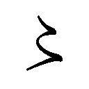

| 甲賀忍法帖 山田風太郎忍法帖(1) (講談社文庫) | |
| 山田風太郎 | |
甲賀忍法帖
山田風太郎忍法帖１
山田風太郎
舞扇をかさねたような七層の天守閣を背景に、二人の男は、じっと相対していた。
日が照ると、二人のからだは透明になり、雲が影をおとすと、二人の影は朦朧とけぶって、消えさるようにみえた。無数の目がそれをみていたが、どの目も、しだいにうすい膜がかかってきて、いくどか対象をふっと見失うような気がした。
それでも、だれひとり、目がはなせなかった。五メートルばかりはなれてむかいあった二人の男のあいだに交流するすさまじい殺気の波が、すべての人びとの視覚中枢に灼きつけられていたからだ。といって、二人が白刃をかまえているわけではなかった。どちらも手ぶらであった。もし人びとが、さっきこの庭で二人がみせた、「術」に胆をうばわれなかったら、いまの殺気の光波もみえなかったかもしれぬ。
ひとりは、名を風待将監といった。
年は四十前後であろう。瘤々したひたいや頰のくぼみに、赤い小さな目がひかって、おそろしく醜い容貌をしていた。背も、せむしみたいにまるくふくらんでいたが、手足はヒョロながく、灰いろで、その尖端は異様にふくれあがっていた。手の指も、わらじからはみ出した足の指も、一匹ずつの爬虫みたいに大きいのだ。
──先刻、この男に、まず五人の侍がかかった。未熟にして斬られるのは望むところとは本人の殊勝な申しぶんであったが、仕手はいずれも柳生流の錚々であったから、当人のかまえをみてあきれた。申しわけのように大刀はもっていたが、まるで案山子のように無芸な姿にみえたからである。
ふいに、二人の武士が、「あっ」とさけんでよろめいた。片手で両眼を覆っている。声もかけず、将監の方から攻撃に出たのである。何が、どうしたのかわからなかったが、あとの三人は狼狽し、また逆上した。剣をとって相対したうえは、すでにたたかいの開始されていることはいうまでもないことだから、「不覚」と愕然として、刃を舞わせて殺到した。
将監は横にはしった。そこに天守閣の石垣の一部があった。つむじ風のように追いすがる三本の乱刃からのがれて、彼はその石垣にはいあがったが、おどろくべきことは、彼が敵に背を見せなかったことだ。すなわち、彼の四肢は、うしろむきに石垣に吸いついたのである。いや、四肢ではない、右手にはいぜんとして刀をさげていたから、左手と両足だけだが、その姿で、蜘蛛のように巨大な石の壁面をうごくと、二メートルばかり上から、三人を見おろして、きゅっと笑った。
笑ったようにみえたのは、口だけであった。その口から、何やらびゅっと下にとぶと、三人の武士はいっせいに目をおさえて、キリキリ舞いをした。先刻の二人は、まだ顔をおおったまま、もがいている。風待将監は背を石垣につけたまま、音もなく下におりてきた。勝負はあったのである。
将監が口からとばせたのは、異様なものであった。それは慶長銭ほどの大きさの粘液の一塊であった。通常人なら痰とよぶべきものであろうが、将監のそれがいかに粘稠度の強烈なものであったかは、五人の武士の両眼に膠のごとくはりついたまま数日後にいたってもとれず、それがとれたときは、いずれも睫毛がすべてむしりとられたことからでもわかった。
──かわって、やはり五人の侍の相手になったのは、伊賀の夜叉丸という若者であった。
若者というより、美少年である。服装は山国から出てきたらしく粗野なものであったが、さくらいろの頰、さんさんとかがやく黒瞳、まさに青春の美の結晶のようであった。
五人の武士をまえに、これも腰の蔓まきの山刀に手もかけなかったが、そのかわり、黒い縄のようなものをもっていた。この縄が、実に信じられないような威力を発揮したのである。それは縄というにはあまりにほそく、力をくわえればたちまちちぎれそうにみえながら、刃をあてても鋼線のようにきれなかった。日光の下に、眩めくようにかがやくかと思えば、日が翳ると、まったくみえなくなった。
たちまち、一本の刃が、この奇怪な縄にからまれて、空中たかくはねあげられた。鼓膜をきるようなするどいうなりを発して横になぐる縄に、二人の武士が大腿部と腰をおさえてくずれふした。縄は夜叉丸の両手から、二条となってたぐり出されていた。そばへ肉薄するどころか、あとの二人も、三メートル以上もの位置で、投縄にかかった獣みたいに縄にくびをまきつけられて悶絶した。
あとできくと、それは女の黒髪を独特の技術でよりあわせて、特殊の獣油をぬった縄だということであったが、それは人間の皮膚にふれると、鉄の鞭のような打撃力をあらわした。太腿をうたれた一人などは、鋭利な刃物できられたように肉がはじけていたのである。それが十数メートルものびるかと思えば、まるでそれ自身生命あるもののごとく旋回し、反転し、薙ぎ、まきつき、切断するのだからたまったものではない。しかもそれが刀槍とちがって、夜叉丸自身の位置、姿勢とはほとんど無関係とみえるのだから、相手は攻撃はおろか防御の手がかりもないのであった。
......そしていま、それぞれ五人の武士をたおしたこの二人の奇怪な術者は、魔魅のように音もなくあい対したのである。
天守閣にかかる初夏の雲が、ウッスラとうすれてきた。雲が蒼空に溶けるのは、ほんの数分であっても、なぜか永劫のながさを思わせる。それに似た時間がながれた。......
風待将監の口が、きゅっと笑った。間髪をいれず、夜叉丸のこぶしからうなりをたてて噴出した縄が、旋風のごとく将監を薙いだ。将監は地にふした。その刹那、人びとはすべて、大地にはった灰いろの巨大な蜘蛛を幻覚したのである。縄にうたれたのではなく、みごとに避けたことは次の瞬間にわかった。四ツン這いになったまま、将監の笑ったとみえる口から、うす青い粘塊がびゅっと夜叉丸の頭へとんだからだ。
それは夜叉丸の顔のまえで、空にかききえた。夜叉丸のまえには、円形の紗の膜がはられていた。それがもう一方の手で旋回されている縄だと知って、将監の顔にはじめて狼狽の相があらわれた。
四ツンばいのまま、後方へ、ツ、ツーと水澄のように逃げたが、そのまま頭をさかさに、天守閣の扇勾配の石垣へいっきにはいあがったのには、見ていたものすべてあっとどよめいた。
追いすがった夜叉丸の縄のさきから、将監のからだがとんで、初重の白壁にはりついたとみるまに、唐破風のかげにきえて、そこから粘塊をびゅっと下へ吐きおとした。しかし、夜叉丸の姿はそこにはなかった。もう一方の縄が屋根の一端にからみついて、彼のからだは宙にういていたからである。
将監が、青銅の甍をはしって、その縄をきったとき、夜叉丸はすでに他の一条をべつの一端に投げていた。ゆれる蓑虫は死の糸をふき、はしる蜘蛛は魔の痰を吐いた。眩く初夏の雲を背に、この天空の死闘は、あきらかに人間のたたかいではなかった。妖異な動物──いやいや、人外の魔物同士のたたかいであった。
うなされたようにそれを仰いでいた人びとのうち、まず手をふって左右をふりかえったのは老城主であった。
「もうよい。止めよ、半蔵。この勝負は明日にいたせと申せ」
天守閣の決闘は、すでに三層に移っている。このまま経過すれば、一方の死は必定で、たぶん双方ともに命をうしなうことは明白であったろう。しかし、老城主の口から次に出た言葉は、ひどくしぶいものであった。
「町のものどもの見世物と相成ってはならぬ。駿府は大坂がたの間者でみちみちておるのじゃ」
家康である。
慶長十九年四月の末、駿府城内で、この不思議なたたかいを見ていたのは、大御所家康ばかりではなかった。
将軍秀忠をはじめ、その御台所江与の方、ふたりのあいだに生まれた竹千代、国千代の兄弟、それに本多、土井、酒井、井伊などの重臣もつめておれば、金地院崇伝、南光坊天海、柳生宗矩などの顔もみられた。すなわちここに、草創期の徳川一族、幕府首脳のすべてがあつまったといってよい。大坂冬の陣が起こったのはこの年の十月のことだから、いま家康が「大坂の間者」云々といったのは、じつにさもあるべきことと思われる。
ただこのなかに、二個の「異物」がまじっていた。それはこのような、きらびやかな一座にあって異物的な感じをあたえるというより、どんな人間世界にまじっても、かならず人びとの心に、まるで天外からふってきた冷たい隕石みたいな印象をのこすに相違ない。
家康のやや前方に、五メートルほどのひろい間隔をおいて坐っている老人と老女であった。いずれも雪のような白髪で、その下の皮膚は老人の方は革みたいに黒びかりし、老女は冷たく蒼かったが、それにもかかわらず、このふたりには、並いる千軍万馬の驍将たちにおとらぬふしぎな精気があった。
あいたたかっていた二人の男が、風のようにはしってきて、手をつかえた。風待将監は老人のまえに、夜叉丸は老女のまえに。
老人と老女は音もなくうなずいてみせたが、ぶきみな目は、おたがいに相手がたの術者にじっとそそがれた。老人は夜叉丸に、老女は風待将監に。
「大儀であった」
わけへだてなく、思わず声をかけたのは家康だが、そのまま目を一方にむけて、
「又右衛門、どうじゃ」
といった。
「恐れいってござりまする」
柳生宗矩はあたまをさげた。但馬守に任ぜられたのは後年のことだが、徳川家の剣の師たるの地位はすでに占めていた。
「忍法がいかなるものかはとくと存じておるつもりではござったが、これほどまでのものとは──さきほどの弟子どもの醜態をせめるよりは」
彼のひたいには、うすい汗さえにじんでいた。
「柳生の庄とは隣国の伊賀、甲賀に、かような忍者がひそんでおることを存ぜなんだ拙者の不覚、ただただ恥じいるばかりでござります」
家康は宗矩をしかるどころか、大きくうなずいて、
「半蔵、めずらしいものを見せてくれた」
末席に侍っていた服部半蔵は両手をついたが、若い顔は会心の微笑でいっぱいであった。
「半蔵。甲賀弾正と伊賀のお幻、それからあの忍者両人に盃をとらせえ」
スルスルと老人と老女の方へ寄る半蔵から、家康は顔をまわして、左右をかえりみた。
一方にならぶ嫡孫竹千代、その乳母阿福、傅役青山伯耆守、また土井大炊頭、酒井備後守、本多佐渡守、南光坊天海ら。──
また他の一方にならぶ将軍秀忠、御台所江与の方、その次男国千代、傅役朝倉筑後守、本多上野介、井伊掃部頭、金地院崇伝ら。──
深沈たる家康の目で見わたされて、彼らはきゅっと全身がひきしまる思いがした。いまや徳川家の相続者について、大御所からおどろくべき一つの賭の宣言が発しられようとしているのである。
すなわち、三代将軍たるべきものは、竹千代か、国千代か。
家康は七十三歳であった。
彼は大坂に最後の一撃をくわえようとしていた。豊臣秀頼は、家康のすすめにしたがい、太閤供養のため京都東山に大仏殿を建立したが、この四月なかば、いよいよその巨鐘の鋳造にとりかかった。この大仏殿の建立そのものが、大坂がたにおびただしい出費をさせようという家康の遠謀によるものであったが、彼は、この巨鐘成るのあかつき、その鐘銘に難題をつけて開戦する予定であることは、すでにこの座にある謀臣たちとはかって、ひそかに断をくだしていたところであった。例の「国家安康、君臣豊楽」の八文字を、豊臣が家康を調伏するものというむちゃくちゃないいがかりであるが、家康にとっては、手切れの口実さえつかめば、なんでもよかったのだ。この一事で、家康は生涯の化の皮がはがされて、いまに古狸の名をのこすことになったのだが、それも所詮は、彼の七十三という年齢からきた焦り以外の何ものでもない。家康は、このごろめっきりとおのれの肉体の衰えをかんじていたのだ。
たたかいは勝つであろう。しかし、敵の城がおちるまでに、一年かかるか、二年かかるか、それは計画のほかにあった。はたして大坂城の最後の炎を、この目の黒いうちに見ることができるか、どうか、それは保証のかぎりではなかった。
家康は、おのれの生命の落日を背に、ぬっとそびえる大坂城の黒い影をみた。そして、その落日の彼方に、もうひとつ、さらに巨大な雲の影を夢魔のようにみたのである。
それは、わが亡きあとの徳川家のゆくすえであった。秀忠のあとをつがせるものは、竹千代か、国千代か。兄か、弟か。
兄にする、長子相続制にするとは決しかねるものがあった。この十一と九つの幼い兄弟を見ていると、彼自身まよわざるをえないのだ。なんとなれば、いずれも愛する孫ながら、兄の竹千代は、どもりで、人まえに出て口もハキハキきけず、うすぼんやりしているところがあった。これにくらべて弟の国千代は、はるかに愛らしく、かつ利発な子なのである。──愚かなる兄か、聡明なる弟か。
いま、孫のことで悩みつつ、つくづくと思い出すのは、じぶんの子たちの運命である。三十五年前、家康は長子の信康をうしなった。信康が武田と内通しているといううたがいを織田信長からうけ、徳川家存続のために、涙をのんで信康を殺さざるをえなかったのだ。彼に自刃をすすめる使者にたったのは、伊賀組の首領たる服部半蔵であった。
後年しばしば、家康は信康を死なせたことににがにがしい愚痴をこぼした。関ガ原の役に、「さてさて年老いて骨のおれることかな、せがれがいたらば、これほどのこともあるまいに」と嘆息をもらしたせがれとは、この信康のことで、それほどこの長男はたのもしい麒麟児であったのだ。彼さえ生きておれば、何のこともなかったのである。
次子が結城秀康で、第三子が秀忠だ。思うところあって、家康はこの篤実な秀忠をおのれの後継者としたが、そのため秀康がどれほど不平満々として狂態の人生をおくったか。なまじ彼が勇武の性であるために、家康、秀忠が、どれほど彼をもてあましたことか。
相続ということのむずかしさを、家康は心根に徹して思い知らされていた。徳川家ばかりではない。織田家においても、信長青春の半生は、弟信行の叛乱に消磨されたことを、彼はこの目でみている。どこの家でも、いつの世にもおこりうることなのである。
知っているだけになお迷い、彼は、秀忠とその御台所が、長子竹千代よりも次子の国千代を可愛がっているらしいのを、黙然として見すごしてきた。そしていまや、徳川家の内部では、竹千代派と国千代派がわかれて、ぬくべからざる嫉妬と反感をなげあっていることを知らなければならなかったのである。
秀忠はともかく、御台所の江与の方と、竹千代の乳母阿福とが、たがいにあい似たつよい気性のため、先天的に反発しているようにも思われる。江与の方の母は、信長の妹お市の方で、阿福は、その信長を殺した明智第一の重臣斎藤内蔵助の娘だから、両者の相容れざる根もふかい。阿福はのちの春日の局である。これに、他の侍妾、それぞれの傅役から重臣までが、両派にわかれてからんできた。竹千代には、天海、土井、酒井。国千代には、崇伝、井伊。陰湿冷静な本多佐渡、上野介までが父子両派にわかれてあいゆずらないのだから、骨がらみだ。
この冬、阿福のお茶に毒を入れてあるのが事前に発見された。それと前後して、国千代が暗夜の狙撃からあやうくまぬがれた。
このままにしてはおけぬ！
このままに推移すれば、たとえ大坂はほろぼしたところで、徳川家の土崩瓦解することは、鏡にかけてみるがごとしだ。
しかも、いかなる断を下すべきか？ さすがの家康も、焦燥し苦悩した。厳たる長子相続制か。しかし万一その長男が暗愚なるとき、どんな悲劇をまねくか、戦国の世に生きぬいてきた家康は、諸家の興亡にまざまざとみてきたとおりだ。順にこだわらず、頼むにたる子を選ぶべきか。それから起こる葛藤は、秀康、秀忠の悶着で骨のズイまで味わわされたことだ。この問題がどれほどむずかしいかは、この事件で家康がある一つの重大な決定を行なって、それが「神祖御定法」として徳川家の掟となったにもかかわらず、しばしば歴代の将軍をきめるさい、なお深刻な波がくりかえされたことからでもわかる。......余人はしらず、家康だけは、これを三代将軍のみならず徳川千年の命運にかかわる大事と見た。
そのためにも、いっそういまの内争を、両派の納得するかたちで解決しなければならない。しかし、長年にわたり、からみにからんだ利害、恩怨、感情のもつれを一挙にとくすべがあろうとは思われぬ。しかも、事はいそぐのだ。明日をもしれぬおのれの余命、また最後の戦争を眼前に、いまのいま解決しなければならないのだ。そして、なおいっそう重大なことは、この内部抗争を、断じて大坂がたにかぎつけられてはならぬという至上命令であった。
......この早春の雪ふる夕のことである。家康は駿府の城に天海僧正をまねいて、秘室に対坐した。天台の血脈を受けるという名目であったが、その実、このふたりが密語したのはこの一事であった。そして天海は、瞑想ののち、おどろくべき解決法を提案したのである。
「──いずれを理をもってとき、情をもってなぐさむるとも、もはやかくあいなっては、とうてい一方がサラリと肯うものとは存じませぬ。......いかがでござる、いっそ両派より、それぞれ、その望みを一身に負った剣士を出させ、その勝敗によって決しては」
家康は目をあげて、天海をみた──。南光坊天海も一応竹千代派ではあるが、むろん、それより徳川家をいかにすべきかということに苦しんでいることは同様だ。
剣法の選手の勝敗に両派の運命を賭ける！ いかにも武門の相続争いにふさわしい男性的な方法であるが、またあまりに単純にすぎる。さすがの怪僧天海も、この内輪もめだけには、よほど手をやいたとみえる。
「一案じゃ。しかし、剣の勝負には、時の運不運と申すこともある。時の運がすなわちおのれの運とあきらめてくれればよいが、何せ、あきらめのわるい女どももからんでおるのじゃ。さて一人対一人の勝負で、彼らが得心してくれればよいがのう」
「それでは三人ずつ」
「その三人をえらぶことで、こんどは両派それぞれの内輪もめを起こしはすまいか」
「五人ずつ」
「............」
「十人ずつ。これなら、両派の精鋭、時の運とばかりは申せず、みれんののこることもござるまい」
家康はうなずいたが、やがてかぶりをふった。
「十人ずつ、そこまでたたかえば、両派とも納得はするであろう。じゃが、十人ずつの剣士をえらぶとすれば、必然、両派の家々にひろくまたがろう。土井と井伊、酒井と本多......相たたかわせるは、無惨でもあり、ばかげてもおる。のみならず、争いはいっそう深みにはまり、また公然のものとなる。大坂方に知られずにはいまい。これは徳川家の大秘事なのじゃ」
天海は、目を半眼にしたまま、雪の音をきいていた。深殿の幽寂は、さながら山院のようである。ふっと大きな目を見ひらいた。
「忍者」
と、つぶやいた。
「忍者？」
「されば、忍者をつかわれてはいかがでござる。......雪の音で、ゆくりなくもむかし雪の一夜、江戸麴町の安養院で、先代の服部半蔵からきいた話を想い出してござります。──甲賀と伊賀に、源平のむかしより、あくまで和睦せず、千年の敵としてにくみ合う忍者二つの一族があるとか。......そのため、彼らのみ、どうあっても服部のなかだち効をそうせず、いまだそれぞれ伊賀と甲賀にひそんで、ただ服部家との約定により、たがいにあいたたかわずにおるまでとのこと、もし服部家がその手綱をとけば、血ぶるいして闘争をおこすは必定にて、まことにこまった奴らと、半蔵が嘆息したのをきいてござる。いかがでござろう、その二つの忍法の一族を、竹千代さま方、国千代さま方の二つに当て、いま服部家に命じて、その手綱を放させ申しては」
天海はぶきみな笑いをもらした。
「これならば、大坂がたに知られるおそれなし、またその両族すべて血の海に没しても、徳川家のさむらいに傷はつきませぬが」
家康はながいあいだ考えこんでいたが、やがてひとりごとのようにいった。
「服部か。あれは信康を殺しにいった男じゃが、こんどは孫の一方を葬むるという一事にも、また伊賀者をつかわねばならぬか？」
にがい笑いが、皺だらけの顔にはしった。まことにこれが実現するならば、徳川家の運命をにぎるものは、まさに忍者の一族だといってよかったからである。しかし、それも家康じしんの命令であることは、陰鬱な皮肉であった。
甲賀伊賀の忍者と徳川家との縁は、ふしぎにふかい。
そもそも、忍法といえば、なぜ甲賀と伊賀の独壇場となったのか。それには、これらの国の複雑に入りくんだ山と谷の地形のために無数の小土豪の割拠しやすかったこと、また京にちかいために、平家や木曾や義経の残党が潜入した形跡があること、さらに南北朝の勢力争いの大きな舞台となったこと──などの地誌的、社会史的な事情があげられるけれど、これらはかならずしも甲賀伊賀にかぎったことではあるまい。
ともあれ、すでに壬申の乱で叛乱をおこした大海人皇子が伊賀の忍者をつかったという記録のあること、義経の家来伊勢三郎義盛が伊賀の忍者であったという伝説のあること、近江の名族佐々木六角入道が足利将軍に抗したさい、甲賀侍がその配下となって足利勢をなやまし、世にこれを「甲賀鈎の陣」といってふしぎがられた事実。──などから、伊賀甲賀の忍法の由来するところ、遠くまた深いとはいえる。しかも、これらにいずれも共通していることは、彼らがつねに時の権力者へ反抗する側にたっていることで、そこに彼らの反骨またはぶきみな野性といったものが感じられる。──
戦国時代にはいると、いうまでもなく「忍びの術」の用途は、多々ますます便じた。諜報、斥候、暗殺、放火、攪乱──それらの必要から、群雄はきそって忍者をもちい、これを「夜盗組」「乱波」「透破」などと称した。そしてけっきょく、実戦裏に、甲賀伊賀の忍びの術がもっともその精妙なことが証明されたのである。甲賀者、伊賀者はあらそって諸家に買われ、またそれに応じて、その国でも、甲賀五十三家、伊賀二百六十家などとよばれるほど忍法の諸小派がおこるにいたった。
しかし、やがて彼らにとって受難の時代がきた。信長の天下統一がすすむにつれ、その布武の鉄蹄をうけなければならなくなったのだ。それには、京にちかいという地理的な必然性もあったにはちがいないが、それより信長という人間が、おそらく彼もまた大いに忍びの者を利用したにせよ、先天的にそういう妖気ただよう薄明の一族を好まなかったせいではないかと思われるふしがある。したがって、彼らもこれに抵抗した。これが世に「天正伊賀の乱」といわれるものである。
この「国難」にあたって、がんこに各流各派をまもっていた甲賀伊賀の土豪たちは結束した。いくどかの抗戦ののち、衆寡敵せず彼らはふみにじられたが、その抵抗ぶりがあまりに効果的で、織田軍はみごとに翻弄され、信長自身狙撃されてあやうく命びろいしたこともあったくらいだから、あとの掃滅ぶりも無慈悲をきわめた。城砦はすべてやきはらわれ、神社や寺もことごとく破壊され、信長は、僧俗男女をとわずみな殺しにせよとさえ命じた。かくて亡民となった彼らはちりぢりばらばらになって逃亡し、そのおもだったものは三河にはしって、徳川家にたよった。そこには伊賀の名族服部半蔵が以前から仕えていたからである。
甲賀者、伊賀者に、もっともふかく目をつけていたのは家康であった。いかに彼がその利用価値を認めていたかは、のちに幕府をささえるものの重大な一つに隠密政策があったという事実によってもうかがわれるが、そのため彼ははやくから、甲賀伊賀の地侍たちをつとめて召しかかえるようにしていた。その頭分が服部半蔵だったのである。
服部家は、平家の末孫、あるいはそれ以前から伊賀の一郡を領していた家柄といわれるが、半蔵がこのころすでに家康にいかに重用されていたかは、れいの信康自刃に際し、死の使者としてむけられたことからでもわかるが、この伊賀の乱以後、家康はいよいよ甲賀伊賀のひそかなパトロンとなり、また服部半蔵は、忍者たちの総元締の地位をかためるにいたった。
家康は、信長の手から、つとめて甲賀伊賀をかばってやっていたが、その報酬はのちに、家康「生涯の大難」の第一といわれる伊賀加太越えのとき、あたえられることになる。すなわち、本能寺の変にさいし、たまたま家康は信長にまねかれて上方見物にきていたが、この変事によって本国三河との連絡をたたれ、遊びの旅だから供のものもきわめて少数であったし、まったく進退きわまって、いちじは自害をかんがえたくらいだったのである。このとき、間道づたいに山城から甲賀へ、さらに伊賀から伊勢へとぶじ家康をみちびき、護衛したのは、服部半蔵の呼び声に嵐のごとくあつまった甲賀伊賀の忍び組三百人であった。
この功によって、半蔵はのちに八千石の服部石見守となり、江戸麴町に屋敷をあたえられ、伊賀同心二百人の頭目となる。いまにのこる半蔵門の名は、彼の屋敷のまえにあったから生じたものであり、神田に甲賀町、四谷に伊賀町、麻布に笄町（甲賀伊賀町）という町ができたのも、そこに甲賀者、伊賀者が住んだからである。家康だけは、みごとに彼らを飼いならした。
それにもかかわらず、家康の半蔵をみる目は、決してふッきれたものとはいえなかった。とくに、それは老年にちかづくにしたがって暗くなった。半蔵が、死んだ信康を思い出させるのだ。じぶんが命じたことなのだからどうにもしかたがないが、それだけにいっそうやりきれない気持になる。殺したくない子であった。愚痴のすくない家康に、信康だけはただ一つの理性の日かげに消えやらぬまぼろしであった。半蔵はそれを感じて、ふかく身をつつしんだ。麴町に安養院という寺をつくり、信康の供養塔をたてて、日夜読経に余念のない生涯をおくったのはそのためである。
彼は慶長元年に死んで、子があとをついだ。これがいまの服部半蔵である。そしていまや家康は、二代目の半蔵に、またもや憂鬱だが絶対に必要な使命をさずけなければならぬこととなったのだ。
甲賀伊賀の忍者一族、ほとんどすべて服部家の支配下にあるのに、ただ、たがいにあいいれないばかりに、手をたずさえて世に出ることを拒否し、ふかく山国にこもっているという忍法の二家。
服部家に積年の大恩あるゆえに、その誓言をまもり、あいたたかうべき鮮血をあやうくおさえているという奇怪な宿命の二族。
その両家の首領は、半蔵の秘牒によって、ようやくこの駿府城内にその姿をあらわした。
甲賀弾正と伊賀のお幻。
そして彼らはそれぞれの配下によって、いま世にある忍者とはまったく類を絶するぶきみな秘術を展開してみせたのである。それは忍法の勝敗によって、三代将軍をきめようという奇想に、柳生宗矩がくびをかしげたからである。もっとも、これは宗矩にかぎらない。この相続という重大事に関係のあるものは、ことごとく、こんなえたいのしれない勝負によってじぶんたちの運命を決せられることに疑心と不満をもつのは当然である。家康ですら、内心、なお迷っているところがあった。ただ、いかにかんがえても、ほかにこの乱麻の政争を断つ快刀がなかっただけのことだ。
しかし、いまやさすがの柳生宗矩も、完全にこの奇想によって地上にえがき出されるであろうたたかいのすさまじさを了解せざるを得なかった。ほかのだれしもが、それをみとめた。忍者の変相、速歩、跳躍などが常人をこえていることは知らないではない。それはギリギリの肉体と精神の鍛錬によるものだ。が、それだけに、そこにはある限界がある。これは剣法においてもおなじことだ。しかし、いま目撃した忍者ふたりの神技は、あきらかに人間の──いや生物の、肉体の可能性の範囲にありながら、しかも常識を絶したものであった。
「弾正」と、家康は老人によびかけた。
「風待将監と申すものの業には感服いたしたが、そちの弟子には、あのような妙術をもつものが、まだほかにおるか？」
老人はさげすむように将監をちらとみた。吐き出すようにいった。
「服部どのの御内示を承わり、敵にみせてもまずさしさわりのない、いちばん手軽なやつを召しつれましてござる」
「将監がいちばん手軽なやつと申すか」
家康はあきれて弾正をみたが、こんどは老女のほうをかえりみて、
「お幻はどうじゃ」
お幻はうすきみのわるい笑顔になって、だまって白いあたまをさげただけであった。
「十人──いや、そちたちをのぞいて、あと九人要るぞ」
「わずか、九人。ほ、ほ」
さすがの家康が、なぜか背すじに冷水のつたわるのをおぼえた。きっとふたりをにらみすえて、
「そちたちは、徳川の世継ぎを定めるために、たたかってくれる所存があるか」
「徳川家のおんためとは申さず、服部どののおゆるしさえあれば、いつなりと」
と、老人と老女は同時にこたえた。
「ゆるす、ゆるす。先代がそなたらにかけた誓いの手綱をいま解くぞ。甲賀か、伊賀か、勝ちの帰するところ、恐れ多くも将軍家の天命をさずかりたもうおん方がきまるのじゃ。いまだかつて、これほど大いなる忍法の争いがあったか。よろこんで死に候え」
と、思わず服部半蔵はすすみ出てさけんだ。
彼は、父が死ぬまで大御所秘蔵の信康君に死の使者になったことを悔いていたのをわすれることはできなかったのだ。服部家にかかる雲をはらうはこのときとかんがえたのである。しかし、こんどの使命とて、決して大御所が欣然としてあたえたものでないことを若い彼はしらぬ。また父が生涯、ついにこの二門を甲賀伊賀に封じこめていたことの恐るべき意味を知らぬ。
「さらば、弾正、お幻、そちたちのえらぶ九人の弟子の名をしるせ」
と、家康は小姓にあごをしゃくった。
小姓が、筆、硯と、細い二巻の巻物様のものをささげて、甲賀弾正とお幻のまえにすすみよった。
巻物をひらくと、白紙であった。二巻の巻物に、老人と老女は筆をはしらせ、また交換した。それから家康にかえされた。そして次のような名と文字がかかれていったのである。
甲賀組十人衆
甲賀弾正
甲賀弦之介
地虫十兵衛
風待将監
霞刑部
鵜殿丈助
如月左衛門
室賀豹馬
陽炎
お胡夷
伊賀組十人衆
お幻
朧
夜叉丸
小豆蠟斎
薬師寺天膳
雨夜陣五郎
筑摩小四郎
簔念鬼
蛍火
朱絹
服部半蔵との約定、両門争闘の禁制は解かれ了んぬ。右甲賀十人衆、伊賀十人衆、たがいにあいたたかいて殺すべし。のこれるもの、この秘巻をたずさえ、五月晦日駿府城へ罷り出ずべきこと。その数多きを勝ちとなし、勝たば一族千年の栄禄あらん。
慶長十九年四月
徳川家康
弾正とお幻は、一巻ずつ、それぞれの名の下に血判をおした。それを巻くと、家康は、二巻ひとにぎりにして宙になげた。二巻は空でわかれて、左右におちた。
甲賀弾正の血痕を印した巻物は国千代の方へ、伊賀のお幻の血痕を印した巻物は竹千代の方へ。
国千代は甲賀に、竹千代は伊賀に、三代将軍たるべき運命は、いまこの恐るべき忍法の二門の手中にしかと身をゆだねたのである。
まっかな夕日にぬれて、甲賀弾正とお幻はたたずんでいた。
駿府城外、安倍川のほとりである。たったいま、それぞれ二つの秘巻をいだいて、西へ風待将監と夜叉丸がかけ走ったところだ。
「お幻婆、妙な話になりおったな」
と、弾正がひとりごとのようにいった。
「さればよ、四百年のむかしから、陰陽二流の忍法を争って、ともに天をいただかなかったそなたの家とわたしの家が、それぞれ孫の恋にひかされて、ようやく和睦しようとしていた矢先に」
「朧と弦之介は、いまごろ信楽の谷で逢うているやもしれぬな」
「ふびんや、しょせん、星が違うた！」
ふたりは、顔をそむけた。朧は老女の孫であり、弦之介は老人の孫であった。
ふいに弾正がふかい声でいった。
「わしたちがそうであった。若いとき、わしは伊賀のお幻を恋うたぞい」
「それをおいいやるな」
お幻は白髪をふりたてた。
「四百年にわたる両家の宿怨じゃ。わしたちとおなじ運命が朧と弦之介のうえにきたのじゃ。祝言の日どりまでかんがえていたとき、服部家から忍法争いの封をといてこられたことこそ恐ろしき天意」
「婆、やるか？」
「おお、たたかわいでかよ」
ふたりは、物凄い目を見かわした。
「婆、おぬしは甲賀の卍谷十人衆をよく知るまいな」
「知っておるのも、知らぬのもある。ふ、ふ、なにが甲賀の忍法など、──弾正どの、おまえさまこそ、伊賀の鍔隠れ十人衆をよくは知るまい？ 四百年、血と血をまぜ合うて、闇の中にかもしあげた魔性の術を。よいかや、伊賀組十人は──」
「九人であろう？」
と、弾正はいった。
お幻はだまって、弾正をにらんだ。黒ずんできた夕焼けのなかに、その顔が墨のように変わって、両眼がとびだした。その皺だらけの鳥みたいなくびの両側に、キラキラとなにやらひかっていた。
甲賀弾正は、音もなく四、五歩はなれて、お幻とむかいあい、ふところから、一巻の巻物をとり出した。
「お幻婆、これは、さっき夜叉丸がもっていったはずのものじゃが、このとおりわしのふところにある。夜叉丸のたわけめ、まだ気がつかず、西へはしっておることであろう。将監によって、まず甲賀組だけが、討つべき伊賀の十人の名を知る。いいや九人を──」
さっと巻物をふると、例の忍者の名をつらねた文字があらわれた。その伊賀のお幻の名のうえに、朱の棒がひいてあった。
それなのに、お幻は一語ももらさず、なお石のように立っている。そのむき出した両眼から、涙が頰につたわった。弾正は凄絶きわまる笑顔でそれを見まもっていたが、
「南無。──」
とさけぶと、その口から、ぷっと何かを吹いた。それはひかりつつ、お幻のくびにまっすぐにつきとおった。針だ。ふつうの吹針のように微小なものではなく、二十センチもあるかにみえる針であった。さっきお幻のくびの両側にひかっていたのもそれで、老婆のくびは十文字に針で縫われていたのである。
お幻は両手をあげて、同時に二本の針をひきぬいた。その口から怪鳥のようなさけびがほとばしり出た。その意味を弾正は知らなかった。次の瞬間、お幻は水けむりをあげて川にふしたからだ。針には血中にはいれば獣をも即死させる猛毒が塗ってあった。
「お幻婆、ふびんじゃが、忍法の争いはこういうものだ。やがて追いおとす九人の伊賀衆を冥途で待て」
と、弾正はつぶやいて、巻物をまきかけたが、ふとそれを河原におくと、
「殺さねばならぬ敵じゃが、これもむかしおれの恋うた女、せめて水に葬ってやろうかい」
とつぶやいて、なかば水につかった老婆の死骸を足で川へおしやった。
ぱっと異様な羽ばたきをきいたのはそのときである。弾正はふりかえって、一羽の鷹が河原においた巻物を足でつかんでとびあがるのをみた。一瞬に、さっきのお幻の断末魔の声が、それを呼んだことを知った。身をひるがえそうとして、その足を冷たいかたいものにつかまれた。弾正は水中にたおれた。
弾正はふたたび起たなかった。そのあおむけになった胸に、青い手ににぎられた針がつきたてられていた。老婆はうつ伏せに、なかば弾正にのりかかっている。ズズ、ズズと、そのままふたりはながれだした。
残光のなかに、鷹はひくく旋回した。足でつかんだ巻物は、いまは完全にひらかれたまま風にふかれて、ふたりの顔をなでた。ゆるやかにとぶ鷹の下を、しずかにながれつつ、お幻の青い手が弾正の胸の血のりをなぞると、巻物の「甲賀弾正」の名のうえに朱の棒をひいた。日が沈んだ。
青い三日月に、美しい血相を黒ずませて、伊賀の夜叉丸がかけもどってきたころ、お幻と弾正の屍は、白髪を波にあらい、もつれさせつつ、駿河灘をながれていた。かつて恋しあったというこのふたりの老忍者の魂は、鎌のような弦月のうかんだ夜空で、いまそのからだとおなじように抱きあっているのか。いいや、おそらくは現世のみならず、魔天にあっても永劫の修羅の争いをつづけているであろう。
ともあれ、この甲賀伊賀の忍法争いのまっさきに、その両頭目はまずあい搏って、おたがいを葬り去ったのだ。
そして、なお殺戮の秘巻をいだいて、風待将監は甲賀卍谷へひた走る。いや、それよりも、もう一つの巻物をつかんだままの鷹は、闇黒の天をついて、伊賀へ、伊賀へ。──
山また山の甲賀伊賀の国境は、まだ晩春だった。土岐峠、三国岳、鷲が峰山などの連山には、ひるならば鶯が鳴きしきっているのだ。
いまは夜明け前だ。糸のような三日月が、西の山脈に沈みかかっていた。
まだ鳥も獣もねむっているその時刻。──信楽の谷から土岐峠へむかって、風のごとくあるいてゆく二つの影がある。
「弦之介さま」
うしろの、まるで大きな鞠みたいにふとった影が、カン高い声で呼んだ。
「弦之介さま、どこへゆくのでござる？」
「朧どのにあいにゆくのだ」
と、さきの長身の影はこたえた。うしろの影はしばらくだまってあるいていたが、
「これはたまげてござる。いくら祝言の約束を交した相手とはいえ、はや夜ばいとは恐れ入った。......しかし、わるくはないな、おれも──」
と、ニヤニヤしているらしいひとりごとで、
「いつか伊賀屋敷でみた朱絹という女──まるであの三日月みたいな感じの美女であったが、おれがふとっちょのせいか、あんな女が虫が好くわえ。したがって、あの女もおれのようなふとっちょを虫が好く。へへ、弦之介さまは朧さまのところへ、おれは朱絹のところへ、主従そろって夜ばいとやらかすか。伊賀の連中、きもをつぶすであろうな」
「たわけめ」
甲賀弦之介はしかって、厳粛な声で、
「丈助、お祖父が、いかなる用で駿府へくだったか、お前は知っておるか」
「徳川家忍び組の頭目、服部半蔵どのの書状によれば、甲賀弾正子飼いの忍者ひとりを召しつれよ、その術を大御所のご覧にいれたいとござったが」
「それをお前はどう考える？」
「どう考えると申しておそらくは弦之介さまと伊賀の朧さまとの祝言まぢかきうわさを服部どのがきいて、それならばもはや両家の宿怨がとけたものと見なし、両家そろって世に出でよとのおすすめであろうと──弾正さまがお前さまにお話なされたのを承わってござるが」
「そうなれば、お前はうれしいか」
ふとった影はだまった。
遠くから、さあっと夜風が樹々を鳴らしてくると、ややあって雪のようなものが満面に吹きつける。山桜だ。──もう道らしい道もない山の中であった。ふとった男は、鵜殿丈助という。うす暗い三日月にうかんだ顔は、鼻も頰も唇もダラリとたれさがったような滑稽な異相だ。それが、くしゃくしゃっとゆがむと、ツイとうしろへさがった。
そこにふとい二本の立木があった。樹の間隔は三十センチぐらいしかなかった。ところが、ダブダブとふとって、その倍はありそうな樽みたいな丈助の影が、そのあいだをスルリとむこうへぬけたのである。
「正直なところ、あんまりうれしくはござらん」
と、樹の向こうで、おじぎをしながら、もちまえのカンだかい声を殺していった。
「お前さまがお怒りなさることはよく存じておりますがな。これは、おればかりではない、地虫十兵衛、風待将監、霞刑部、如月左衛門、室賀豹馬ら......みな大不服です。われわれは、いつかきっと伊賀のお幻婆一党をたたきつけたい、われらが忍法をもって血泡をふかせたい、伊賀ついに甲賀に敵すべからず、と敵に腹の底まで思い知らせたい。──お、そうおれをにらみなさるな、お前さまの目にはとうていかなわぬ。──でもな、こんどの祝言をお前さまが望まれ、弾正さまがうなずかれたうえは、おれたちは家来、決してじゃまはいたさん、それどころか、これでお前さまがお幸せになるんなら、何の異議かこれあらん、よろこべ、よろこべと、おれはしきりにみなを説いているくらいで──」
「かたじけない。それゆえ、おれはお前だけを供につれて忍び出てきたのじゃが」
と、弦之介はしずんだ声でいった。
「おれは、お前らをばかだと思う。あれほどすさまじいお祖父の仕込みを受けて、これほど恐ろしい秘術を身につけたわれら一族が──これはお幻婆の一党もおなじであろう──たがいにあい縛って、この山中にうずまっておるとは愚かしさのきわみだ。いつのころからか、おれはこう考えだした。お幻婆の孫娘、朧と夫婦になろうとは、この考えから思い立ったことだ」
甲賀弦之介は、どこか知性の匂いすらある秀麗な青年だった。暗い月明りだが、そのながい睫毛のおとす影には、瞑想的な憂愁のかんじがある。
「しかし、そう思って、むりをして朧にひとめあったとたん、そのようなさかしらな思案はけしとんだ。そのような智慧、かけひきをぬき去っても、あの娘を敵とすることはできぬ、こう思ったのだ」
「お前さまが、朧さまに惚れなさったのじゃ」
「なんとでもぬかせ。お幻の孫でありながら、あれにはなんの芸もない。きけば、あらゆる婆の仕込みも、一切無効無益であったとか、その嘆きがなければ、あの婆は朧を甲賀にくれる弱気は起こさなんだであろう」
「しかし、おれは朧さまのまえに出ると、からだが破れ紙みたいになるような気がする。ふしぎでござる」
「あの娘が、太陽だからだ。太陽のまえには、魑魅魍魎の妖術など、すべて雲散霧消してしまう」
「だからこわいと申すので......われら一族が雲散霧消しては一大事」
鵜殿丈助は、樹のあいだからまんまるい首をつき出し、おそるおそるいった。
「弦之介さま、ここでひとつ思いなおしては下されませぬかな？」
「丈助」
「へ？」
「胸さわぎがいたす。きのう夕日をみているうちに、ふっと恐ろしい影が胸にさしたのだ」
「はて？」
「駿府にまいられたお祖父のことだ」
「弾正さまが、どうなされたと仰せでござる」
「わからぬ。わからぬから、もしや伊賀の方へ、お幻婆より何か知らせがありはせぬかと、さっき急に思いたって、朧どののところへききにゆく気になったのだ」
「や？」
と、丈助はふいに夜空をあおいだ。たかい杉林の空を、そのときはばたきとともに、異様な影がかすめすぎた。
「なんでござる？」
「鷹じゃ、しかも、足に白いながい紙片をつかんで──」
甲賀弦之介もいぶかしげにその行方を見おくっていたが、急にきっとふりかえった。
「丈助、あれをとらえてまいれ！」
あっとカンだかい声をのこすと、鵜殿丈助はかけだした。
はしるというより、ころがるといった方が適当だ。
甲賀の忍者鵜殿丈助は、夜空をあおぎながら、鞠のように山をころがっていった。鞠と違うところは、山を上へ転がる点だが──。
いや、それだけではない。空を見ながらはしるのだから、彼は幾十本かの樹に衝突した。たしかに衝突したとみえるのに、次の瞬間、彼はなんの異常もなくむこうへかけぬけている。彼はけむりか。いや、そうではない。これを高速度に撮影したら物体に激突したとたん、彼のからだのあらゆる部分が、鞠のごとくくぼむ奇怪な現象がハッキリみえたかもしれぬ。じっさい、二、三度ははねかえって、あおむけにころがったこともあるのだが、再び自動的にはねかえってまたはしりだすのだ。鞠とするなら、これは生命ある鞠であり、意志力をもつ鞠であった。
どこから夜の大空をとびつづけてきた鷹か、──しかし足にながい紙片をつかんで、鷹はみるもむざんにつかれはてていた。その影が、さっと頭上の杉木立をかすめたとたん、鵜殿丈助は、はしりながら小柄を投げた。
月明りにキラ──とひいたひかりの糸のはしで、鷹はバサと大きな羽根の音をたてた。が、みごとに小柄を空にそらして、たかく飛び立っている。しかし、そのはずみにつかんでいた紙片を足からはなした。紙片はヒラヒラと杉木立のあいだをひるがえりつつおちてくる──。
鵜殿丈助は、下でその一端を受けとめた。が、他の一端がまだ地上につかないうちである。背後で、フガフガと空気のもるような声がきこえた。
「それをこちらにもらおうか」
丈助はふりかえって、そこにひとりの老人の姿を見とめた。からだが釘のように折れまがり、林をもれる蒼い斑にひかる髯は地を掃いている。
「おう、これは、伊賀の......小豆蠟斎老ではないか」
丈助は狼狽した。
「いや、しばらくぶりです。実はこれから、弦之介さまのお供で、伊賀の方へまいるところで──」
「............」
「な、なに、夜ばいではござらぬよ。その、例の駿府ゆきの件につき、お幻さまから何か知らせはなかろうかと、胸騒ぎが──」
「それをこちらにもらおうか」
と、小豆蠟斎は挨拶をかえさず、フガフガとくりかえした。
「いまお前が小柄をなげた鷹は、お幻さまのお鷹。──」
「な、なんだと？ あれが？」
鵜殿丈助は、ふっと手にひきずった紙片に目をおとした。あきらかに何やらかいた巻物だ。
「してみると、あの鷹は駿府にいったお幻さまからきた鷹か」
「さようなことは、お前の知ったことではない。その鷹に小柄をなげたお前の仕業はおって窮命するとして、まずそれはこちらにもらおうか」
丈助はだまって蠟斎を見つめていたが、何思ったか、その巻物をクルクルと巻きはじめた。
「なるほど、さすがはわれらが弦之介さま──弦之介さまに知らせた虫というのはこのことか。駿府よりとんできた鷹、その鷹がもってきたこの巻物──これはちょいと拝見いたしたいな」
「ぷっ、これ──うぬのまえにおるのは、余人でない、伊賀の小豆蠟斎であるぞ。相手をみて、口から出放題のことを申せ」
老人の目がぶきみなひかりをはなってきた。
「へへへへ」
と、丈助は笑いだした。
「それそれ、それだ、蠟斎老。この巻物は仰せのごとくそっちのもの、おわたしするのに異存はないが、さっきからのそっちのフガフガした口が──あとでおれを窮命するの、相手をみてからものを言えの──口のきき方が気にくわん」
「なんじゃと？」
「蠟斎老、四百年来の宿敵が今まで服部家におさえられ、ちかくは両家の縁組で、いっさいがっさい水に流してしまうとは──めでたいこともめでたいが、心残りといえば心残りであるな、そうは思わぬかな、蠟斎老」
丈助、何を思いついたのか、からかっているようなヘラヘラ声だ。
「というのは、蠟斎老、貴老の忍法がな、はっきりとは知らんが、うわさにきくと、どうやらおれの忍法と一脈あい通じるものがあるらしいぞ。どうも他人のような気がせん、おれのお祖父か伯父貴のような──とはいえ、伊賀と甲賀、どこまでちがうか、どっちが強いか、どうじゃ、喧嘩ではない、服部家との約定もあれば、決して喧嘩をするつもりはないが、ひとつここでないしょで遊んでみる気はないか」
「丈助、忍法の遊びは、生命を手玉にとるも同然じゃぞ」
「いやかな、蠟斎老、それならこの巻物はわたさない──ということにしておこうか」
地にはうほど折れまがっていた老人の腰が、キューッとのびた。のびると、まるで物干竿をたてたようだ。この変化に、さすがの鵜殿丈助が、ポカンと口をあけて、見あげ、見おろした。
「ほ。──」
と嘆声をもらしたとき、小豆蠟斎の足がはねあがって、まんまるくふくれあがった丈助の下腹をすさまじい勢いで蹴りあげていた。
まるで、楔をうちこむような打撃であった。常人ならば、この足の一撃で腹部に穴があいたであろう。......鞠をうつような音がして、丈助は三メートルばかりうしろへはねとんでいた。
「いささか、こたえたぞ蠟斎老」
一瞬に、はげあがったひたいに苦痛の汗がふき出し、しかめっ面となったが、鵜殿丈助はニヤリとして、いぜん、巻物をつかんだ片腕をあげていた。
「しゃっ」
蠟斎は口のなかで異様な激怒のうめきをもらすと、ツツとまえへ出た。──
腰に山刀をさしてはいたが、老人は抜かなかった。たとえ抜いても、使用は不可能であったろう。なぜなら、そこは、月光がいく千匹の夜光虫のように浮動するのみの、無数に林立する杉の山だったからだ。
これが遊びか。先刻蠟斎が、忍法の遊びは生命を手玉にとるものといったが、まことにそれは恐るべきスポーツであった。丈助は杉木立を楯にクルクルとにげた。それを狙って、蠟斎のひょろながい手、または足が、その尖端に目があるもののように追い打った。老人のからだは数本の木のこちら側にあるのに、その手や足は、鞭のように湾曲してはしるのだ。その襲撃の姿態は、章魚のように怪奇であった。この老人は骨がないのか。いや、その四肢の尖端が触れるところ、小枝、木の葉を刃物のごとく切りとばす威力をみるがいい。実に小豆蠟斎は、全身に無数の関節があるとしかみえなかった。その証拠に、その首、腰、四肢は、常人ならば決して湾曲も回転もしない位置、方角に、湾曲し、回転したからである。
「化物爺いめ！」
さすがの丈助が、眼前にせまった蠟斎の、顔と胴と足が三重に前後にいれちがっているのをみたときは、金切声で悲鳴をあげた。
そのダブダブした頸に、蠟斎の手が蔓のようにまきついた。丈助の顔が腐熟したかぼちゃみたいにくろく変わった。
蠟斎はふるえ声で笑った。
「この頓狂者め、小豆蠟斎の業を思い知ったか」
ギューッとしめつけた腕の輪が、頸骨だけの直径になった。蠟斎は片手をのばして、丈助のダランとたれた手の巻物をとろうとした。
そのせつな、腕の輪が汗でヌルリとすべったかと思うと、鵜殿丈助のからだは、また一メートルばかりむこうへぬけ出していたのだ。みるまに、からだが袋に風をふきこんだようにぽんとふくれあがったのである。
「あっ」
蠟斎は、呆然自失した。
ひとを化物と呼んだが、化物はじぶんの方だろう。この鵜殿丈助という男のからだは、いかに打撃しても、いかに絞めつけても、まさに風袋のごとく効果がないのであった。おなじ異常な柔軟性をもつとはいえ、蠟斎のからだを骨の鞭とするならば、これは巨大な肉の鞠といおう。
「年だな、蠟斎老」
と、鵜殿丈助はダブダブと筋肉を波うたせて笑った。小豆蠟斎の白髪とひげは、汗のためにねばりついた。
「いや、おもしろかった。どうやら、おれが勝ったようだな。それでは約束どおり、この巻物は、遊びの褒美としておれがもらってゆこう」
カンだかい声でヘラヘラと笑いつつ、鵜殿丈助のまんまるい影が、杉林のむこうへころがってゆくのを、小豆蠟斎は、全身の骨をこわばらせて見送っているだけであった。肉体の疲労よりも、精神的な絶望感が、この老人のからだを虚にしたようであった。
月沈んで、甲賀の国、伊賀の国の谷々に、ひときわ濃い闇がたれこめた。
が、それを分かつ山脈には、黎明のひかりがさしはじめていた。もう満山チチチチと小鳥がさえずり、草の露がきらめきだしている。
とはいえ、この時刻、甲賀信楽の谷から伊賀へこえる土岐峠で、春の精のような明るい声がながれた。
「まっ、弦之介さま！」
蒼みがかってきた空を背に、五つの影が立っていた。
「おう、朧どの！」
下から、若い鹿のように灌木をヘシ折ってかけのぼってくる影をみながら、うれしそうな声がふりかえって言った。
「だから、わたしがいったではないかえ？ きのう夕方からただならぬ胸さわぎ、甲賀へゆけば溶けるように思ったが、見や、心をあわせたように弦之介さまもこちらへお越しあそばした。弾正さまから、何かお知らせがあったにちがいない。おう、弦之介さまのあの笑顔、きっときっと、よい知らせに相違ない」
彼女は薄紅の被衣をかぶっていた。そのうえ、夜はまだ明けていなかった。──なのに、その娘から透けて出るようなかがやきは、気のせいだろうか。
伊賀の忍者の頭目お幻の孫娘、朧である。
しかし、うしろにひかえている四人は、彼女のはずんだ声に対して、夜明前の闇が四つわだかまったよう黒ぐろとだまりこんでいる。
侍女らしい二人のうち、ひとりは皮膚の蒼白い、うりざね顔の妖艶な女で、もうひとりは小柄な、むしろ可憐な感じをあたえる娘であったが、この小娘の頭上にじっとのぞいてみえるものに気がついたら、だれだってぎょっとするにちがいない。蛇なのである。飾りではない。襟もとからくびすじをひと巻きしてはいのぼっているその蛇は、乙女の髪の香を愛撫するように、チロ、チロ、とほそい舌を吐いているのであった。
「はて、蠟斎老はどうしたかの」
「急に何やらを空にみてかけ去っていってから、だいぶになるが」
と、二人の男は弦之介を見おろしながら、ポツリとこんな話をかわした。薄明りでまだよくみえないが、そのせいかひとりはまるで土左衛門のように蒼ぶくれた顔で、もうひとりは、総髪というより凄じいモジャモジャあたまだ。
「弦之介さま！」
「朧どの、どうなされた？」
甲賀弦之介は峠にのぼってくると、笑顔をけし、けげんそうにかけ寄ってきた。
「お、これは朱絹、蛍火に、雨夜、簔の面々じゃな、みなうちそろって、何事が起こったのじゃ？」
朧はコロコロと笑った。こちらからききたいことを向こうからきいてきたのがおかしかったらしい。が、さすがにふっとま顔になって、
「いいえ、何やら昨夜より、朧はお婆さまのことで胸さわぎしてなりませぬゆえ、甲賀にゆけばもしや弾正さまからお知らせがあるまいかと──」
「それこそ、こちらの承わりたいことだ！ わしも同じような不安にかられて急に出てまいったのだが──」
弦之介はじっと朧をのぞきこんだが、被衣のかげのおびえた瞳をみると、急ににっと白い歯をみせて、
「いや、大事ない！ よし何事が起ころうと、甲賀弦之介がおるかぎりは！」
と、力づよくさけんだ。
それだけで、朧のまっ黒なつぶらな目は、さんさんたるひかりをおびた。
「ああ、やはり来てようございました。わたしは弦之介さまにお目にかかっただけで、わけもない不安は雪のようにきえました」
四人の家来の陰気な目をしりめに、朧は幼女のごとく天真に弦之介にすがりつく。──
だれがこれを四百年このかた憎悪と敵愾をからませあった怪奇な忍法二族の嫡孫同士と思おう？ それは一抹の妖しい雲も翳りもない、生命にみちた青春の画像のようであった。おそらく、さしもかたくななおたがいの祖父や祖母のこころを溶いたのも、この若々しい甲賀伊賀合体の未来図であったろう。
匂うようなひかりが、ふたりを包んだ。太陽がのぼってきたのだ。
そのとき、まだ模糊とうすぐらい谷の方から、一つの声が追いかけてきた。
「おおいっ......おおいっ」
四人の従者はうなずいて、
「や？ 蠟斎老か。──」
「いや、わしについてきた鵜殿丈助というやつの声だが」
と、弦之介はふりむいて、小くびをかたむけ、
「のんき者め、いままで何をしておったか。──いや、先刻ここへくる途中、一羽の鷹が巻物様のものをつかんで飛んでおるのをみて、丈助に追わせたのじゃが」
「鷹が！」
とさけんだのは蓬髪の男だ。伊賀の忍者、簔念鬼という。──
「もしかすると、それは駿府のお婆さまのつかわされたものではないか」
「なに、お婆さまのお鷹？」
朧も息をひいた。蒼ぶくれの雨夜陣五郎が手をうった。
「さては、さっきの蠟斎老が、ものもいわずにかけだしていったのはそのためか！」
五人が不安な顔を見合わせているところへ、下からまるい袋のようなものがころがりのぼってきた。
「やあ」
と、みなを見まわし、例のカンだかい声で、
「こりゃ、ご一同、おそろいで何でござる？」
「丈助、鷹は？」
と、弦之介がするどくきいた。
「ああいや、えらく骨を折りました。なに、鷹ではござらん、鷹のおとしていったこの巻物を手に入れるためにな」
しゃあしゃあとした顔でふところからとり出した巻物をみて、「お！」と念鬼と陣五郎が一歩ふみ出した。
「左様、存じておる、存じておる、これは駿府のお幻婆さまからおくられたものでござるとな。へへへへ、これをとるため、先刻、小豆蠟斎と大汗かいて鬼ごッこじゃ。甲賀と伊賀、忍法くらべをして、勝った方がこれをもらうと。──」
「丈助っ」
「と、おいでなさると思った。なに、遊びでござるよ、だから鬼ごッこと申したではありませんか。伊賀の衆、くわしくは蠟斎老からきかれた方がよろしいが、要するに、甲賀と伊賀との忍法遊びに拙者が勝った証拠には、これ、ご覧のとおり──」
と、さし出した巻物を、弦之介はあらあらしくうばいとって、
「お婆さまからきたものなら伊賀衆のもの、何をいらざる悪戯をいたす。──朧どの、はやく見られい」
受けとって、その巻物を朧がひらこうとしたとき、
「待った！」
と、雨夜陣五郎がさけんだ。
朝の太陽が、その姿を無惨なばかりに照らし出していた。それは実に吐気をもよおすほどぶきみな人間であった。顔は水死人のようだが、その頸、手の甲なども、皮膚がウジャジャけて、青黴がはえているようなのだ。
「その巻物、弦之介さまのまえでひらくことはなりませぬ」
「陣五郎、何とえ？」
「駿府にまいられたお婆さまと甲賀弾正どのを待つものは、雨か風か、まだ判然とはいたさぬ。そのお婆さまが鷹をとばせて知らせようとなされたその巻物のなかみは──」
「陣五郎、よしこの世に何が起ころうと、伊賀と甲賀の両家のあいだにかぎって、もはや雨風の吹くいわれはない」
「それはそうありたいと拙者も念じ申すが、朧さま、その両家はまだ縁組したわけではありませぬぞ。現在ただいまは、何と申しても不俱戴天ともいうべき宿怨の間柄。......お婆さまよりの秘巻、甲賀衆に見られては留守をあずかるわれわれの責がはたせぬと申すもの。──」
ネチネチとした声にはあきらかにまだ甲賀へ釈然たらざるものがある。それにこちらの丈助たちもおなじことだ。──と弦之介はかなしげな片笑みをうかべて、
「道理じゃ。わしは向こうへいっていよう。丈助、こい」
と、しずかに背をみせた。丈助は（なんだ、せっかくおれがとったものを）といいたげに、まんまるい頰をいよいよふくらませて、あとをふりかえりふりかえり、ついてくる。──と、そのうしろから巻物を無造作に四人に投げて、朧もあるいてきた。
「どうしたのだ、朧どの、お婆さまよりの知らせを見られぬのか」
「いえ、そんなことより、弦之介さま、どうぞ伊賀のものどもの無作法をゆるしてやって下さりませ」
涙ぐんで、哀怨なまなざしをひたむきにすがりつかせてくる朧をみると、弦之介はヒシと抱きしめてやりたいいとおしさをおさえて、そばの山椿を一輪むしりとり、朧の被衣にさした。
「いやいや、なにせ、四百年にわたる悪縁の両家じゃ。陣五郎がああ申すのもむりはない。思えば、これを溶くのも容易でないが、朧どの、よいか、われわれが鎖となろう、甲賀伊賀を永遠にむすぶ、きれいな鎖に！」
雨夜陣五郎、簔念鬼、朱絹、蛍火の四人は、草の上に巻物をひろげ、頭をよせたままじっとうごかなかった。太陽を背に、四羽の不吉な鴉のように。
朧がふりかえって呼んだ。
「陣五郎、お婆さまは何といってこられたえ？」
雨夜陣五郎はゆっくりとこちらを見た。水死人が水底から呼ぶような声でこたえた。
「御安心くだされい、朧さま。......駿府城内、大御所と服部半蔵どののおんまえで、伊賀甲賀の和解まったく成り、お婆さまと甲賀弾正さま、あいたずさえて、これより春の江戸見物をしてかえると。──」
「まあ、やっぱり！」
「それはよかった！」
ぱっとかがやくような顔を、朧と弦之介が見合わせて、そちらへもどりかけたとき、雨夜陣五郎はすばやく巻物をまいて、こちらへあるいてきた。
「弦之介さま、先刻の御無礼おゆるし下され。容易に心をゆるさぬ忍者の習いが悲しき性となり──」
彼は、せいいっぱいの笑いをたたえていた。土左衛門の笑顔というやつは、どうもいただけない。
「が、これにて、万事決着。重畳しごくに存じまする。さて、こうなってみれば、あなたさまがやがてわれらの主となられる日もまぢかいと申すもの。......あなたさまと朧さまが、胸の符節を合するがごとく、けさこの甲賀伊賀をへだてる土岐峠でおあいあそばしたのも、思うにめでたき天の配剤でござろう。さてもよい折、いかがです。これよりいっそ伊賀まで足をのばされては？」
「ああ、それはほんとうによい思いつき！」
と、朧は手をたたいてよろこんだ。
「弦之介さま、ね、どうぞおいであそばせ、そして伊賀の者ども一同にあってやってくださいまし。お婆さまがおかえりになったとき、伊賀の者たちみなが、ちゃんと弦之介さまになついていたら、どんなにびっくりするでしょう。お婆さまはどんなによろこぶでしょう。......」
弦之介はしばらく朧の童女のような明るい笑顔をみていたが、
「まいろう」
と、大きくうなずいた。それから、ふりかえって、
「丈助、お前は甲賀にもどって、わしがこういう次第で伊賀へいったと一同につたえておけ」
「弦之介さま、お待ち下さい」
と、鵜殿丈助はくびをふった。
「それは軽はずみと存ずる。敵のまッただなかへ──」
「何を申す。もともと朧どののところへゆこうとして出てきたのではないか」
「それが、さっきまでとは少し事情がちがいます。なんだか、こんどは、拙者の方で胸さわぎが──」
弦之介は苦笑した。
「お前も習いが性となったか。いや伊賀の衆も、すべてがわしに心を許しておるわけでもあるまい。さればこそ、今朧どのの申されたとおり、これをよい折に、伊賀の面々にあって、みなの心をといておきたいのだ」
「ご心配なら、おぬしも来られたらどうじゃ。甲賀の方へは、わしなりあの念鬼なりがまいって知らせておくが」
と、笑いながらいう陣五郎を丈助は見かえして、
「いってもよいがな」
「そうなされ、いっしょに花見の酒を飲もう」
「そのまえに、いまの巻物をみせてくれ」
「なに」
「はたして甲賀と伊賀の和解が成ったかどうか、その巻物のなかみをこの目でみなければ、もはや一歩も伊賀へはいることはならん！」
と、さけんだ。
簔念鬼が、うしろでかすかにうなった。このとき丈助はみなかったが、念鬼の頭に実に奇妙な現象が起こった。その蓬々たる総髪が、まるで生き物のように、かすかながらぞうっと逆立ったのである。
朧がうなずいて、すすみ出た。
「陣五郎、わたしも見たい、巻物をおひらき」
「かしこまってござる」
と、陣五郎は巻物をひらきかけたが、ふとその手をとめて顔をあげ、ニヤニヤと笑った。
「いや待て、しばし──丈助どの」
「あん？」
「見せるのは容易じゃが、ちょっとそのまえにおぬしにきいてもらいたいことがある」
「なんじゃ」
「先刻、この巻物をとるのに、わが方の小豆蠟斎老との忍法くらべに勝ったといわれたな」
「くやしかろうが、そのとおり」
「うむ、いかにもいささかくやしい。どうじゃ、ここにいるわれら四人のうち、だれかひとりともういちど忍法くらべをする気はないか。それで、もしこっちが負けたら、この巻物のなかを見せるが」
「それはならぬ」
と、弦之介はあわてて声をかけた。
「さっきの丈助の悪ふざけは、あとで叱りおく。ゆるしてやってくれい。もはやそのような争いはよすがいい。巻物などは見ずともよい」
「それでもな、忍法に負けっぱなしでは、伊賀甲賀合体ののちも、われらいささか肩身が狭うござるでな」
と、陣五郎は煽るように、そそるようにいった。
「いや、どうせ遊びでござる。生命に別状ない法で──」
「よし、やるぞ？」
と、ついに丈助はうなずいた。笑っている。
「で、どなたさまとな？」
陣五郎はふりむいて、妖艶な朱絹の顔をみた。
「先ず、わしのみるところ、あれといい勝負であろう」
「女とか！」
と、丈助はあきれたような、憤然としたような声をあげたが、すぐダブダブと顔の肉を波うたせて、
「いや、朱絹どのとか。おもしろい。やあ、朱絹どの、実はわしはまえからそなたにちいっと惚れておるのじゃよ。えへへ、その、何じゃ、弦之介さまと朧さまのご祝言のあと、わしがこんどはそなたを嫁にもらいたいものだと念願していたくらいで──」
「わたしが負ければ、あなたのお嫁になりましょう」
透きとおるような頰に、紅もちらさず朱絹はいった。
「や、それはまことか、かたじけない！ わがものと思えば、いよいよその美しさはいや増すな、そのそなたとたたかうのは世にも切ないが、ことのなりゆき是非もない！ ところで、勝負はいかがいたす？」
巻物への疑いなど忘れはてたように、この巨大な肉の鞠は浮かれきっている。
「刀を用いては相なりませぬぞ」
と、朧がいった。不安と興味のいりまじった目がキラキラとかがやいている。弦之介はついに沈黙した。
「うむ、ちょいとそれを拝借」
丈助はふと簔念鬼のついている樫の棒をとって、朱絹に手渡すと、
「朱絹どの、それでわしにかかられい。腕でも顔でも、わしを打ってもし血が出たら、わしの負けじゃ。それよりさきに──」
へらへらと笑った。
「わしがそなたをまるはだかに剝いだら、わしの勝ち、どうじゃ？」
たまりかねて弦之介が声をかけようとするまえに、朱絹は冷やかにうなずいた。
「よろしゅうございます。では」
「いざ！」
ぱっとふたりはとびはなれた。
暁の春光にみちた土岐峠にむかいあった二人の異風の忍者──女の朱絹は棒をななめにかまえ、まんまるい鵜殿丈助は大手をひろげて──見ている弦之介の顔から、ふっと微笑がかききえた。それは朱絹の姿から吹き出す容易ならぬ殺気に、これはと目を見はったのである。しかし、女だ、一心不乱になるのもむりはない！
「えやっ」
白刃のようなひかりをひいて、樫の棒がはしった。丈助は回転してさがった。空をながれた棒は、稲妻のごとく燕返しにこれを打つ。例の鞠をうつような音がして、丈助は笑った。笑ったその顔のまんなかに、かっと棒がメリこんだ。たしかにそれはメリこんだが、棒がはなれると丈助の顔はぽんともとどおりにふくれて、またゲラゲラと笑った。
「あっ」
朱絹がとびすさった。それを追って、丈助の笑顔がぐうっと朱絹にせまると、抱きかかえるようにしてその帯をつかんだ。独楽のように朱絹は回って必死にのがれつつ、うしろなぐりに棒で薙いだ。解けた帯を両手でつかんで、丈助はへいきで顔をつき出して、わざとななめに打たせたが、そのせつな、
「勝負あった！」
という雨夜陣五郎の叫びに、憤然たる目をこちらにむけた。が、いま棒でうたれた顔には、なんたること、ななめに鮮血のすじがひかれていたではないか！
みなのどよめきにはっとしてその顔に手をあてて、丈助の表情に驚愕の波がひろがった。
一瞬、阿呆みたいに立ちすくんだ鵜殿丈助は、もういちど手を顔面にやって、
「おれの血ではない！」
と叫んだ。その滑稽な容貌が、みるみる憤怒の凶相にかわると、天からおちる樽のごとく朱絹に殺到した。
「これは、うぬの血だっ」
きものに手がかかると、それは裂けて、朱絹は上半身むき出しになった。ひと目みるや否や、さすがの甲賀弦之介が、おう！ とのどの奥でさけんだ。朱絹の裸身は朱色にぬれていた。肩、腰、乳房──いちめん、淋漓と鮮血をあびて、
「勝負は、まだっ」
と、さけぶと、恐怖の目を見張っている鵜殿丈助めがけて、幾千万かの血の滴をとばせた。おお！ この女は血を吹くのだ。その全身の毛穴から、血のしぶきを噴出するのだ！
──古来、人間の皮膚に生ずるウンドマーレーと呼ぶ怪出血現象がある。なんの傷もないのに、目、頭、胸、四肢からふいに血をながすものであって、ある種の精神感動が血管壁の透過性を昂進させ、血球や血漿が血管壁から漏出するのだ。思うに、この朱絹は、この怪出血現象を意志的にみずから肉体に起こすことを可能とした女であったに相違ない。
目をおおい、空をかきさぐる丈助の姿が、真っ赤な一塊の霧につつまれた。それは茫とひろがり、日のひかりまでが赤くなり、くらくなり、この世のものならぬ妖しいもやのなかに朱絹の姿もきえ──その奥から、
「ま、まいったっ」
と、鵜殿丈助の絶叫がきこえた。
「お幻さまは死なれた」
と、その男はいった。女のようにやわらかな声である。
色白で、ノッペリとして目がきれながで、ややふとりかげんのからだにも、女のように柔らかな線があったが、ふしぎなのは、その年だ。総髪の黒さといい、美しい顔だちといい、一見、三十になるやならずとみえるのだが、そのくせひどく老人のような気がする。それはなぜだかわからない。しいていえば、皮膚に全然つやがなく、唇が紫色だということだろうが、とにかく異様な老齢を思わせる魔性の印象が、この男にあった。
伊賀のお幻一族で、お幻がひとりだけ対等にあつかっていた薬師寺天膳という男である。
いったい、彼はいくつなのか。いま彼をとりまいてうずくまる五人が、小豆蠟斎をもふくめてすべて子供のころから、彼はいまと寸分変わらぬ薬師寺天膳であったのだ。このとおりの若いノッペリした顔をして、しかも四、五十年もむかしの天正伊賀の乱の思い出ばなしなどを、よくお幻さまと話していた記憶がある。──
そのお幻さまからきた秘巻を手にいれて、まず雨夜陣五郎や簑念鬼がこの男を呼びにやったのは当然だが、従者格の筑摩小四郎をつれていそいでやってきた薬師寺天膳は、巻物をひとめ見るやいなや、
「お幻さまは死なれた」
と、断定したのである。
伊賀と甲賀の国境、土岐峠のうえである。かれんな紅一点、蛍火の姿もまじり、山桜が吹雪のように蒼空を舞う春の山上、一見のどかな点景ともみえる六人だが、これは恐ろしい伊賀の忍者評定。
さっき、ここであった甲賀弦之介と鵜殿丈助は、朧と朱絹に伊賀屋敷へ送らせた。もし朱絹と忍法くらべをして、じぶんのからだから血がながれたら、伊賀へまいろう──と大言壮語した丈助は、朱絹の全身から噴出する血の霧のなかに打ちすえられて、筋肉を鞠とする機能も故障をおこしたのか、たしかに痣だらけ瘤だらけ血だらけとなって、ベソをかきかき、主人の弦之介とともに伊賀の谷へくだっていったのだ。──
「そして、甲賀弾正も死んだな」
と、薬師寺天膳は、巻物のなかの、弾正お幻の名にひかれた血の線をみながら、凄然とつぶやく。
母ともたのむ頭目の死を耳にして、だれもさけび声ひとつたてなかったのは、さすが忍法一族の修練であろう。しかし、うなだれてすわったままの五人のあいだから、音波でもなければ光波でもない、しかも面もむけられないような殺気の渦がまきのぼった。
「おれも、そう見た」
と、顔をあげて、雨夜陣五郎がうなずいた。
「じゃによって、弦之介には、甲賀と伊賀の和睦なって、お婆さまと弾正は手をたずさえて江戸見物にいったとごまかしたが」
「弦之介と丈助めをわれらの方へおびきよせたは何よりだ。きゃつらはすでに袋のねずみ。──」
と、簑念鬼が歯ぎしりして笑った。その髪が、蛇のように逆立った。
「いや、丈助はともかく、弦之介は容易に討てぬぞ。あれの目、不可思議な瞳術は、敵ながら恐ろしい。──それに、あれに惚れた、朧さまが、こまったものじゃて」
と、天膳はかぶりをふった。筑摩小四郎が、
「朧さまに、お婆さまの死をつげ、この巻物をみせても承知はなさるまいか？」
「弦之介を敵とする──それを承知させるのに、手をやくぞ。きっと、ダダをこねなさる。ひとさわぎじゃ。そのうち、弦之介に気どられてしまうがおちじゃ」
「と、すれば、どうするのだ」
「朧さまには、だまっておけ。ここしばらく、朧さまと弦之介は、あのまま甘い夢を語らせておくがよい」
と、天膳はうす笑いした。が、その目に、ぞっとするような陰鬱な嫉妬と憎悪の炎がもえてきえたようだ。
しかも、それを押さえる意志力が、この男にあった。冷然として、
「それより、この巻物がいちはやくこっちの手中にはいったことこそ幸せ、まずここにならんでおる甲賀組の面々──弾正、弦之介、丈助をのぞき、あと七人を片づけよう。その手足を断ってから、ゆるゆると弦之介を料理したほうが利口でもあるし、また甲賀組全滅の惨状をきゃつに見せつけてからのことにしたほうが、快くもある」
「おもしろい！ うれしいぞ、服部家の禁が解かれたとは！ なんの甲賀のへらへら忍法！」
と筑摩小四郎が、こみあげるような喜悦の笑い声をたてた。まだはたち前後の田舎じみた若者だが、腰にものすごい大鎌をさしている。
みんな、魂の底からの歓喜がふきのぼってくるのを禁じえない表情を見あわせたなかに、ひとり不安そうな目をむけたのは蛍火であった。
「天膳どの、それにしても夜叉丸どのはどうなされたか」
駿府にお幻婆にしたがっていった夜叉丸は、彼女の恋人だった。
「さて、それがわからぬ。夜叉丸の名に棒はひいてないが──」
指をおって、
「生きておるなら、鷹がけさ夜明け前にここに飛んできたとすれば、駿府をとび立ったのはおそらくきのうの夕──同時に駿府を夜叉丸が出たとすれば、今夜半か、あすの夜明け前にでもかえってくるはずじゃが」
天膳はちょっと思案していたが、すぐに顔をあげて、
「夜叉丸同様、気にかかるは、弾正について駿府へいった敵の風待将監じゃ」
と、目をひからせた。
「おそらく弾正も、これと同様の巻物を将監に託して甲賀へ送ったであろう。......それを断じて甲賀の手に入れさせてはならぬ」
「いかにも！」
「何はともあれ、まず将監を中途に待ちうけてたおし、その巻物をうばいとらねばならぬ！」
「よし、おれがゆく」
「いいや、おれが」
と、念鬼と小四郎が、先を争って立ちあがった。
「よし、雨夜だけ伊賀へもどれ」
「なぜ？」
「事はいそぐ。刺客はこのまま立つ。弦之介主従、いやそれより朧さまに何ごとも感づかせぬのが一仕事じゃ。うまくあしらいつつ、見張っておれ」
「弦之介──討てれば、討ってようござるな」
「フフフフ、それァ望むところだが、しくじって、騒ぎだされれば、すべてぶちこわしだ。陣五郎、わしたちがかえるまで、むりはするな」
「しからば、そのように──」
「さて簑、筑摩、それに蛍火に蠟斎老、わしもゆこう。相手は弾正がわざわざひとり駿府への供を申しつけたほどの風待将監じゃ。念には念をいれて、五人でかかれば、万に一つも討ちもらすことはあるまい。これ小四郎、何を笑う？ 忍者の争いに、一騎討ちなどの見栄はいらぬぞ。ただ、勝つ、殺す、相手をまちがいなくたおす、これが何よりの大事だ。さあ、ゆこう」
「信楽の谷を通るのでござるか」
「いや、敵の巣に伊賀者五人がはいって、さてはと感づかれてはならぬ。きのうの夕方、駿府を出たとして、いかに将監でも一昼夜に五十里走るがせいぜいであろう。さすれば、さよう、きゃつが甲賀の国の入口鈴鹿峠にかかるは、はやくともきょうの夜と思う。甲賀にまではいって待ち受ける必要はない。伊賀から伊勢へ出て、関と鈴鹿峠のあいだあたりに網を張っておれば充分じゃ」
そして、薬師寺天膳は、すでに血ぶるいしている伊賀の精鋭たちを見まわして、愛撫するように笑った。
「フフフフ、さようにうれしいか。それほど愉しいか。お婆さまが死なれたのは無念のきわみだが、またついに甲賀とたたかえる日がきたと思えば、一同本望であろう。いざ、ゆくか？」
「まいる！」
一瞬ののち伊賀と甲賀をへだつ春の山脈を、東へ、東へ、黒い流星のごとくとんでゆく五つの影があった。
いずれもこれ常人の想像を絶する妖幻の秘技を身につけた恐るべき忍者たち、いかに家康を驚倒させた魔人風待将監といえども、はたしてこの五人の待ちぶせをのがれうるや否や。
伊賀伊勢甲賀の接点にそびえる油日山をかけわたって、まるで五羽の鳥みたいに夕焼けの鈴鹿峠の山路へとびおりてきた伊賀の忍者たちは、まむかいの、支那の古画にも似た筆捨山の怪奇な山容には目もくれず、そのままたッたと東海道を関の宿の方へかけくだっていったが、突如、
「待て」
と、薬師寺天膳がさけんだ。
「なんだ」
「いまの山駕籠にのっている人間を見たか」
やはり、鈴鹿峠を東へくだってゆく山駕籠を追いぬいて、百メートルもすぎたところである。
「いや」
「あれは、たしかに甲賀の地虫十兵衛。──」
「なにっ」
「きゃつ、何のために東海道をくだるか。ひとつ、ひッとらえて窮命してやろう」
「地虫十兵衛、きゃつの名もたしかあの巻物のなかにあったな。窮命もへちまもない。これはもっけの幸せ、いまここでたたッ斬れ」
と、簑念鬼がふりかえって、舌なめずりをした。
そのあいだにも、山駕籠は矢のようにはしってきたが、こちらの五人が立ちどまったのをみて、あやしむようにその速度がゆるんだ。
「蛍火、かがめ。あとのやつはさきにゆけ」
と、天膳はすばやく命じた。
念鬼、小四郎、蠟斎が何くわぬ顔してあるきだすと、蛍火が路傍にうずくまり、天膳がその肩に手をかけた。ちょっと足をいためたか、腹痛でもおこした旅の娘を看護しているふうにみえるが、
「蛍火、駕籠かきだけを殺せ」
「はい」
とは知らぬ山駕籠は、さっとふたりの傍をかけぬけて、十歩はしって、ふいに駕籠が地を磨ってとまった。前後の駕籠かきは、棒立ちになっている。その手が宙をかきむしっていた。それも道理、ふたりのくびには、いつのまにか一匹ずつの蛇がまきついて、すでにのどの血を吸った赤い舌を三角の頭から吐いていたではないか！
声もなく、ふたりの駕籠かきは、身をねじってどうと崩折れた。天膳と蛍火が駕籠のそばへあゆみよったとき、さきへいった三人もかけもどってきた。蛍火が腕をさしのばすと、二匹の蝮はそれをつたって、母のふところにかえるように、スルスルと彼女の胸へはいってゆく。
「地虫十兵衛」
呼ばれて、
「おいよ」
と、この場合、拍子ぬけするほどボンヤリした声とともに、にゅうとひとつの大きなあたまがのぞいて、みなを見まわした。
色のくろい、目の小さい、牛に似た顔のせいか、さほどおどろいたようすにもみえず、横着なのか不敵なのか、駕籠からおりてくる気配もない。
「伊賀のお幻婆の手のものじゃ」
「伊賀？ ......ふむ、何か用かい」
「ちょっと話がある。そこまできてくれ」
「せっかくだが、おれは歩けぬ。──ほ、駕籠かきをどうした。わしの足を殺して、あと、どうしてくれるぞい」
「ええ、面倒だ。念鬼、小四郎、駕籠をかついで、そこの山の中まではこんでくれ」
問答無用、はやく血祭にあげればよいのに──とでもいいたげに、念鬼と小四郎は不穏な目をちらっと山駕籠にはしらせたが、お幻婆亡きあとは伊賀一党の実質上の頭目格ともいうべき薬師寺天膳の言葉だから、ふたりは仏頂面でその駕籠をかついで傍の山へはいっていった。
「蠟斎老、もし十兵衛にふしんの挙動があれば即座に殺してくれ」
「いうにやおよぶ」
一行が山中にきえると、天膳はふたりの駕籠かきの襟がみひッつかんで、反対側の灌木のしげみへ、犬の死骸みたいになげこんでからそのあとを追った。
「十兵衛、出ろ」
往来からまったく見えない竹林の中にはいると、天膳はいった。地虫十兵衛という甲賀の忍者の返事はこうであった。
「出る足が、おれは欲しいのじゃが」
小豆蠟斎の足が、ながいばねみたいにのびて、山駕籠は蹴たおされた。
ゴロリところげだした地虫十兵衛の姿をみて薬師寺天膳以外のものは、みんなあっとさけんだ。十兵衛の両腕はなかった。両足もなかった。それは巨大な一匹の芋虫であった。天膳以外の伊賀の忍者たちは、地虫十兵衛がこういう男であることを、だれも知らなかったのである。
四肢なき忍者。行動の機能を喪失した忍者。ゴロリと達磨みたいにころがっただけの忍者。──かかる忍者が、この世にありうるか。
「十兵衛、なんのための旅だ」
と、天膳がきいた。地虫十兵衛の黒い唇がニヤリとした。
「甲賀のものの旅の目的を、伊賀者にいわねばならぬのか。しいてききたかったら、そっちから言え」
天膳はちょっとかんがえて、例の女のような微笑をうかべて、
「それでは、言おう。実は、駿府にゆかれたお幻さまの身が案じられての」
「ほ、そちらもか？ おれの星占いにも、弾正さまが凶と出た」
「なに、星占い」
と、天膳は相手の牛のような顔をのぞきこみ、
「ふむ、それがうぬの芸か？」
とつぶやいたが、このとき、大地にひっくりかえったままの十兵衛が、いつしかうす闇につつまれていることに気がついた。あまり時間はかけられぬ。口早に、
「それでは、風待将監の運命は？」
「悪星が迫っておる。四つか五つの凶つ星が──」
「なんじの星占いはあたッたり！」
と、天膳は大声で笑うと、
「小四郎、蠟斎、念鬼、蛍火。この男はおれにまかせい。それより風待将監が、このままそこを通過しては一大事じゃ。さきへ走って迎え討て」
「ここは大丈夫か？」
「ばかな、このような達磨男。口だけはあるから、もう少しものをきいておこう。おぬしら一刻もはやくゆくがよい」
「おおっ」
四人は身をひるがえすと、まこと四つの星のように夕闇ただよう街道へかけ走った。
「十兵衛、ことのついでじゃ、甲賀一族のある者について、まずだいたいは知っておるつもりだが、まだよくわからぬところがある。おぬしもそのひとりじゃが、それよりも」
と、薬師寺天膳はいった。
「おぬしの仲間に、如月左衛門という男がいる。名はきいておる。遠くでその姿をみたこともある。が、顔がわからぬ。左衛門は、どんな顔をした男じゃ？」
「............」
「室賀豹馬という盲人がおる。盲目の忍者。──彼はいかなる忍法をつかうのか？」
「............」
「陽炎という女がいる。美女だなあ。あの美しさは恐ろしいが、ほかにどんな業をもっておるのか？」
「............」
「言わぬか？」
「フ、フ、フ」
「言うまいな、忍者なら、これでも──」
竹の枯葉にあおむけにころがったままの地虫十兵衛の襟元から下腹へかけて、すうっと銀の線がはしった。
「地虫十兵衛！ なんじの星を占え！」
一刀をふりかざして薬師寺天膳はさけんだ。目にもとまらず刀身は十兵衛の衣服を、衣服だけをたてに切り裂いていたのだ。
「答えるか、答えぬか。次には、おなじところを、なんじの皮と肉を裂くぞ！」
無慈悲は忍者の争闘の常道とはいいながら、無抵抗の相手になんたる無惨の脅迫だろう。地虫十兵衛は、なお黙したまま、宵闇の底に海鼠のごとく模糊とうごめいている。──が、そのとき、何をみたか、
「お！」
恐怖のさけびをあげて、さすがの天膳が十兵衛をのぞきこんだ。その胸から腹へかけて、いちめん、何やらえたいもしれず、もの恐ろしげなものがうす光ってみえたのだ。
──それは、鱗であった！ 十兵衛の皮膚は角化して、横に網の目が走り、大蛇の腹部そっくりの形相を呈していたのだ！
「占う！ なんじの星を──」
と、十兵衛は笑った。竹林の空をあおいだままで。
「なんじの星は、凶と出た！」
そのせつな、牛のようなその口から、がぼっ！ というような音響とともに一本の槍の穂先が噴出して、とびのこうとした薬師寺天膳の左胸部を、背までぬきとおった。
悲鳴もあげえず、天膳はのけぞりかえっていた。
これは吹針といったようなものではない。実にこの芋虫男は、のどのおくに一尺ちかいものすごい凶器をのんでいたのである。
十兵衛はゆるやかに反転して、うつ伏せになると、妖々とはいはじめた。腹部の巨大な鱗様の角皮はすべて起伏した。のみならず、その異常に発達した肋間筋によって、肋骨も自由に前後にうごくらしかった。
そして彼は、朽葉をざわめかしつつ天膳の屍のそばへはいよると、胸に刺さった槍の穂を歯でくわえて、あたまをふった。血まみれの穂はひきぬかれ、のどを上下にうごかすとみるまに、彼はそれをふたたび腹中にのみこんでしまったのである。腹中というより、食道であろう。これだけのものをすさまじい速度で噴出するのは、呼気だけでできるはずはない。おそらく食道の筋肉が、特別の吐逆機能をそなえているのであろう。
「このことを相手に知られておればおれも百年目じゃが、知ったときは相手が百年目じゃ」
と、彼は笑いつつ、頰を天膳の胸につけていたが、天膳の鼓動が完全に停止し、しだいに全身が冷たくなってきたのを見すますと、
「さて、伊賀者どもが、かようなうごきに出るとは、いよいよもって弾正さまと将監が気にかかるて」
不安そうにひとりごとをつぶやいて、そのからだを大きくうねらせた。そして信じられないような速さで、灌木を鳴らしつつ、夜の往還へはい去っていった。
また竹林に三日月がのぼった。またたきはじめた星のなかでひとつ血のように赤い奴があるのは、あれが薬師寺天膳の凶の星か。
──それから一時間ばかりたって、ただ死と闇と静寂のみのこもっているはずの竹林の底で、かすかな物音がした。虫か、獣か、風の声か。──いいや、たしかに、まるで眠りからさめた人間の、
「あアあ！」
というあくびのようなきみわるい声が。──
薬師寺天膳が案じていたのは、あたっていた。藪をかけ出した四人の伊賀者は、庄野の手前で、東から疾駆してきた風待将監にあったのである。もし地虫十兵衛にかかずらって、藪の中でうかと時をついやしていたら、あるいは将監を見すごしたかもしれない。
それにしても、なんたる超人的な将監の速歩ぶりよ！
駿府から庄野まで、五十里はこえているだろう。そのあいだを、彼は一昼夜とすこしでかけつづけてきたのだ。忍者のふつう一日の行程は四十里といわれるが、それはむろんなみなみの忍者にすべて可能なわけではない。よほど選ばれたものだが、将監は実にその限界をもこえている。もっとも、これは常人の通過できない山や谷や沼や沢を、直線的に走破してきたせいもあるだろう。
この速歩を行なうとき、ふつうの忍者は、横にあるいたり、爪先だけであるいたり、人によっては足の甲であるくという。──しかし、将監は二本の足だけを使いはしなかった。実に彼は四つの手足で、巨大な狼のごとく疾走してきたのである。もとよりこの走法は、日のおちるとともに試みたものであろうが、すれちがった旅人は、「あっ」とさけんで見送ったきり、それがいったい何物か、人か獣かの判別すらもつかなかった。
ただ、伊賀の忍者たちだけが、前方から疾駆してくるこの異形なものの姿を、薄闇のかなたにみとめて、立ちどまった。
「何者？」
さすがに、とっさにはわからず、十メートルの間隔までせまってから、
「おオっ、将監だっ」
「風待将監！」
四つんばいの風待将監は、すッくと直立した。四人、半円をえがいて街道にならんだうち、ものもいわずに筑摩小四郎がはしりよると、サッと大鎌が将監の腰をないだ。
将監は大地にはった。地上の口から粘塊がとんで、小四郎は顔をおさえて棒立ちになった。みごとに将監の痰で鳥黐のように鼻口をふさがれたのである。
宣戦の言葉もなければ、応戦の声もない。これが伊賀と甲賀の忍者のたたかいのはじまりであった。
小四郎には目もくれず、間髪をいれず敵のふした位置へうなっていった、簑念鬼の棒と小豆蠟斎の足から、風待将監はそのままの姿勢で、逆にひととび三メートルもとびずさり、二度めの跳躍で路傍の杉の大木へ、さかさにとまって、爛たる血いろの目で見おろした。
「伊賀か？」
はじめて、しゃがれた声で言った。
「将監、弾正から、伊賀甲賀忍法争いの人別帖をわたされたであろう？」
「それをここにおいてゆけ」
と、下から念鬼と蠟斎がさけんだ。
「ホ、なぜそれを知っておる？」
さすがの将監も、これは意外だったらしい。同時に駿府を出た伊賀の夜叉丸がたずさえた巻物は、その実甲賀弾正のふところへもどっていて、伊賀の手にはまだはいっているはずがないと思っていたからだ。
念鬼は笑った。
「将監、うぬらの相手は伊賀のお幻一族であるぞ。それだけ胆に銘じて、死ね」
ほとんど手をうごかしたともみえないのに、棒が空をはしって、樹上四メートルの将監めがけてとんでいった。
ひろい大地や、石垣ではない。直立した一本の木である。さすがの将監が、避けもかわしもならず、棒のあたった背骨のあたりで、がっとたしかに骨の折れるような音がした。しかも、彼はころがり落ちない。──
「そこまで承知なら──」
と、彼は顔をひんまげてうめいた。
「まずこの人別帖から、うぬらの名前を消してくれる！」
同時にその口からビラビラビラ──と無数の糸のようなものが、念鬼と蠟斎へふきつけた。
「あっ」
思わず大きくとびのいたが、ふたりの顔から肩胸へかけて何百本かの粘ッこい糸がまみれついて、念鬼と蠟斎はあわててそれをかきむしった。が、その異様な糸の粘強さは、さっき鼻口をふさがれた筑摩小四郎が、いまなお地上にうずくまったまま、それをとろうともがいていることからもわかる。──
シューッ......と奇妙なひびきをたてて、風待将監は糸を吹きつづける。つき出した口は、天をむいていた。そして、見よ、見よ、道をこえてむこうの杉木立へ、風か、息か、かぎりもなくみだれつつ、ながい糸が張られてゆくではないか。
将監は杉の木からその糸にのった。ツツとそれをわたりつつなお吐く糸は、縦に横にななめにながれて、みるみるそこに巨大な蜘蛛の巣と人間蜘蛛が現出した。
弦月にキラキラと蛍光を発しつつ、大空にえがき出された幾何図形のなんたる妖異さよ！ 凄惨美よ！ なお眉と睫毛にかかる糸をはらいつつ、うなされたようにふりあおいだ小豆蠟斎と簑念鬼は、
「伊賀者、どうした？」
蜘蛛の巣の中心からふってきた嘲笑に、はっとわれにかえった。
「うぬらごときの業をもって、忍法争いは笑止なり！ この将監を討てるか、討てぬか、せめてこの網を破ってみろ！」
「ううむ」
「こわいか、臆したか。伊賀の忍者に恥なきやつ」
そのことばそのものが、将監の張った網であった。ようやく粘る痰や糸をむしりとった小四郎と念鬼と蠟斎は、憤怒のさけびをあげて、われとふたたびその網へ身をおどらせていった。
その網は、実に恐るべきものであった。小四郎の鎌と、念鬼の棒と、蠟斎の鞭のような四肢は、まるで蛾みたいにからみつかれた。鎌で薙いでもたわみ、棒でうってもきれず、四肢に膠のごとくねばりついた。
風待将監の吐く物質はいったい何なのか。それはやはり唾液であった。人間が一日に分泌する唾液は千五百㏄におよぶ存外大量のものである。思うに将監の唾液腺は、これをきわめて短時間に、しかも常人の数十倍を分泌することを可能としたものであろう。しかもそれにふくまれる粘素が、極度に多量で、また特異に強烈なものであったと思われる。ここまでは異常体質としても、それを息と頰と歯と舌で、あるいは粘塊として吹きつけ、あるいは数十条の糸として吹きわけるのは、やはり驚嘆すべき練磨のわざだ。
「はははは、伊賀虻三匹、いざ、その名を削って人別帖を甲賀へ土産とするか。──」
はじめて山刀をぬきはらい、スルスルと糸をつたいかけて、将監の顔がふいに苦痛にゆがみ、肩で大きな息をつくと、そのあごにタラタラと血がしたたった。
さっき念鬼の棒でうたれた背骨が折れて、内出血を起こしていたのである。
「うぬ！」
しかも、彼はなおニヤリとして、血笑の顔をさかしまに、網をはいおりようとする。──
そのとき、月光が暗くなった。月が沈んだか、雲が出たか。──ふっと空をあおいで、風待将監は、「おおっ」とさけんで、思わずうごかなくなった。
あれはなんだ。空を覆う一道のつむじ風、それはあらゆる部分においてチラチラと浮動しつつ、明滅しつつ、しかも下界に舞いおりるにつれて、異様な風音をたてながら、将監の網に吹きつけてくる。
さすがの将監が茫乎としてただ息をのむばかり、しばらくそれがいったい何なのかわからなかったが、四方の網にかかってざわめくものを見て、目をかっとむき出した。
蝶だ。蝶だ。幾千羽ともしれぬ夜の蝶、前後左右にとびめぐり、舞いくるう胡蝶の大群、それは、たちまちあたりを霞のごとく銀の鱗粉でつつんでしまった。──そして、その銀の霞のかなたに、将監は見たのだ。
眼下の路上に片膝をつき、胸のまえにがっきと印をむすんで天をあおいでいるひとりの娘の姿を。
蛍火である。
蝶を呼んだのは、彼女であった。風待将監は、彼自身が一匹の蜘蛛にすぎないが、蛍火はこの地上のありとあらゆる爬虫昆虫を駆使するのであった。蛇をつかうのは、彼女にとって、ほんの小手業にとどまる。それは忍者にかぎったことではなく、ほかに世にないでもないが、一念、人間の感覚の識閾外の何かを放射して、野にねむる蝶をさまし、天に舞いたたせ、地に呼びよせるのは、実に忍法以上、まさに変幻不可思議の秘術とたたえても、だれしも異論はあるまい。
風待将監は、目をむき出したきり、うごかなかった。
たんに視覚的に昏迷におちいったばかりではない。うずまく蝶は、みるみる彼の張りめぐらした蜘蛛の巣にとまった。とまったというより、網にかかったといった方が至当であろうが、見るがいい、寸分の余地もなく、いちめんに波だつ蝶、蝶、蝶。暗天にゆれ、三日月にふるえる蜘蛛の巣型の蝶の大輪花！ ──狂う羽根と舞う鱗粉は、糸の粘着力をすべて無効としたではないか。
蛍火がかけよって、山刀をふるって、三人の仲間にからんだ糸をきりはらった。
「将監」
ふりあおいでさけんだとき、風待将監はまた口をとがらせた。糸を吹こうとしたらしい。しかし、はいたのは血であった。夜目にも白く、その醜い顔の色がかわっていった。驚愕と絶望が、急速度に彼の生命力をうちのめしたのである。
「巻物をわたせ」
さかさの将監の首が、かすかにあがった。
「おお──」
といううなり声のような音をたてたが、次の瞬間、彼はふところからとり出した巻物を、大きく路上に投げたかと思うと、どうと巣から顚落した。真下におちた風待将監は、それっきりうごかなかったが、蛍火をのぞく三人の伊賀者は、その断末魔を見とどけるより、いっせいに身を反転させていた。なぜなら、将監の投げた巻物は十メートルも後方の路上へおちたからである。
そこに異様な物音が起った。
「あっ」
と、三人は絶叫した。
あまりに思いがけないものの姿を見いだして、彼らは一瞬、棒立ちになっていた。そこにはほそながい俵みたいなものがころがっていた。とみえた刹那、その俵が異様な物音をたててうねりだし、恐ろしい速度で逃走をはじめたのだ。あとに、巻物の影はなかった。
風待将監が最後の死力をふりしぼって、遠くへ巻物をなげた意味がわかった。
「きゃつだ！」
それは地虫十兵衛であった。
四肢のない彼がどうしてはうことができるのか。その彼がそこまで来ていたとすれば、薬師寺天膳はどうなったのか。その疑問よりも、まず巻物をとってにげられた狼狽から、彼らはいっせいにとび立ち、土けむりをあげて追跡にかかった。
あとに蛍火だけが、山刀をひっさげて風待将監のそばへあゆみよる。
追う三人は、目をうたがった。追いつけないのだ。駿足あえて余人にゆずらぬはずの彼らが、四肢なき忍者の疾駆に、どうしても及ばないのであった。
庄野から亀山へ二里、この世のものならぬ怪奇な逃走と追跡がつづく。
月影くらく、夜目のきく伊賀の忍者たちも、ともすれば地をはう敵の姿を見うしないかけて、絶望の喘ぎをもらしたとき、
「うっ」
と、前方で、ただならぬうめきがながれた。まだ三人には見えなかったが、地虫十兵衛のゆくてに、ぬっと立ちふさがった影がある。いまの声は、その影の正体をあおいだ十兵衛の驚愕のうめきであった。
「十兵衛、口にくわえたその巻物をはなせ」
と、影はいった。笑いをふくんだやさしい声である。
「はなさなければ、槍の穂が出せぬではないか」
十兵衛はなお口にくわえた巻物をはなさなかったが、地上から見あげた目は、恐怖にはりさけんばかりであった。──敵のいうとおりだ。彼は唯一の武器をはなつ口を、自らふさいでいるのだ。その巻物をはなすときが、槍の穂を吹く合図となる。それを敵は知っている！
背後から、三人が殺到してきた。
十兵衛の牛のような顔が、絶望にねじくれた。彼は巻物を口からはなした。一閃の光芒がななめに空にはしった！
光芒が夜空のはてにむなしく流星となってきえたのを、彼の目は見たか、どうか。狙った影は、待ちかまえていたかのごとく身を沈めてそれをかわすと、逆に宙をとんで十兵衛のうしろへ立っていた。地虫十兵衛はすでに屍と化している。影の抜き討った刀身からは、その背を割った血しおが、滴々としたたりおちていた。
「天膳さま」
と、かけてきた小四郎がさけんだ。
いかにも、蒼い月明りにノッペリぬれた顔は、薬師寺天膳。しかし、彼はどうしたのか。彼は先刻、藪の中で十兵衛の吹槍に胸を背までつらぬかれて絶命したはずではなかったか？
が、だれも藪の中のことをきくものもなく、天膳も語ろうともせぬ。当然の現象のごとく、地虫十兵衛の死骸を見おろして、ただ、
「手をかけおった」
と、天膳はつぶやいた。
それからおもむろに地上にかがみこんで、十兵衛のくわえてきた巻物をひろうと、じぶんのふところから出したもう一つの巻物と見くらべ、
「果せるかな、おなじだ。......二つは無用」
と、うなずいて、腰の火打石をとると、その一つに火をつけた。
「いらざるものをもって、万一甲賀の手にはいったら一大事」
炎はあがった。甲賀弾正、風待将監、地虫十兵衛の三人の忍者があれほどの智慧と秘術と死力をしぼって、甲賀の友へもたらそうとした巻物は、いまむなしくも燃えてゆく。──
蛍火がかけてきた。
「将監は」
天膳がしずかにきく。
「討ちました」
答えはひくい。とどめを刺したという意味だ。
薬師寺天膳は、残った一巻をひらいて、足もとの死骸の血をすくいあげた指で、風待将監と地虫十兵衛の名に朱の棒をひいた。
地上になげられた、もうひとつの巻物は、まだうらめしげにメラメラ炎をゆらめかせている。──その炎に下から照らされた五人の伊賀者には、ふしぎに歓喜の表情はみえなかった。
「あと、七人。──」
その七人の断じて軽視すべからざることを、いま屠り去った二人の甲賀者の恐ろしさから、彼ら伊賀の忍者はヒシヒシと予感したのである。
炎はきえた。五人の忍者は、闇の山河をふたたび妖風をひいてはせもどる。ゆくさきは、甲賀か、伊賀か。
「無諦子」という藤堂藩の秘書にこうある。
「伊賀は秘蔵の国なり。麦米もでき、兵粮に事欠くべからず。一国堅固、七口に功者なる鉄砲頭七人に五十挺ずつさし加うれば、何のさしさわりもあるべからず。塩ばかりは事欠くゆえ、目に立たぬように買入れ置くべし。......」
まことに伊賀の国は、東は鈴鹿布引の山脈、西は笠置山塊、南は室生火山群、北は信楽高原によってかこまれ、内部の盆地も地塁地溝がいりくんで、天然の閉鎖社会をなしている。
そのなかでも伊賀の北部。この鍔隠れの谷へは後代はしらず、このころ藤堂藩の武士でも大手をふってはいりこんだものは少ないのではあるまいか。たとえはいりこんだとしても、その谷の中の小天地が、袋小路、七曲りの林、八幡知らずの藪などにくぎられ、さえぎられ、地形も方角も、かいもくわからなかったにちがいない。しかも、どこの小路、あらゆる林、すべての藪のなかから、じっとだれかが見張っている目を、背にも足にも、うすら冷たく感じたであろう。
──いま、甲賀弦之介もそれを感じた。
しかし、それは彼の住む甲賀信楽の卍谷にしても、他国者にとってはおなじことだ。かつてはじめてここにのりこんだとき、弦之介はまだ無意識的に、その姿なき「忍者の砦」の目の銃眼、さりげない樹々、岩、屋敷などが一朝ことあれば忽然として恐るべき防砦と変ずるであろう配置ぶりを、見事だ！ と賛嘆した。
しかし、いまはちがう。
「山ひとつで、春もこれだけちがうものかの、丈助」
彼は、四辺にひかる目の一つ一つの所在を、ハッキリとたしかめながら、そしらぬ表情で明るく家来の鵜殿丈助に話しかけた。
丈助は、うしろで、朱絹とならんで、もの一つ言わぬ彼女をとんと意に介せぬふうで、しきりにカンだかい声で何やらしゃべっていたが、
「まことに、これは春と申すより、夏でございますな。信楽の方は、夜などまだうすら冷えがいたすというのに。──」
「それは、こちらの方が住みようございます」
さきに立ってあるきながら、朧ははずんだ声でいう。
宿怨の甲賀者のまえで、なんのためらいもなく、
「お天気も、山や河も、人間も」
と、いってのけたのはむしろ天真爛漫として、まったく邪念のない笑顔だ。
「なるほど、よほど住みよいとみえて、あんなところに大きな鳥がとまっておる」
と、丈助はふいに顔を路傍の杉にあげてさっと右腕をうごかそうとした。そのとき、朧の肩からぱっと羽ばたきが鳴って、丈助の手から一本の小柄がひらめきつつ、地におちた。彼の投げあげようとした小柄を、鷹が羽根の一颯でうちおとしたのだ。
「たわけっ」
弦之介はふりむいて、叱りつけた。
「うぬは、まださようないらざる小細工をもてあそぶか。親の心子知らずとは、うぬの愚かさだ」
「あっ、恐れ入りました。も、もういたしませぬ」
と、丈助はあわててお辞儀といっしょに小柄をひろいあげて、朧の肩にもどった鷹を上目づかいに見て、
「いや、人はともかく、この鷹めはどうしてこうわしを敵視するのかな」
「ほんとにどうしたのでしょう。敵ではないと、わたしの言いきかせたことは、人間よりもよくわかってくれる鷹なのに」
と、朧はふしぎそうに、ちょっとベソをかいた顔を鷹の方にねじむける。
これは、お幻婆が、駿府から伊賀へとばせたあの鷹だ。それを土岐峠の山中で、前夜丈助が小柄でおどろかせて巻物を落とさせたのだから、鷹が丈助に敵意をもつのはあたりまえだが、丈助はそらっとぼけている。
「弦之介さま、愚かなのは、けれど、わたしの方の伊賀者たちです。卍谷の人々はもはや敵ではないと、あれほど口を酸ッぱくして言いきかせてあるのに、ほんに鷹よりもまだ愚かなやつたち！」
と、朧はくやしそうに舌打ちして、きっと空をにらんだ。
「左金太！」
と、さけぶと、頭上の杉のしげみにとまっていた大きな鳥のかたちをしたものが、みるみる人間の姿に変わって、ドサリと路上にころげおちてきた。
しりもちをついて、一声けたたましい悲鳴をあげたが、たちまちころがるように逃走した影をみると、巨大な瘤を背に盛りあげたせむし男である。
「朧どの、捨ておきなさい」
と、弦之介は苦笑していった。
彼らを監視するものはこれがはじめてではないから、こんなことにはおどろかないが、おどろくべきは、朧の体得している破幻の術だ。いや、彼女はべつに修業して体得したのではない。術というのもあたらない。彼女が、ただ無心につぶらな目をむけるだけで、あらゆる忍者の渾身の忍法が、紙のように破れ去るのだ。
瞳の幻法を体得しているものは、むしろ甲賀弦之介の方であった。その瞳の幻法を「いちど必死に朧にかけてみて、はたして破られるかどうかを見たい──」という欲望がふっと弦之介の胸奥に小波をたてたのは忍者の本能だが、そう考えただけで、朧の太陽のような目にあうと、弦之介の心は春の海みたいに凪いでしまった。業を競うどころではない。
けれど。──甲賀弦之介は知らなかった。
この恋する敵の姫君と、やがて死を賭けた瞳の忍法を争わなければならぬ日を迎えようとは！
いま彼は、やさしく笑って首をふる。
「彼らが、われわれを猜疑するのもむりからぬこと、なにせ、あれほどにくしみの重なった敵方のわしを、朧どのが、鍔隠れの谷のすみずみまで、こうあけっぴろげに案内してまわってくれるのだから」
「これは、弦之介さまのお国です」
「さよう、一日もはやく、名実ともにそうなりたい！ したが朧どの、それにつけてもいまの男、いまの男のみならず、この谷で、木を切り、野良ではたらいているひとびと──これはわしの卍谷のものどももまたご同様だが──五体満足な人間が少ないとは、実に恐ろしいことだ」
と、彼は暗然として嘆息した。
そうなのだ。まことにさっきから見るとおり、ここはまるで畸型の天国ではないかとさえ思われる。侏儒、せむし、兎唇、音声異常、四肢変形、それはまだまだいい方で、大きな舌がよだれかけみたいに胸のへんまでたれた男や、紫藍色の血管が蔓草みたいに顔じゅうにはっている女や、手頸と足頸がチョコナンと直接に胴にくッついている海豹体の少年や、髪も肌も唇も雪のように純白で、目だけ紅玉のようにあかい少女や。──
そのかわり、美しいものは、この世のものならぬほど美しい。ただ変わらぬものは、彼らがことごとく端倪すべからざる不可思議の忍者ばかりだということだ。すべてそれは四百年にわたる深刻濃厚きわまる血族の交わりのなせるわざであった。弦之介にとって戦慄をおぼえるのは、甲賀伊賀の争いよりも、おたがいが内包するこの血の地獄相であったのだ。
「甲賀は伊賀に勝つために、伊賀は甲賀に勝つために、たがいに内部で血と血をかけあわせ、不可思議の忍者を生み出そうとする。そのための犠牲者があれだ。愚かとも恐ろしいともたとえるに言葉もない！」
思わず弦之介の声は、ふるえをおびてたかくなった。
「朧どの、誓ってこれを打破しよう。まず、甲賀と伊賀とだけでも血を混ぜよう、そなたと、わしと！」
「はい！ 弦之介さま！」
「そして、おたがいに卍谷と鍔隠れの谷をしめつける鉄環をとりのぞいて、まッとうなひろい天地と風をかよわせるのだ」
しかし、堅牢、鉄のごとき血の結晶ともいうべき伊賀のお幻一族のまッただなかで、その結晶体をくだくというこの宣言が、いかに破滅的な反抗を呼ぶ冒険であったか。──それは甲賀一族のなかでもおなじことだから、決して知らないわけではなかったが、知ればこそ若い弦之介は、あえていどむがごとく、この谷すべての人びとよ、きけとばかり、こうさけばずにはいられないのであった。
「はい、弦之介さま！」
うたうように、朧はこたえる。
このとたん、満身に吹きつけるような無数の呪いの目を、いたいばかりに感じた鵜殿丈助は、ぞくっと首を胴にメリこませて、
「朱絹どの、土岐峠で逢ったあの連中が見えぬな」
と、不安げに問いかけた。
「ほんにそういえば」
と、朧もふしぎそうにふりむいて、
「朱絹、天膳たちはどこへいったえ？」
「はい、お客人に鳥か兎か馳走さしあげようと、けさから山へのぼられましたが」
と、朱絹はこたえたが、朧の目からあわてて顔をそむけて、
「あ、陣五郎どの！」
と、呼ぶと、先にバタバタとかけだした。
お幻屋敷の門の下に立っていた雨夜陣五郎が、もどってきた彼らを見ると、黙々と青ぶくれた顔で濠の上にはね橋を下ろした。
美しい鍔隠れの谷に、春の夜がおちた。──
お幻屋敷に朧の命令であつめられた伊賀の人々も、宴果ててすべて去った。むろん、甲賀弦之介を歓迎するための酒宴だが、このなかで本心から弦之介を歓迎する気持を抱いていたものが、はたして幾人あったか。
もっとも、彼らは甲賀伊賀秘争開始のことはまだ知らない。多くのものが知れば、朧さまも知る。そうなっては、ことはめんどうだ。あの選手名簿の甲賀組十人は、じぶんたちだけでじゅうぶん屠りうると絶大な自信をもった薬師寺天膳の独断から、故意に知らせてはなかったのだ。それにもかかわらず、伊賀の人々の大半が、甲賀と和解する心にはまだほど遠いものがあるのは事実だった。
その敵愾の目をあえて受けて反発しない弦之介の笑顔を、ただひとり胸いッぱいに吸いこんで、信じきっているのは朧だけであった。
人々が去り、また弦之介の従者鵜殿丈助を朱絹が案内してつれさったあと、春灯のもとに、若いふたりが、どんなにたのしい恋の語らいをしたか。どんなに熱情的に未来のことを夢みあったか。──
やがて朧は、ウットリとした目で、弦之介のいる座敷から出た。すぐ裏側にあたる山に、三日月がのぼっている。思うにそれは、ほぼおなじ時刻、東海道、庄野から関宿にわたる街道で、天膳以下五人の伊賀の忍者が、秘巻をリレーする風待将監と地虫十兵衛を邀撃し、死闘をつづけていたころであったろう。
朧は、それを知らぬ。ただ、山へ兎狩りにいったという五人が、夜の酒宴になっても姿を見せないのをいぶかしみ、もういちど朱絹にたずねたものの、「さあ、どうしたものでございましょう」という返事を受けたばかりだ。もっとも朧の命令にもかかわらず、病気その他にことよせて、酒宴に不参したものはほかにないでもなかったから、天膳たちもおそらく弦之介にいまだ釈然たらざるものがあり、それで姿をかくしているのであろうとかんがえて、かなしんだだけだ。
しかし、このとき彼女は、姿を見せぬ伊賀者たちへの怒りや不安もわすれ、ただ弦之介のことのみで胸はいッぱいであった。
なにげなく、縁のはしまでいって、曲ろうとして、朧はふとその縁にさす月光に、にぶく銀いろにひかるものを見つけた。まるでかわいた粘液のあとのようなものである。それは庭の方からつながっていた。
その方角には塩蔵がある。「無諦子」に、「塩ばかりは事欠くゆえ、目に立たぬように買入れ置くべし」とあるように、小なりとはいえここは一城、鍔隠れの谷の頭領の屋敷ほどあって、塩蔵がつくってあったのだ。
幅二十センチほどの粘液の帯のあとは庭から縁へ、縁から柱へはいのぼっていた。
朧は足をかえした。十歩ばかりもどって立ちどまり、暗い縁の天井をきっと見あげて、
「陣五郎」
と、呼んだ。
だれか、そこにいるのか。しかし、返辞はなく、あたりはただ水の音ばかりであった。裏山からおちる滝の水が、屋敷をかこむ深い濠をめぐっているのだ。
数分して、その天井から、たまりかねたようにドサリと何かがおちてきた。それは小児ほどの大きさの、奇怪きわまる物体であった。
どうみてもそれは人間ではない。手足も判然とせず、表面ヌラヌラとぬれひかって、未熟な胎児か、巨大な一匹のなめくじとでも形容するほかはないかたまりである。だが、そのかたまりが、前部のくびれに、一本の短刀を横ぐわえにしているではないか。──
「陣五郎、お前は......」
朧はもえるような怒りの目でにらみすえて、
「何をしようとしていたのじゃ？」
美しいその目の恐ろしさは、それに見つめられた忍者のみが知るところだ。なめくじは、苦しそうにブルブルとふるえた。ふるえつつ、そのなめくじが、しだいに朦朧と人間らしいかたちを浮かびあがらせてきた。おう、見よ、まるで小児のように小さい雨夜陣五郎らしい姿が。──
なんたる忍者か！ 彼は、塩に溶けるのであった。塩の中に体液が浸透して、塩とともに皮膚も肉もドロドロに溶けて、半流動の物体に変化するのだ。人体を組成する物質の六十三％は水であるから、彼が小児大の雨夜陣五郎に縮小するのもうなずけるが、そのかわり肉体はわけのわからない形相に変わり、運動はきわめて緩慢となる。しかし、その意志があるいじょう、この音もなく、粘液の帯をひきつつはいまわり、忍びこんでゆく男は、暗殺者としての使命を受けた場合、実に恐るべき忍法の所有者といわなければならぬ。
「お前は、弦之介さまをあやめようとしたのか」
朧の目は、殺気をすらおびてかがやいた。あゆみよって、縁側から庭へ陣五郎を蹴おとして、
「陣五郎、たとえ可愛い伊賀者であっても、弦之介さまに害意をもつならば、このわたしがそのままには捨ておかぬぞ」
りんとしてさけんだ。
が、このとき彼女はふと顔をあげた。遠くで、だれかの叫び声をきいたからである。ちょっと小首をかしげていたが、すぐに朧はその方向へ小走りにかけだした。
あとに雨夜陣五郎がうごめいて残された。おそらく術中は無意識状態になっていたのを、朧の破幻の瞳で破られて、肉体がもとに復元しようとする苦悶からか、
「水......水......」
人間とは思われぬ異様なつぶやきが、地べたをはいまわった。
鵜殿丈助は、ムクリと閨から大きなあたまをあげた。
起きあがって、唐紙に手をかけてあけようとしたが、唐紙はビクリともしない。こぶしでたたいてみると、果せるかな、これは厚い板戸に紙をはったもので、それに栓をおとしてあるのである。両側は、壁であった。他の一面の明り障子の窓をひらくと、そこはふとい鉄格子がはまっていた。
「案の定」
と、丈助はうなずいた。彼は一個の牢獄に寝かされたのだ。
案の定、とはつぶやいたが、実のところ、朱絹が単にじぶんを警戒してこういうところにいれたのか、それとも、それ以上のたくらみを抱いているのか、よくわからない。
しかし、丈助は、さっきの酒宴の席では、伊賀者たちの十人前ぐらいゲラゲラと笑ってはいたが、まったく心はゆるしてはいなかった。その席に、小豆蠟斎、簑念鬼などの姿の見えなかったこともいぶかしい。それにつけても、あの駿府から鷹のもたらした巻物を、みすみす手に入れながら一目のぞいて見なかったのがくちおしい。何となく、気にかかるのだ。
「それより、おれともあろう人間を、こういう檻に閉じこめられると考えられては、甲賀の名おれだ」
丈助は、窓の鉄格子を見て、ニヤリとした。卍谷でいちばんのいたずら者なのである。なんど弦之介に叱られても、生来のこの気性がムクムクとうごきだすのを、じぶんで禁じることができないらしい。これだから、伊賀がたも彼をこんなところにいれたのだろうが。──
やがて、身支度をした丈助は、鉄格子のはまった窓のそばへよった。まんまるい、ダブダブした顔を、ギューッと格子におしつける。──
格子の幅は、腕ならともかく、子供でも頭の通らぬ間隔であった。まして常人よりはるかに大きい丈助の顔が、おしつけられて熟柿みたいにくびれがはいった。──と、見るがいい、はみ出した顔の部分がしだいしだいにふくれあがり、やがて頭全体が格子の外へ、まんまとぬけ出したではないか。次は肩だ。それから、胴だ。......
白血球が血管から漏出するさい、その微細なすきまから偽足を出し、しだいに内容が移動してその偽足の尖端がふくれあがり、ついに完全に血管の外へ出てしまうが、いま格子の外へぬけ出してゆく鵜殿丈助の姿は、その病理学の幻灯のはるかにおよばぬものすごい光景であった。
かくて彼は、夜のお幻屋敷の庭にひとり立った。
「──弦之介さまはご無事か？」
ここは一城、といったが、もとよりさすがに城ではない。しかし、のちの江戸期の武家屋敷などとはまったくちがう。ひろさは大身の武家屋敷にもおよぶまいが、それをめぐる濠のふかさ、そのすぐ内側に亭々と空までくらむばかりにそびえて、屋敷をかくし、巨大な緑の円筒と化した杉木立。はるかに野性と妖異みなぎる一郭だ。
しかも、その内部の建物、塀、樹木、道など、その大小、高低、広狭の点で、譎詐にみちた設計は、人間の遠近感覚を極端にまで昏迷におとしいれる。だから、ある地点では、じぶんのいまいるところが井戸のどん底かとも思われ、そこから十歩もあるくと、ここは伊賀一国よりもまだひろいかとも思われる。
これは、甲賀の方の話だが、甲南町竜法師に、いまに「忍術屋敷」というものがのこっている。ずっと後年のものにはちがいないが、外見ではただの平屋とみえるものが、実は三階になっており、階段は押入の中にあり、さまざまなところに鳴子がしかけられ、三階からいっきに階下まですべりおちる引綱が通され、木格子とみえるものが鉄格子であり、唐紙とみえるものが、刀槍はもとより種子島の銃弾も貫通しない厚さ三センチの板戸であるという。また、土蔵の壁はさらに十センチの土砂をつめこんだ板でつつまれ、天井には鉄の桟がはめこまれ、窓は網戸、金戸、板戸と三重になり、ふたつの扉は、両方がいちどに開閉されるようになっている。つまり、一方の扉をひらこうとすれば、同時に他方の扉もひらかなければ、侵入も脱出も不可能なのだ。もって、忍者の城のいかに容易ならぬものかを知るにたる。──
ましてや、これは、忍者が集団として、時の覇者ともたたかった伊賀の乱の血風をあびた本拠、精鋭鍔隠れ衆の頭領お幻の屋敷。
甲賀弦之介こそ朧を妻にもらい受けるため、まえに数回ここを訪れたことがあるが、鵜殿丈助は、こんどがはじめてだ。
「なるほど、ウム、なるほど。......」
ひとり、おもしろげにうなずきつつ、深夜の忍術屋敷を、まんまるいからだがころがってゆく。──
いちど、彼は弦之介の居所に立ったが、なおそこで朧の明るい笑い声をきくと、狆がくしゃみしたような表情をして、ブラブラと遠ざかっていった。
「はて、あのぶんでは、弦之介さまの方に別段のこともないようじゃが」
そして、またもとの庭にもどってきて、彼は、さっきじぶんがぬけ出した窓の外にじっと立っている朱絹の姿を見とめたのである。
さすがの朱絹も、うしろからソロソロとちかづいてゆく鵜殿丈助に気がつかなかった。──
なぜなら、彼女は、その密室に閉じこめておいたはずの人間がいるのか、いないのか──という迷いに、まったく狼狽動顚していたからだ。
この夜、あるいは弦之介を討つことは不可能かもしれぬ。しかし、少なくとも鵜殿丈助だけは必ず斃す！
雨夜陣五郎はそう宣言した。むりはするなと薬師寺天膳はいいのこしていったが、そういわれればなおさら挑戦したいのが、忍者の野心というものだ。窓の鉄格子は、この恐るべき人間なめくじののめずりこんでゆく唯一の死の穴のはずであった。で──塩蔵で、塩になかば溶解した陣五郎が、まず弦之介と朧のようすをうかがいにゆくのを見とどけて、もういちどここに監視にもどってきた彼女を、とつじょふっとうすらさむく襲ったのは、鵜殿丈助の消滅というとほうもない疑惑であった。
「まさか、そんなことが？」
一個の肉鞠と変化する丈助は知っていたが、さすがの朱絹も、彼がわずか十センチ内外のこの鉄格子の外へぬけ出そうとは、想像もしえなかった。
ふいに彼女の目は、あぶらぎった肉にふさがれた。だれかの手だ。
「あっ」
と、思わず朱絹は恐怖の悲鳴をつっ走らせた。──朧が遠くできいたのは、この叫び声だったのである。
あわててふりほどくと、
「ばあ！」
鵜殿丈助のひとをくッた、笑みくずれた大きな顔が、三日月の下にあった。
「これは、ゆき違うてあいすまなんだな、朱絹どの」
丈助は、あごをなでた。
「土岐峠ではひどい目にあわされたが、どうしてもそなたへのみれんが断ちきれんでな、このなやましい春の夜、弦之介さまと朧さまのあの蜜のような語らいが耳について、とてもこの牢みたいな場所にひとり寝はしておられぬわい。そこで、たまりかねて、そなたへ夜ばいと浮かれ出したが、ほう、思いはおなじ、そなたの方でも忍んできてくれたか。......」
「どうして......どうして、ここをぬけ出された？」
朱絹はあえぎ、丈助は笑う。
「そこが、恋の一念」
ぬけぬけとまたさしのばされるまるまっちい手から、朱絹のからだが三メートルもとんだ。ぬきはなされた懐剣が、魚鱗のごとく月光にはねた。
「や？ また喧嘩か、これは情けなや」
大袈裟に丈助は目をむいたが、さすがに全身が空気をふきこんだ風船のように緊張する。肌から血の霧を吹く朱絹の妖術は思い知らされているからだ。
「それでは、やるか、もういちど──」
目がたれさがったまぶたのかげでひかった。
「もういちど、はだかになるか、朱絹──フ、フ、帯とくいとまがなければ、わしが剝いてやろうかい」
再度の勝負は、あきらかに朱絹の不利であった。まさに、丈助が嘲るとおり、彼が知らぬならともかく、肌をあらわす余裕がない。きっと丈助を見すえた朱絹の白蠟のようなひたいに、やがてポッと黒い点がひとつにじみ出した。とみるまに、こめかみのあたりに数個の斑点が浮かんで、つーッと糸をひいてながれおちる。汗だ。苦悶の汗が、そのまま血なのだ！
だが、その血がいつ、幾条かの噴水と変じてこちらの目にとんでくるか。いや、それよりも、その美しいうりざね顔をみるみる彩ってゆく黒い網目のものすごさに丈助が気をのまれて、これまた容易にすすみえず、双方、塑像のように立ちすくんだとき──
「朱絹」
背後で、はしってきた朧がさけんだ。
弓の弦がきれたように、朱絹は地上に崩折れた。
「何をしていやる？」
弦之介の居所へ潜入しようとしていた雨夜陣五郎を知っている朧は、こちらでもか、と思って、朱絹をとがめたのだが、そこまで知らぬ丈助は、
「あいや」
と、声をかけて、ニヤニヤとした。
「実は、拙者、土岐峠でも白状したとおり、この朱絹どのにぞッこん惚れましてな、ここでまた袖をひいて逆鱗にふれ、ごらんのような不本意な場とあいなりましたが、朧さま、これも甲賀伊賀和睦のしるし、拙者の望みがだいそれたものか、それとも朱絹どのが情なさすぎるか、いかが思召す？」
朧はあきれたように丈助を見た。
「さ、それは」
と、まごついて、
「それは、お婆さまがおかえりあそばしてから伺っても遅うはありませぬ」
と、そそくさと朱絹を抱きおこし、
「朱絹、やすみゃ。いえ、わたしのそばに寝てたもれ」
よろめくように立ちあがる朱絹を、かばうようにして立ち去った。
朧はしかし、朱絹はもとより、雨夜陣五郎が、あわよくば甲賀弦之介主従を葬り去ろうとかんがえていたとまでは思いおよばなかった。まだ弦之介に心ゆるさぬ陣五郎が、弦之介とじぶんの語らいをさかしらだって監視するために、天井にへばりついていたものと思ったのだ。
それすらも、ゆるせない無礼である。だから彼女は、陣五郎をあのままに放置した。塩にからだを溶いた彼を、その化身を破ったまま水をあたえてやらないときは、それが彼にとって死にまさる罰となることを、彼女は承知していたのである。
「水......み......水......」
陣五郎は、庭でなおのたうっていた。冷たい夜の大地が、熱砂のような飢渇の地獄だ。
その奇怪ななめくじに、影がさした。だれか、そばに立って、のぞきこんだのだ。
「ふうむ、こりゃ......」
しきりにくびをひねっているのは、鵜殿丈助である。
さすが伸縮自在の丈助も、この足もとにうごめく怪物の正体が何であるか──しばらく判断に苦しんだ。
「雨夜だなあ......」
やっと、うめいた。
そのなめくじ様の生物は、朧に天井からおとされたときは、まだ肉も皮膚も、ふやけ、とろけ、ネバネバした粘液にまみれて、顔はおろか、手足も判然としなかったが、このころ、ようやく雨夜陣五郎の姿をハッキリとさせていた。が、まえに丈助の知っていた水死人みたいにふくれあがった皮膚が皺だらけにちぢんで、しかも子供のように小さい。
「こ、こりゃ、どうしたのだ？」
と、いいかけて、丈助はふいに凝然と、すぐちかい弦之介の居所の方へ目をすえた。
「おい、雨夜......うぬは、もしかしたら、この姿で弦之介さまを──」
「み、水をくれ。......」
と、陣五郎はいった。よくききとれない、虫のようなつぶやきだ。
「弦之介さまを討とうとしたか、陣五郎」
「水......」
「その気持は、わかるようでもあり、わからぬようでもある。甲賀伊賀の和睦成らんとして、あえてさような行動に出ようとするのは、なぜだ？」
丈助は、陣五郎をゆさぶった。
「解せぬことがある。小豆蠟斎、簑念鬼、蛍火、また当然今宵の酒宴に姿をみせるべき薬師寺天膳などは、どこへ何しにいったのだ？」
「み......」
「返答するなら、水をやる。言え！」
「東海道へ......風待将監を討つために......」
「なに」
鵜殿丈助は驚倒した。
彼は、将監が東海道をかえりつつあることすら、まだ知らなかった。
「何かあったのか。うむ、さてはやはり、あの駿府から鷹のつかんできた巻物に何かあったのだな。あれに、何がかいてあったのだ？」
「............」
陣五郎の二枚の枯葉みたいな唇が、カサカサとそよいだが、声にはならなかった。言う意志はあるのだ。いや、彼は水を欲するために、麻薬のきれた患者の数百倍の悩乱状態におちいっているのであった。
丈助は、陣五郎の空俵みたいなそのからだをこわきにかかえて、立ちあがった。
ふっと、弦之介の居所のほうを見た。雨夜陣五郎の告白を、告げに走ろうとかんがえたのだ。しかし、このとき丈助は、せっかくいちどじぶんが手に入れたあの巻物を、弦之介の命令でみすみす伊賀にかえしたことを思い出した。だから、いわないことじゃない──と、若い主人への不服がちらっと胸をかすめたのにつづいて、報告よりさきに、この容易ならぬ情報をまずみずからの手で究めて主人をおどろかせてやろう──という意欲を起こしたのも、むりからぬことではあるが、彼の天命きわまるところ。
「水か？」
と、うなずいて、そのまま、水音のたかくきこえる方角へあるきだした。
お幻屋敷は、四面、忍び返しをうちつけた黒塗りの塀にかこまれていたが、裏山とあい対する一個所だけ、岩が土塀の代わりをしていた。しかし、ここから忍びこめるものは、よもあるまい。五メートルばかりへだてて、夜の天空から滔々と滝がなだれおち、その下は岩をえぐって、すさまじい滝壺をつくっていたからだ。
「水は、そこにある」
丈助は、雨夜陣五郎を、その岩の上にころがしてわめいた。
「あの巻物は？」
水に渇ききった男に、すぐ耳もとに水音をきかせつつ責め問うほど効果的な拷問はあるまい。うごかなかった雨夜の腕が、ねじれながら滝の方へヒラヒラとなびいた。
「巻物は......は、服部家の禁制解かれ......お、大御所の命により......伊賀甲賀十人ずつの忍者をえらび、いずれが勝つか、に、忍法争い。──」
ぶるぶるっと、鵜殿丈助はふるえた。
ふるえたのは、陣五郎の言葉のゆえのみならず、霧のごとくこの岩上までもふりかかる滝しぶきのせいでもあることを、丈助は意識しなかった。
「そ、その十人とは？」
「甲賀は、甲賀弾正、甲賀弦之介、地虫十兵衛、風待将監、霞刑部......鵜殿丈助......」
「わかった！ 甲賀方より、伊賀は？」
丈助の声は殺気に上ずって、
「言え、伊賀の十人の名を......」
「水、水をくれ。......」
雨夜陣五郎もふるえている。しかし、その戦慄は、恐怖よりも、雨を受ける枯草の歓喜にも似たおののきであったことを、丈助は知らなかった。ましてや、陣五郎の皮膚が、霧をあびてうっすらと青黴のようなものを浮かびあがらせはじめたのを見なかった。──
「伊賀方の名をいえば、たっぷり水はやる。申せ！」
「お、お幻さま、朧さま、夜叉丸、小豆蠟斎、薬師寺天膳......」
「それから？」
「雨夜。──」
みなまできかず、攻撃の跳躍に出ようとした鵜殿丈助の足くびに、蛭みたいに陣五郎の腕が吸いついた。
あっと丈助がさけんだのは、顚倒した恐怖よりも、衰弱しきっていた陣五郎に、いつのまにか生気がもどっているのを知った驚愕のせいだ。
「心得たりっ」
丈助の絶叫は、ふたり、からみついたまま岩をすべって、滝壺におちてゆく虚空できこえた。
渦まきかえる水面をたたいたとき、彼の手にはすでに刃があった。
心得たりとさけんだのは、狼狽しつつも、水中の格闘に自信があったからだ。丈助はいまだかつて、甲賀の忍者たちにも水中のスポーツでおくれをとったことはない。彼には鞠のような強烈な浮力があったからだ。いわんや、相手の雨夜陣五郎はなお小児のごとくちぢみ、しかもその手に武器はない。
闇黒の渦を、クルクルと回りつつ、丈助は片手で陣五郎をかかえこみ、片手に刃を振るおうとした。このとき、相手のからだに異様な変化が起こった。
その全身が、ぐうっと大きく膨脹してきたのだ。思わずその腕をはなし、もういちどつかもうとしたが、ぬらっとした感触が掌にすべっただけで、ふたたび丈助は滝のま下にたたきこまれた。水中を回転する彼のもう一方の手には、いつのまにか刃がなかった。
憤怒した河豚みたいにふくれあがって、彼が水面に浮かんだとき、一瞬、恐ろしいものを見た。頭上にかぶさる岩のくぼみに背をはりつけて、爛と見おろしている男、水死人のように青んぶくれた皮膚はウジャジャけて、妖しい燐光をはなち、ニンマリとつりあげた唇にうばった刀身を横ぐわえにしているその姿は、まさに、もとにもどった雨夜陣五郎！
それが、鵜殿丈助のこの世で最後にみた姿であった。三たび水中に吸いこまれ、旋回する水流にあらがって浮きあがったそのまんまるい腹部に、上からまっすぐに刃がつき通されたからである。
「鵜殿丈助の敵は、まさに雨夜陣五郎」
丈助の苦鳴は滝のとどろきに消え、雨夜の哄笑は岩壁に反響した。
知らず、春夜、伊賀の屋敷の奥ふかく、甲賀弦之介は何を夢みているのか。すでにこの忍法の大秘争において、甲賀の選手は四人討たれ、あと六人になっているではないか。──
甲賀信楽の空が水底のようにあかるんできたが、卍谷はまだ深沈とねむっている。
しかし、ここ、甲賀弾正の屋敷の奥には、ひとつ短檠がゆらめき、そのまわりに十人あまりの人影が、じっと腕をくんでいた。
老人もいる。髯だらけの壮年の男もいる。若者もいる。それから、女の姿もみえる。これが駿府へ下った弾正の留守をあずかる甲賀一党の幹部たちであった。
「どうも気にかかる」
と、ひとり、ひくい声でつぶやいた。総髪を肩にたれた顔は蒼白く、学者のような感じの男だが、その両眼はとじられたままであった。盲目なのである。
「十兵衛の星占いが」
「十兵衛は、もうどこらまでいったであろうか」
と、傍の坊主あたまの男がいった。坊主あたま──というより、毛が一本もないのだ。まだそんな年でもないのに、あたまはまる禿げで、そういえば眉もない。髯のあともない。そして顔色は、寒天のように半透明な感じであった。
「地虫の蛇腹なら、やがて駿府へつくころであろうが、それも十兵衛が無事ならばだ。あれの星占いが、かつてあやまったことはない」
「豹馬、弾正さまの星が凶と出たそうなが、駿府に何が起こったというのか」
「それはわからぬが、胸がさわぐ。あまつさえ、弦之介さまさえも──」
と、盲目の忍者、室賀豹馬は、にがにがしげにつぶやいた。
それはこの一座のものすべてがおなじ思いであった。いやいや、甲賀卍谷の住人すべてが、伊賀のお幻一族に凍りつくような敵愾のこころをいだいているのだ。それを溶こうとし、お幻の孫娘と恋の火花を咲かせようとする弦之介を、決して笑顔でみることはできなかった。
その弦之介が、鵜殿丈助とともに、きのうの朝からいない。狩にでも出かけたかと思っていると思いがけなく、伊賀の鍔隠れの谷から使いの小童がやってきて、弦之介が朧をたずねていったことが判明した。そして、ここ数日のあいだお泊りになると思うが、決してご案じなさらぬように、との伊賀からの口上である。なお、それにつけくわえて、駿府のお幻さまから、甲賀伊賀の和解まったく成って、弾正さまとおふたり、江戸見物をしてかえるとの知らせがあったから、その点についてもご安心下さるように、ともその小童はこまっちゃくれた口調でいった。
弦之介の行動には、あきれもし、舌うちもしたいような思いであったが、それならそれで、ことはわかった。──と、心をゆるさぬのが、忍者のならいだ。一応はうなずいたが、やがて黒雲のようなぶきみな予感が、みなの胸にひろがった。伊賀の使者の伝言はまことか、弦之介さまははたしてご無事か？ 四百年来、宿怨の仲だから、それもぜひがないが、こうして期せずして弾正屋敷にあつまった面々が、一夜まんじりともせず、不安なひたいを寄せているのであった。
「ほんに、弦之介さま、それほど朧とやらのところへゆきたいのか。祝言までお待ちになれぬのか」
と、かなしげな女の吐息がきこえた。大輪の緋牡丹のような美女だ。この卍谷で甲賀弾正家につぐ家柄の娘で陽炎という。
「おれが、伊賀にようすを見にいってもよいが」
と、陽炎の傍の男がいった。
「ひとまず、いましがた妹をやって見たがのう」
みな、一様にそれぞれ形容しがたい妖気をたたえた顔立ちをした一座で、この男だけが、尋常な雰囲気をもっていた。如月左衛門という男だが、丸みをおびた、あまりに平々凡々とした容貌で、二、三度あっても、だれでもが、はてな、いまの男の顔は？ と思い出そうとしても、もう記憶から影を消しているのにくびをかしげてしまう。──いや、この卍谷の同志ですら、この顔がはたして如月左衛門の生来の顔であるかどうか断定できないのだが、そのわけはやがてあきらかにされるであろう。
「ほ、お胡夷が伊賀へいったか」
「されば、女なら向こうも気をゆるそうし、たとえ弦之介さまに見つかっても叱られはすまい」
「それでは、ともかくお胡夷のかえるのを待とう」
一座は、そのまましんとして、ふたたび腕をくんだ。まるで冥府の死神たちの集まりのようなしずけさだ。──ふっと室賀豹馬が顔をあげた。
「はて」
「なんだ豹馬」
「何者かが、この卍谷へはいってくる。──」
みんな耳をすませたが、何もきこえなかった。ひとり、老人が聞金という忍者特有の補聴器をとって耳にあてたが、まだわからぬらしく、
「豹馬、いずれの方からだ」
「北から。......忍者の足だ」
それは、伊賀とは反対の方角である。忍者の足なら容易に聞こえぬのも道理だが、それすらも一里の彼方から、この盲目の豹馬の耳はききとどけるのであった。
「お、それでは、弾正さまのおかえりではないか。それとも、将監が──」
「ちがう。あれは甲賀者の足ではない」
じいっと耳をかたむけて、
「近づいてくるのは五人。足どりに凶気がある。──」
「よし。主水、きさま村をまわって、みなにこのことを触れろ。ただし、合図するまでみな道に出るな、ひとりも声をたてるなと。──」
ぬっと立ちあがったのは、毛なしの入道だ。霞刑部というのがその名であった。
「まず、おれが物見をしてやろう」
そして、風のように音もなくはしり出ていった。
夜明けの卍谷に、まさに五つの影が、もやにとけてすべりこんできた。忍者は、ふすまに水をかけ、それを踏みわたっても破れないような鍛錬をするといわれる。足音をたてないのは当然として、周囲に鳴きしきっている春の蛙が、一匹として鳴きやまぬのはふしぎであった。
東海道に、風待将監と地虫十兵衛を屠り去った薬師寺天膳、小豆蠟斎、筑摩小四郎、簔念鬼、蛍火の五人である。
ここも鍔隠れの谷とひとしく、迷路のような道の配置だ。彼らのうちには、さきごろからの朧と弦之介の縁組の問題で、使者としてこの村へはいってきたものもないではなかったが、その進退はもとより甲賀側のそれとなき監視のもとにあったから、いま自由にここにはいってみれば、はじめてのような気がするのであった。いわんや、ついに争忍の火ぶたがきっておとされ、いまや完全にここが「敵地」であると知れば、さすがの彼らの皮膚もそそけ立たざるを得ない。
「まだ、みな眠っておるようだな」
と、簔念鬼がささやいた。
「いや──」
小豆蠟斎が不安らしく見まわすのに、
「こわがるな、たしかにまだだれも気づいてはいぬ」
と、薬師寺天膳はかぶりをふった。彼のみはこの卍谷が、まるで鍔隠れの谷とおなじように、案内を熟知しきった足どりだ。
「気づかれても、こういう手もある。弦之介の命令で、霞刑部、如月左衛門、室賀豹馬、陽炎、お胡夷に、そなたらも伊賀へ参れといつわるのじゃ」
「おびき出しか」
「しかし、よく考えてみれば、この五人がうかとこの言葉につられるものとも思えぬ。おそらく、そうはゆくまい。これは万一の際の遁辞として、それより一人ずつ、疾風のごとく斃してまわろう。まず、室賀豹馬の家へ──」
声ではない。息の音波ともいうべき会話だ。天膳は空を見あげてうす笑いをした。
「おお、あの欅も大きくなったなあ。おれが子供のころ、おなじ背丈だったことをおぼえておるが──」
それは樹齢たしかに百七、八十年はあろうと思われる大欅であった。曇った夜明けの空にそそりたった枝々は、その樹齢もつきたのか、葉がおちつくして、彼らに敵意をいだいてつかみかかるようにみえる。
天膳はそこに物見の男の影などないことを見てとると、きっとみなをふりかえって、
「しかし、不意討ちとて、たやすうは思うなよ。風待将監ひとりすらあれほど骨をおらせたではないか」
と、いったとき、ふいに天膳の足がピタととまった。恐ろしいはやさでまわりを見まわしたが、
「はてな」
「天膳どの、何か？」
「だれか、われわれ以外に、すぐそばに立っておるような気がしたが」
そこは、両側、古い土塀にはさまれた道であった。朝もやがけむりのように地にはっていたが、しかし、たしかにほかに人影はない。
ふいに筑摩小四郎と簔念鬼が、蝙蝠みたいに両側の土塀へ舞いあがった。身を横なりに、フワリと瓦のうえに吸いつくと、それぞれ裏側をのぞきこんで、
「だれもおらぬぞ」
天膳はうなずいて、肩をゆすると、
「気のまよいだ。ゆけ」
と、さきに立ってあるき出した。すぐあとに、殺気のかたまりとなった四人がつづく。簔念鬼、蛍火、筑摩小四郎、それから小豆蠟斎が。──
その小豆蠟斎の姿が見えないことに気がついたのは十歩いってからだ。
「や？」
彼らは、いっせいにはせもどった。──そして土塀を背に、実に思いがけぬ小豆蠟斎の姿を見たのである。
蠟斎の足は大地にくいこみ、上半身を海老みたいにまえにまげて、その壁からはなれようとしていた。しかも、からだはその位置からうごかないのだ。だが、そのうしろには、彼をとらえる何者の影もない。
突然、蠟斎はつんのめった。つんのめりながら、さすがに小豆蠟斎、その足がうしろざまに鉄の槌のごとくしなって、ぽかっと土塀に穴があいた。恐るべき脚の打撃力だ。「おおっ」という息のようなうめきがその壁できこえ、もはや壁づたいにムクムクとみだれたようにみえたが、依然、そこに人らしい姿はみえなかった。
「壁が、わしの鞘をつかんだ！」
はねおきた小豆蠟斎の顔が土気色になっていたのは、よくよく驚愕したらしい。
「壁が、わしの耳もとで、伊賀者、卍谷の壁には耳があるぞとぬかしおった！」
そのせつな、壁に、ややはなれた場所でぶきみなふくみ笑いが起こった。
「しまった！」
と、薬師寺天膳がうめいたとき、笑い声は壁の表面をはしりつつ、朝靄の奥へきえて、
「出合え！ 曲者が卍谷にはいったぞ！」
と、ひッさくような声がひびきわたった。同時に、路地の前後にわあっという喚声がわきあがった。
伊賀の五人の忍者はさすがに愕然として立ちすくんでいる。奇襲は完全に失敗した！ まったく無警戒の卍谷へ潜入したと思いきや、かえって罠におちこんだのだ。のみならず彼らの密語も、奇怪な「壁の耳」にききとられたことはあきらかであった。
「ち、ちがうっ」
と狼狽しつつ、薬師寺天膳が手をふった。
「曲者ではない！ 伊賀の鍔隠れからまいった使者だ！ 甲賀弦之介さまのお申しつけにより、われわれ五人、いそぎまかり越したのだ！」
「その手にはのらぬ。伊賀の使者が、なぜ北からきたか！」
と、さっきの声が嘲笑した。
「なんじらの密語に不審の条がある。それ、ひっとらえろ！」
どっと朝靄をみだして殺到してくる足音に、
「もはや、これまで」
と、薬師寺天膳は蒼白になりながら、ニヤリとして、
「にげるに、少々骨がおれるが、よいか？」
「なんの、甲賀者ごとき──」
ツツーと、ひとり、まっさきに腰から大鎌をひきぬいて、筑摩小四郎がとび出した。
白刃をひらめかしつつおしよせてきた甲賀勢は、すぐ前方にぬっと不敵に立ってむかえた筑摩の姿に、はっと気押されて立ちどまる。それもひといき、たちまち猛然とふたたび踏み出そうとしたが、小四郎はその一瞬をつかんだ。
彼は唇をとがらせた。シューッというような音が、虚空に鳴った。
同時に、三メートルばかりはなれた甲賀侍のうち、その先頭に立っていた二、三人が、ふいに顔をおおってのけぞった。その顔は、柘榴のように裂けていた！
「あっ」
何がどうしたのかわからない。わからないままに、なお前へ出た数人が、さらに顔をひき裂かれて崩れ伏し、さすがにみな、どどっとうしろへ雪崩をうった。
「ゆけっ」
天膳のさけびとともに、伊賀の五人組は、その混乱の渦へ割ってはいった。
簔念鬼の棒がうなった。小豆蠟斎の四肢が旋風のごとくあれ狂った。たちまち、そこは血の泥濘と化した。念鬼の棒に頸骨をへし折られた死体のうえに、蠟斎の足で肋骨に穴をあけられた死体がかさなる。しかし、いちばん恐ろしかったのは筑摩小四郎に斃されたものの形相であったろう。その顔は一様にまるで花火でもしかけたように眼球がとび出し、鼻口は内部から肉をはぜ割れさせていた。
反対側からかけつけた一団も、その酸鼻な血と骨の堆積のうえに、大鎌をにぎってふりかえった筑摩小四郎が、またも口をとがらせたのをみるとともに、その数人が顔面を破裂させらせて、釘づけにされてしまった。
筑摩小四郎の妖術をふせぐすべが世にあろうか。彼は何物を吹きもせず、飛ばしもしなかった。彼は吐くのではなく、吸うのであった。強烈な吸息により、ややはなれた虚空に小旋風をつくる。その旋風の中心に真空が生ずるのだ。この真空にふれたが最後、犠牲者の肉は、鎌いたちに襲われたように内部からはじけ出すのだ。
彼が風待将監に対してこの術をふるうことができなかったのは、あのとき将監のためにいきなりその鼻口を痰でふさがれていたからにすぎない。
例の声が叱咤した。
「何をひるむ、何をおそれる。甲賀の忍者の名にかけて、彼らをのがす法やあるっ」
甲賀侍たちは歯をむき出して突撃した。そうなれば、もとより空中の小さな真空などは敵の奔流を制止しえない。──が、このとき、甲賀勢の前後左右にぱっと雲のようなものがわきあがった。
蝶だ。何千羽、何万羽ともかぞえきれぬ蝶の大群だ。それは甲賀侍たちの目をふさぎ、息もとめんばかりに渦まき、とびまわり、はては路上から塀のうえを巨大な竜巻のごとく移動してゆく。
はっとわれにかえったとき、伊賀の五人組の影は眼前からきえていた。
「やあ、あっちだ！」
「向こうへにげたぞ！」
蝶の竜巻を追って、甲賀勢がかけ出すのと、まったく反対の方角で、薬師寺天膳の嘲笑がきこえた。
「噂ほどにもない甲賀のうろたえ者よ、これで伊賀の手並はわかったであろう」
発狂したようにその方へかけつけると、またちがうところで、さらにずっと遠く、
「これが伊賀の使者をむかえる挨拶か。相わかった！ なおこのうえ血迷うて鍔隠れの谷へ推参などするにおいては、よいか、当方にとどめある甲賀の客人にもきっと礼は返すぞ！」
どこからともなくあらわれて、ひとかたまりとなっていた霞刑部、如月左衛門、室賀豹馬、陽炎の四人は、はっとして顔を見あわせた。敵のいう甲賀の客とは、彼らの主人甲賀弦之介のことをさすのはあきらかだったからだ。
はるか彼方で、どっと伊賀の忍者たちの笑う声があがって、消えていった。
が。──
信楽から土岐峠へかけのぼってゆく伊賀五人組は、満身朱にそまっていた。返り血ばかりではない。念鬼の棒は折れ、蠟斎の足にはきれた鎖がからみついていたし、薬師寺天膳の片頰にはふかい刀傷が彫られている。
勝ったとはいえない。めざす甲賀方の選手はひとりも斃せず、あまつさえこちらの敵対行動を完全にさらけ出してしまったのだ。むしろ惨澹たる敗走といっていい。
「こうなれば、弦之介めを一刻もはやく討ち果さねば」
と、念鬼はうめいた。
みんな歯をかんでうなずいたが、天膳だけはだまっていた。天膳の沈黙は、いかにそのことが容易でないかをしめすものであった。
ただすさまじい目で峠のうえをあおいだ天膳が、このとき、
「お......あれは」
とさけんで、立ちどまり、
「ふむ、甲賀のお胡夷と申す娘だな」
そして、すばやく左右を見まわして、
「よし、みんなかくれろ。あれをひッとらえて、鍔隠れの谷へさらうのだ」
と命じた。
さっと五匹の猟犬のように灌木のしげみにかくれた影を知らず、上からひとりの娘がおりてきた。
大柄で、肉感的で、すばらしい体だ。目が大きく、燦々とかがやき、遠くからでも花粉のような体臭が匂った。陰暗たる曇り空のせいか、真ッ白に浮かびあがった肢体のゆたかさに、ごくっと簔念鬼がのどを鳴らしたとき、彼女はふっと足をとどめた。如月左衛門の妹、お胡夷だ。
ふいにぱっと牝豹のごとくとび立とうとするお胡夷のまえに、薬師寺天膳と簔念鬼と蛍火があらわれた。二、三歩もどると、うしろに道をふさいでいる小豆蠟斎と筑摩小四郎。
「存じておる。卍谷のお胡夷どの」
と、薬師寺天膳はやさしく笑った。
「お察しのごとく伊賀ものだが、おそれることはない。もはや伊賀と甲賀が敵ではないことは知っておろうな。げんに、甲賀弦之介さまも鍔隠れの谷にお泊りなのじゃ」
それは知っているが、それにしてもこの五人の血まみれの姿がいぶかしいと、真ッ黒な目を見張る娘に、
「いや、これか。実はその弦之介さまのお申しつけで、いましがた卍谷へ、室賀どの、霞どのらを迎えにいったところが、何をかんちがいしたか、いやさんざんな目におうて、かくのごときていたらくだ」
昂然とつッ立ったまま、お胡夷はにっと笑った。
「しかし、このままむなしくかえっても、弦之介さまや朧さまにあわす顔がない。そなたひとりでもまいってくれぬか」
「弦之介さまは御無事か」
やっとお胡夷はいった。
「御無事？ 無事でなくてなんとしよう。何をばかなことをうたがっておる。よしまたわれらが害意をもったとて、それであの弦之介さまをどうすることもなるものか」
お胡夷は、また笑った。童女のごとくあどけない得意の笑顔だ。
「それは、そうじゃ」
「万一御無事でないと思うなら、おぬし、いよいよもってようすをみに伊賀へきてもよかろうが」
「天膳さま」
と、筑摩小四郎が、足ずりをして呼んだ。背後からの追跡も気が気でないし、また、この小娘ひとりさらうのに、なんの七面倒なかけひきがいろうか、いやいや、このお胡夷もまたあの秘巻に消すべき名のひとつではないか──とうながす目であった。
その危険な目を、お胡夷の注視からからだでへだてて、天膳はにこやかにむきなおり、
「ささ、まいろう」
「いや、卍谷の衆にきいてくる」
というなり、お胡夷は大地を蹴った。と、その豊艶な肉体が、まるで風鳥みたいに宙をとんだ。まえの三人の頭上をかるがるととびこえたのである。
「しゃあっ」
そんなさけびを簔念鬼はあげた。
「おれにまかせろ！」
と、吼えると、彼は疾駆して追った。その長髪が風に巻き立った。
にげながら、お胡夷はふりかえった。どうじに、うしろざまに、流星のごとく数条のひかりがはしった。どこにかくしもっていたか、四、五本の小柄をいちどに投げたのだ。
「わあっ」
念鬼はさけんだ。それは悲鳴ではなく、お胡夷をもういちどふりむかせるための絶叫であった。
お胡夷は見た。いまなげた四、五本の小柄が、すべて念鬼の髪の毛にまきつけられて受けとめられているのを。──その髪は蔓のごとく空に立ち、小柄を魔王の冠のようにきらめかしつつ支えていた。
簔念鬼の髪は生きている。髪そのものに自律の神経がかよっているのだ！ おそらく彼は、この髪を樹々や柱や棟にまきつかせて敵地へ潜入することも可能であろう。すなわち念鬼は四肢のみならず、数万本の手足をもっているにひとしいといえる。
恐怖のために、お胡夷の足がもつれた。いや、それよりもその足のあいだに、折れたままの棒がとんできた方がはやかった。
白椿をちらしてどうとつんのめるお胡夷に念鬼がとびかかった。汗にむれる肌をおさえつけた念鬼の笑いには、狂暴な欲情と殺気が波うっていた。
「待て、殺すな、念鬼！」
と追ってきた薬師寺天膳がさけんだ。
「その娘にききたいことがある」
「何を、いまさら──」
「待て、それに弦之介を討つための囮にもなろう」
地に身もだえして泣きむせんでいるお胡夷の肢体を、天膳は冷やかに見おろしてつぶやいた。
「人別帖から、名を消すのはそのあとでよいわ」
雨が、松林を鳴らしつつわたってきた。
暗澹たる空から、雨はもとよりここにも蕭々とおちはじめていた。卍谷の地をながれる雨水は赤い。
甲賀一党が、血ぶるいして武装したことはいうまでもなかった。なんたることか、奇襲とはいえ、事前に伊賀者の潜入を知りながら、一瞬の間に十数人を屠られ、しかも敵のことごとくをのがしてしまったのだ！
そもそも天正伊賀の乱以来、甲賀伊賀には、血判を印した起請文が、それぞれ鎮守の守護神におさめてある。その誓いのもっとも重大なものは、
「一、他国他郡より乱入の族これあらば、表裏なく一味仕り妨げ申すべきこと」
「一、郡内の者、他国他郡の人数をひきいれ、自他の跡のぞむ輩これあらば、親子兄弟といえども、総郡同心成敗仕り候べきこと」
などの条々にある。世にこれを「甲賀連判」ないし「伊賀連判」というが、彼らは実に、この忍者の砦をまもる聖なる連判状を、傍若無人にひきさかれたにひとしい辱めをうけたのである。
一大叫喚をあげて、伊賀へ押し出そうとする甲賀者たちを、
「待て」
あやうくおさえたのは、室賀豹馬であった。
かみつくような無数の目を盲目の顔でむかえて、豹馬の吐いた言葉は彼らを慄然とさせてしまった。
「はやまるな。鍔隠れの谷には、弦之介さまがおられるのだぞ」
その一語は、彼らを金しばりにするに足りた。──
急遽、最高幹部の会議がひらかれた。すべては、それを待つことになった。
そもそも、この襲撃はなんのためか。甲賀伊賀のあいだに何が起こったのか？
伊賀にはいった弦之介の運命は？
軒にしぶく雨は、評定の座に蒼白いひかりをそそぎ、さすがものに動ぜぬ甲賀忍法の古強者たちの呼吸も切迫していた。
この場合に、むしろ冷然とおちつきはらって、まず口をきいたのは室賀豹馬である。
「さっき一同をおさえたのもそれだが、敵をのがした以上、鍔隠れを逆襲したとて、かえって袋のねずみであろう。少なくとも、わが方のなかばは生きてかえれぬと覚悟せねばならぬ」
「それを恐れて、弦之介さまを見殺しにいたすのか！」
と、老人が白いひげをふりたてていった。豹馬はちょっとだまって、それから微笑の顔をむけて、
「わしは弦之介さまを信じる、やわか弦之介さまが、やすやすと伊賀者どもに討たれなさるとは思わぬ。......丈助もついておることじゃ」
「しかし」
「あいや、もとより弦之介さまを捨て殺しにしてなろうか。ゆく。必ず安否をうかがいにはまいるが、そのまえにたしかめねばならぬことがある。それは、和睦の日がせまっておるというに、なにゆえ伊賀者たちがけさここを襲ってきたかということじゃ」
「その和睦をきらうものどもの仕事ではないか。それなら、われらの方にも、あの服部家の禁制さえなくば、伊賀を襲いたがっておるものもたんとおるが」
「それじゃ。──その服部家の禁制が解けたのではあるまいか」
「なにっ」
「地虫十兵衛の星占いが気にかかる。駿府の弾正さまが気にかかる。──刑部」
「うむ」
と毛なし入道が寒天色の顔をむけた。
「先刻、おぬしは壁のなかで、薬師寺天膳の不審な言葉をきいたと申したな」
「おお──不意討ちとて、たやすうは思うなよ。風待将監ひとりすらあれほど骨をおらせたではないか──と」
「それだ。将監は駿府にいったと申すに、解せぬ！ きゃつらは北からきた。東海道からきた。ううむ、おそらく──」
「豹馬、なんだ」
「将監は、ここに何らかの飛報をたずさえてかえる途中、東海道できゃつらに討たれたのではないか。伊賀者のけさの襲撃の秘密はそこにあるのではないか！」
霞刑部がすっくと立ちあがった。
「よし、わしが東海道へまいってみよう」
同時に如月左衛門も忍者刀を腰にさしこんだ。
「刑部、おれもゆこう」
雨の東海道を、伊賀の夜叉丸がはしってきた。
ちょうど、風待将監に一日おくれた。いちど東海道を途中までかけてきて、お幻から託された秘巻を失っていることに気づき、愕然として駿府までとってかえしたため、また駿府でお幻の行方をさがしまわったためだ。それはついにわからず、やむをえずふたたび伊賀へむかってとび出したが、そのあいだの狼狽、苦悩のため、その美しい頰はゲッソリとけずられて、いまや白面の阿修羅のような形相であった。
いまにして、あの人別帖は、弾正か将監にすり盗られたものと思う、こうしてじぶんが右往左往しているあいだに、将監はおなじものを甲賀へとどけているであろう。それによって卍谷のものどもが、いちはやく行動を開始したならば！
あの選手名簿の中に、恋人蛍火の名があったと思うと、総身の血がひくのをおぼえる。朧さまの運命に想到すると、心臓を鷲づかみにされたようだ。
怒りと焦燥の火薬をいだく一個の弾丸と化した夜叉丸が、関宿のはずれをかけぬけようとしたとき──どこかで、「おおおい」と呼んだものがある。
いちど気づかず、なおはしって、
「──おおおい、夜叉丸。──」
ふたたび、そう呼ぶ声をきいて、夜叉丸は、はたと立ちどまった。
きのう、薬師寺天膳と地虫十兵衛が怪奇な決闘を展開したのはこのちかくの藪の中だが、夜叉丸はもとよりそんなことを知らぬ。ただ彼は、いまの声にききおぼえがあった。
「天膳どのではないか」
と、彼はさけんで、まわりを見まわした。
しかし、あたりにそれらしい影はない。一方は古寺らしい土塀、一方は石垣だ。それにはさまれた往来には、ただ銀いろの雨がななめにしぶいているばかり。──しばらくむこうはだまりこんでいたが、やがて、
「──おお、いかにも薬師寺天膳だ」
と、陰々たる返辞があった。たしかに天膳の声にまちがいはない。
「天膳どの、どこにおられる？」
「──わけあって、いましばらく姿を見せられぬが、夜叉丸、なんの用があって駿府からもどってきたか」
「一大事でござる」
と、息せききっていいかけて、夜叉丸は口ごもった。おのれの失態を、なんと告げてよいやらわからない。
「それより、天膳どの、姿を見せられぬとは」
声をひそめて、
「もしや、あなたは、殺されたのではありませぬか？」
なんたる奇怪な問いだろう。しかも夜叉丸は、あやしむようすもなく、雨の中にひとり立って、「死人」にたずねる。
「あなたを殺したのは、あの甲賀の風待将監ではありませぬか？」
「──おお」
あいまいなうめき声が、かすかにうなずいて、
「──いかにも、わしは、風待将監に殺された。──」
「ああ、やっぱり。申しわけござらぬ。おれともあろうものが、弾正めにたばかられ、あの人別帖をうばわれたばかりに──もっとも、殺されたものがあなたでようござったが、ほかの衆にはまだ別状がございませぬか？」
天膳の声に、かすかなおどろきのひびきがあった。
「──夜叉丸、人別帖とはなんだ」
「天膳どの、このたび駿府の大御所の命により、服部家との約定は解かれました！」
「なにっ、さては！」
声が変わった。どうじに夜叉丸は、はじかれたようにとびのいた。
「あっ、天膳どのではないな、何やつだっ？」
はじめて彼は、じぶんの対話していた相手が、天膳の声をまねていたことに気がついたのである。
土塀の甍の向こう側にへばりついていた影がさっと立つと、瓦を鳴らして風のようにむこうへにげた。夜叉丸の腰が、独楽みたいにまわった。黒い閃光のごとくピューッと縄がはしって、すでに十メートルも彼方へにげていた影にからみつき、影は苦鳴をあげて路上におちた。
「たばかったなっ？」
夜叉丸は襲いかかって、影をおさえつけた。全身が怒りに痙攣している。あまりにもみごとな声帯模写にだまされて、うかと大秘事をうちあけかけたことを思うと、こころから戦慄せざるを得ない。
「甲賀者か？」
相手は胴にまきついた縄のいたみに声も出ないようすであった。
「名を申せ、いわぬか！」
夜叉丸は、天膳とちがって卍谷の面々をすべて知っているわけではなかった。顔をぐいとねじまわしたが、はたして見たおぼえもない。縄をギューッとひきしめると、それがどれほどすさまじい苦悶をあたえたか、
「き、き、如月、左衛門......」
と、相手はきしられるような声でこたえた。
夜叉丸の美しい形相が、思わず笑みくずれた。如月左衛門、その名はたしかに秘巻のなかにあった！ はからずも、この失意の帰途、このうえもない手土産をひろったわけである。これで、おれの顔もすこしは立った！ と、スラリと山刀をぬき放った手も歓喜にふるえて、
「左衛門、まいちど黒縄地獄に堕ちよ！」
ふりかぶった刃をつきとおそうとしたこぶしが、このとき宙で何者かにつかまれた。
夜叉丸はもとより伊賀忍法の精鋭だ。縄術だけが能ではない。その目、その耳、その皮膚が、どうして背後にしのびよるものの気配を感づかぬことがあろうか。まさしく彼は、この決闘のあいだ、往還に余人の影をみとめなかったのである。それにもかかわらず、何者かが、すぐうしろから、夜叉丸の腕をぐっととらえた。
ふりかえるいとまはなかった。もう一方の腕が、彼のくびにまきついた。その腕は、土塀とおなじ色をして、にゅっと土塀の壁からつき出していた！
声もあげず、伊賀の夜叉丸は絞め殺されていた。
如月左衛門とおりかさなってくずおれた夜叉丸の背を、銀の雨がたたく。雨以外に物音はない。雨以外にうごく影もない。
いや──そうではなかった。壁から生えた二本の腕を中心に、古い壁になにやらうごめいている。まるで、巨大な、透明な、ひらべったい水母のようなものがのびちぢみしている。──それがしだいに壁面にもりあがってきて、そこにはだかの人間らしいかたちが、朦朧と浮き出してきた。寒天色の皮膚をした、毛の一本もない大入道の姿が。──
霞刑部はうす笑いして夜叉丸の死骸を見おろして立っていた。すでに彼は完全に壁から分離している。卍谷で、小豆蠟斎の胆をひしいだ玄妙きわまる隠形の術がこれであった。
彼は、如月左衛門のうえから夜叉丸をひきずりおとすと、その手ににぎったままの山刀でとどめを刺した。なまあたたかい血がとんで、気絶していた左衛門は目をあけた。
「あぶなかったな」
と苦笑する。
「おどろいたあまり、思わず薬師寺の声を忘れた」
ややはなれた塀のかげにぬぎすててあった衣服を刑部がつけるあいだ、如月左衛門は嘆息して、恐るべき夜叉丸の縄をとりあげて見ていた。
「殺したくはなかった。窮命したかったが、やむをえなんだ」
と、もどってきた霞刑部がいった。風待将監をもとめて東奔する途中、はからずも西走する夜叉丸の姿を見かけていっぱいはめようとしたが、おしいところで失敗したのである。
「窮命して白状をする相手でもなかろう」
「じゃが容易ならぬことを口走ったぞ。駿府の大御所の命により、服部家との約定が解かれた、と。──」
「豹馬の申したとおりだ！ それから、人別帖云々とはなんのことだ？」
ふたりはいかにも心残りしたように、じっと夜叉丸の死体を見おろした。
だが、そのことの重大さに、ふたりはこのとき、もうひとつ夜叉丸が口走った奇怪な一句を思いおこすいとまがなかった。また、思い起こしたとて、さすがの彼らもその判断を絶していたであろう。それは「天膳どの、もしやあなたは殺されたのではありませぬか？」という言葉だ。
ああ、もしもその意味を知ったなら、のちにこの如月左衛門の名に、不吉な赤い血のすじがひかれることはまぬかれたであろうに。──
しかし、このとき刑部と左衛門の目は、きっと西の山脈の彼方へなげられた。
「鍔隠れへゆかねばならぬ」
どうじにうめいた。
「かくと事が判明したうえは、一刻もはやく弦之介さまの安否をたしかめにまいらねばならぬ！」
如月左衛門はかがみこんだ。そして、雨にぬかるむ地上に手をさしのべて、妙なことをやりはじめた。土をもりあげ、泥をかきよせ、そのうえを注意ぶかく、きれいにならしたのである。それから彼は、夜叉丸のあたまをもちあげて、しずかにその泥に顔をうずめた。
すぐに死体をはねのけると、泥のうえに面型がのこった。その面型は実に小皺まつげまでひとすじずつ印された精妙なものであったが、如月左衛門はそのまえにひざまずいて、おのれの顔を、じっとその泥の死仮面におしつけたのである。──
数分すぎた。そのあいだに霞刑部は、夜叉丸の衣服をはぎとり、はだかの死体をかついでどこかへはこび去った。
刑部が手ぶらでもどってきたとき、左衛門はなお泥のなかにひれふしていた。それは印度の苦行僧の神秘な儀式のような姿であった。
さらに数分すぎた。如月左衛門はしずかに顔をあげた。──その顔はまさしく夜叉丸の顔であった！
「よかろう」
と、その顔を見まもって、刑部はニタリとした。左衛門のこのおどろくべきメーキャップぶりはすでに知ってはいても、さすがにその目に賛嘆の色がある。
「甲賀に告げるいとまもないが」
と、すばやく夜叉丸の衣服をつけながら、如月左衛門は笑った。
「しかし、鍔隠れの谷にはいり、弦之介さまを救い出すことのできるものは、甲賀一党、人多しといえども、まずおぬしとおれをおいてはあるまいて」
黒縄を腰につけて、すッくと立ったその若々しい姿、さくらいろの頰、かがやく黒瞳、剽悍きわまる高笑いは、すべてこれ伊賀の夜叉丸であった。
ぎぎっ......と、重い土戸があいた。
扉のすきまから、ちらとのぞいた外界には、もうひかりがある。夜明け前であったが、ふりしきる雨がひかりをやどしていた。
が、はいってきた人間は、片手に松明をにぎっていた。うしろ手に土戸をしめると、ふたたび闇と化した土蔵の中に、その人間の白髪をうかびあがらせた。小豆蠟斎である。
「娘」
と、しゃがれた声で呼んだ。
床に伏していたお胡夷は、顔をあげた。きのうの朝、土岐峠から、手どり足どりさらわれてきたときの抵抗の姿そのままに、黒髪はみだれ、大柄なからだは肌もあらわであった。
蠟斎はあるいてきて、土蔵のなかばをしめる俵のあいだに松明をさしこみ、俵のひとつに腰をかけた。俵といっても米ではない。ところどころ藁がやぶれてこぼれている白いものをみてもわかるように、これは塩蔵なのである。松明をうけて、老人のおちくぼんだ眼窩のおくで、目が血いろにひかった。囚人がはたちにみたぬ少女なのも、その肌があらわであることも、まったく念頭にないらしく冷酷で峻厳な目であった。
「ふびんではあるが、おまえの返答のしようでは、生きてここを出ることはかなわぬぞ。生命がおしくば、素直に申すがよい」
といって、ふところから一巻の巻物をとり出した。
「よいか、卍谷に室賀豹馬という盲人がおる。豹馬の忍法は？」
「............」
「陽炎と申す女の業は？」
巻物をじっと見てゆきながら、蠟斎はきいた。
まえに薬師寺天膳も、おなじことを地虫十兵衛にきいて、ついにその返答をえなかったことだが、これこそ伊賀組の至大至重の関心事にはちがいない。いうまでもなく、それを知ることによってのみ彼らを斃す秘鍵となり、それを知らなければ、逆に、いつ、転瞬のまに彼らに討たれる羽目におちいるかもしれないのだから。
「それから、如月左衛門の顔は？ 若いのか、老人か、黒いのか、白いのか？ ──」
お胡夷の唇が、にっとかすかに笑った。如月左衛門は彼女の兄だからだ。
「言え！」
「わたしが、それをいうとお思いか？」
と、お胡夷の笑いはきえなかった。
忍法はすべてフィルムに印せられた陰画のごときものだ。天日のもとにさらせば、その効果をうしなう。だから、これを闇黒の秘密のなかにたもつために、忍者がいかに厳粛な掟をまもったか。──余人に他言せぬはもとより、親子兄弟でもみだりにさずけるものではない。服部半蔵あらわすところの「忍秘伝」にも、「これ大秘事にして、骨髄の道理ありて人の腹心に納るるの極秘也」とあるくらいだ。ましてや、甲賀者が甲賀一党の忍法を伊賀者に白状などすることが、たとえ天地が裂けようともあり得ようか。
が、蠟斎は冷然として、
「そして、おまえの術を知りたい」
「............」
「娘、言わせずにはおかぬぞ。見ろ」
彼は坐ったまま、片腕をうしろに回転させた。──と、何の刃物ももたぬその掌が、それほどの速度でもないのに、そこの俵にふれると同時に、スッと刃物で切ったように切れたのである。どーっとあふれ出した塩をみて、お胡夷は目をいっぱいにみひらいた。刃物で切るのを見たよりは、数倍のものすごさだ。
「どうじゃ、まずおまえの耳をそごうか。それから、片腕を、乳房を......」
お胡夷は目をつむって、両腕をついてしまった。まっ白な肩の肉が、ふるえている。蠟斎ははじめてかすかに笑って立ちあがり、その肩をつかんだ。
つかんだのではない。叩こうとしたのである。そして、また何かをいおうとしたのだが、
「......！」
ふいにその顔が、驚愕にひきつった。肩にあてた掌がはなれなかったのだ。
さすがの小豆蠟斎が、もう一方の手から巻物をとりおとし、あわててお胡夷のもう一方の肩をつかんだのが不覚であった。つっぱって、ひきはなそうとしたのだが、こんどはその手が娘の肩に膠着した。
「やっ、こやつ！」
さけびつつ、蠟斎の下半身が、うしろざまに弓のように反った。その両足がはねかえってきたときの打撃こそおそるべきもの──が、同時にお胡夷の下半身がそれを追っていた。両足を、蠟斎の胴にまきつけたのだ。どうとふたりはころがっていた。しかも、蠟斎の両掌は、お胡夷の肩からはなれない。──
下になったお胡夷の息が、火のように蠟斎のあごの下をはった。
「のぞみどおり、わたしの術をみせてやろう」
その唇は、ひたと蠟斎ののどに吸いついていた。
蠟斎のあたまがのけぞった。石橋の獅子のように、白髪が宙をまわった。しかし、娘の唇はのどぶえからはなれなかった。老人の目が苦悶にとび出し、皮膚がかわいた枯葉みたいに変わった。顔いろが紙のように白ちゃけていった。
数分後、お胡夷はあたまをあげた。肩を異様にくねらせると、蠟斎の手がはなれた。彼女はしずかに立ちあがったが、老人は、一個の木乃伊と化して床にころがったままうごかなかった。
──きのうの朝、卍谷に甲賀衆の包囲をうけて、あれほど猛威をふるったこの恐ろしい老忍者が、身に寸鉄をおびぬひとりの少女に、これほどあっけなく斃されようとは、だれが想像したろうか。
お胡夷のむき出しになった両肩には、まっ赤な掌のあとが浮いていた。彼女はうすら笑いして、裂けた袖でそれをぬぐった。なお掌のあとが紫色になってのこった。奇怪なことはそればかりではない。お胡夷が俵のそばに寄って、そのひとつのうえにかがんだとみると、その口から血のふとい糸がバシャバシャとおちはじめたのである。
一俵の塩がまっ赤なぬかるみとなるまでに吐き捨てられた血は、彼女のものではない、小豆蠟斎の血であった。──この野性美にみちた豊麗の娘が吸血鬼とは──さしもの蠟斎が、思いもよらなかったのもむりはない。
彼女は、口で血をすするばかりが能ではなかった。いま、彼女の肌にふれた蠟斎の掌がそのまま膠着してしまったのをみてもわかるように、一瞬、筋肉の迅速微妙なうごめきによって皮膚のどの部分でもが、なまめかしい吸盤と一変するのであった。
お胡夷は、落ちていた巻物をつかんだ。
が、それを見るよりはやく、何やら外にちかづいてくる気配を感じたらしく、すばやく巻物をまくと俵のすきまにおしこみ、たおれている小豆蠟斎の死体に塩をかぶせ、バッタリたおれて最初の姿勢になった。
土戸がひらいて、ひとりの男がはいってきた。
雨夜陣五郎である。
はじめちょっとのぞいただけらしいが、ひとりもえている松明と、その下にうつ伏している娘の姿をみると、土戸をしめて妙な顔をしてあるいてきた。
「やい」
と、声をかけた。
「小豆蠟斎がまいったであろう。......白髪あたまの爺さまがよ」
お胡夷は、肩をふるわせて泣きむせんだ。
「松明がもえているところをみると、来たにはちがいないが、それではきくことをきいて、蠟斎はいったのだな、これ」
「くやしい。......」
と、お胡夷はうめいた。
「はははは、では、白状したか。いかに甲賀者とはいえ、しょせん、女、あの爺さまにかかってはだまりとおせるものではない。だいぶ、いためつけられたか」
「殺せ。......卍谷の女が伊賀者に手籠にされて、生きてはいられぬ。......」
「なに！」
お胡夷の黒髪に手をかけて、ぐいとひきあげた。のけぞった娘は唇をわななかせ、とじたまつげのあいだから、涙を両頰にあふれさせている。涙は椿の花弁のようにやや厚めの柔らかな唇をぬれひからせていた。
ほとんど抵抗できないもののように、陣五郎はその唇にかぶりついた。娘は必死に顔をそむけたが、その力が弱々しいのをみてとると、陣五郎はニヤリとして、
「蠟斎め、ああみえて、たっしゃな爺いだな。......しかし、これ、爺いよりわしの方が、まだましだぞ」
と、炎のような息をはきつつ、衣類をかなぐりすてた。お胡夷はもとより全裸にちかい。犯されたという牝豹の妖しさもさることながら、これが怨敵甲賀の娘、さらにどうせ明日をもまたず殺すにきまった女ということが、陣五郎のすさまじいまでの淫虐心をそそったのであろう。
青黴の浮いたようなウジャジャけた陣五郎のからだが、お胡夷のうえにのしかかった。
一分──二分──陣五郎の口から名状しがたいうめきがあがり、全身がはねあがった。まるで数千匹の蛭に吸いつかれたように激痛をかんじたのだ。のけぞりかえり、のたうちまわる陣五郎に、お胡夷はピッタリと膠着している。その美しい唇は、またも陣五郎ののどぶえに吸いついている。怪奇な姿態でからみあったまま、ふたりはごろごろところがったのである。
おそらく、あと一分で、陣五郎は絶命したであろう。しかし、そのときふたりは、床にこぼれた塩のうえをころがったのである。
「あっ」
お胡夷が狼狽のさけびをあげた。吸いついた相手の皮膚が、ずるっとすべったのだ。陣五郎は塩のなかで、急にうごかなくなった。と、そのからだが、どろどろと泥濘のようにふやけ、溶け、ちぢんでいった。
恐怖の息をひいて、お胡夷ははね起きていた。足もとには、小児大のぬるぬるした一塊がうごめいている。と──それは刻々に、いよいよ人間とも何ともわけのわからないかたちにくずれつつ、塩と粘液の帯をひいて、夢魔のごとく塩俵のすきへにげこんでいった。
お胡夷は呆然と立ちすくんだ。が、すぐにぬぎすてられた陣五郎の衣服のそばの山刀に目をとめると、ひろいあげてスラリとぬきはなち、俵の方へかけ寄ろうとした。
そのとき、三たび、土戸がひらいて、またひとりの男がのぞきこんだ。ふりむいてお胡夷の顔色がかわった。彼女をとらえた簔念鬼である。
ものもいわず、お胡夷の刃がななめにはしっていた。とっさのことで、一歩ひいたが、念鬼のきものは、肩からわき腹へかけて、切り裂かれている。つづく第二撃が、かっと棒とかみ合った。棒の尖端は切りとばしたが、つつと踏みこんだ簔念鬼は、むんずと娘を抱きとめた。
「なんじゃ？」
はじめて、大声でわめいた。上半身の衣服が切れて、垂れさがっていた。
──しかしこうなることは、お胡夷の最初から知っていたことだ。刀をもってたたかって討てる相手でないことはわかっている。といって、雨夜陣五郎に対したときのように、言葉の蠱惑でひきずりこめる場合でもなかった。
ただわれと身をなげこみ、肉と肉をすりあわせて、相手を斃すよりほかはない。
彼女は、処女であった。豊麗だが、精悍な山の処女であった。だが、同時に、甲賀の娘だ。忍法のためなら、死をすらおそれぬ。まして、処女が何であろう。すでに彼女は全力をあげて小豆蠟斎を討った。雨夜陣五郎は、惜しくものがしたが、みごとに追いはらった。何としてでも、あの何やら子細ありげな巻物を読まねばならぬ。あの巻物を奪って、甲賀へかえらねばならぬ。すくなくとも、この鍔隠れの谷にいる弦之介さまの安否をたしかめ、それを手わたさなければならぬ！ この至上命令のために、念鬼に抱かれつつ、またもえるような双腕を念鬼にまきつけ、あつい乳房をおしつけたお胡夷の心は壮絶ですらあったが、同時に、このせつな、彼女の皮膚に、そそけ立つような戦慄がはしった。
簔念鬼は、片手でお胡夷の髪をつかんで、顔をねじむけた。すぐまえに、娘の口がひらいて、あえいでいる。ふるえる舌や、珠をつらねたような奥歯や、あかいうすぎぬをはったようなのどまで、彼は舐めるようにのぞきこんだ。
「蠟斎、陣五郎はどうした？」
かすれた声できいたが、念鬼はすでに娘の妖美に狂気している。香りたかい山の花のようなお胡夷の息と獣欲にただれた念鬼の息がもつれて、床にたおれた。
「念鬼──あぶない──」
俵の奥から、虫のような呼び声がきこえた。
念鬼の耳にはきこえない。まさに、危うし、美しき吸血鬼の官能の罠におちんとする三人目の男。──
が、──愕然としていたのはお胡夷の方であった。抱きよせられた刹那、彼女がぞっとしたのもむりはない。念鬼の胸、腕から背にかけて、すなわち衣服にかくされている部分は、すべて犬のようにふさふさとした黒毛に覆われていたのだ！
世に稀に「毛人」または「犬人」と呼ばれる異常に過毛の人がある。毛の原基の畸型によるものだが、これが顔面のみにあらわれたものは、頰、あごはもとより、ひたい、鼻から顔じゅう長い毛におおわれて、まったく人間とは思われない。
──念鬼は、空気にふれる部分の皮膚をのぞいて、それが全身にきた。まさにそれは熊か猿でも抱いたようなもの恐ろしい感覚であった。念鬼におさえつけられたお胡夷の姿は、あたかも獣類に姦される美女のような凄惨な絵図であった。
「......むっ」
と、四枚の唇のあいだからもれたのは、どちらのうめきか。──
「あぶない、念鬼。──」
また、ほそぼそとしたきみわるい声が。──雨夜の声だ。
それをきいたか、きかなかったか。──念鬼の顔いろが変わった。と同時に、その髪の毛がぞうっと逆立った。
からだじゅう、のたうたせたのはお胡夷の方であった。密着したふたつのからだのあいだから、そのとき鮮血が泡立ち、ながれおち出した。おお、逆立ったのは念鬼の髪ばかりではない、その全身の毛が豪猪のごとく立っていた。それは毛ではなかった。針そのものであった！
苦悶の絶叫をあげようとするお胡夷の唇をはなさなかったのは念鬼の方だ。胸から腹へ、腹からうちももへかけて、無数の毛針に刺しつらぬかれ、七転八倒する娘を抱きしめたまま、血いろの念鬼の目が、その痙攣をたのしみぬくようにけぶっている。──
まさに、血の池、針地獄。
断末魔と法悦にそれぞれわななくふたりの男女は、このときそばに立ったふたりの男女の姿に気がつかなかった。
「念鬼どの」
と、女が呼んだ。
顔をあげて、しかし念鬼は男の方をみて、目を大きくひらいた。
「おお、夜叉丸！」
立っているのは、伊賀の夜叉丸と蛍火であった。
「夜叉丸、いつかえってきたのだ？」
「いま」
みじかくこたえて夜叉丸は、念鬼を見ず、じっとどす黒い油煙をあげる松明の炎を見つめていた。
「駿府で、お婆さまは、どうなされた？」
「お婆さまか。......それは朧さまに逢うたのちでないと申せぬ」
「や、朧さまにはまだ逢わぬか」
「されば、いま、天膳どのと何やら密談中ときいたから、さきにおぬしなどの顔が見とうて」
「そうか、そうか。なに、あれは天膳どのが、朧さまをまるめこむのに汗をながしておるのじゃよ。すでに伊賀と甲賀の忍法争いの火ぶたはきられておるのに、まだ天膳どのは朧さまにそれをかくそうと思っておるらしい。なにせ、朧さまは弦之介にのぼせあがっておられるからの」
「弦之介はまだ生かしてあるらしいの」
「さればよ、天膳どのは弦之介をこわがりすぎる。おれは弦之介の瞳術とやらを、実はうたがっておるが、たとえどれほど怖ろしいものじゃとて、ふふん、すでに人別帖にある十人の甲賀者のうち、風待将監と地虫十兵衛は東海道で斃し、鵜殿丈助は昨夜この屋敷で殺し、お胡夷はこのとおりわしが始末をつけたというのに、いまさら何を尻ごみするのか──」
簔念鬼はせせら笑った。立ちあがった胸を覆う黒毛のひとつひとつに血玉がひかっていた。
夜叉丸は、はじめて娘の姿に目をおとした。全身朱をあびたようなお胡夷の裸身は、なお痙攣しつつ、しだいに弱まってゆく。
──あわれ、甲賀の乙女よ、ひとり無惨の虜となり、魔人往来の地獄蔵のなかになぶり殺しにあって、魂は永劫のうらみに纏綿するか。それとも、けなげな反撃により、せめて恐るべき敵のひとりを斃したことを微笑むか。──
......夜叉丸は、口のなかで何やらつぶやいた。
「なに、夜叉丸、何といったか」
「いや、何でもない。よくやったと申したのだ」
「ばかな、たかが小娘ひとり──実はな、殺すつもりはなかったが、おれに妙な術をかけおったから、やむなく殺ったのだ。もっとも、どうせあの人別帖にある女、しょせんはない命じゃが」
「人別帖とは？」
「夜叉丸、おぬし人別帖を知らぬのか」
ふしんな目でかえりみる念鬼に、夜叉丸は目をふせて、俵のひとつに腰をおろした。
「......つかれた」
と、話をそらにつぶやく。彼は足もとになげ出されたお胡夷の手をもの憂げにとった。まだ息があったのか娘のからだがぴくっとうごいた。
「それは、いくら夜叉丸どのとてお疲れであろう、駿府からここまで馳せもどったばかりじゃもの」
と、蛍火は気づかわしげに、夜叉丸を見まもった。
しかし、うっとりとかがやいた恋の目だ。ふたりはいいなずけのあいだであった。彼女は、ぶじかえってきた夜叉丸に狂喜していた。
「おお、いまはまず、なによりひとねむりしたいわ」
と、生あくびしつつ夜叉丸は、指でお胡夷の指をもてあそんでいた。
「そうじゃ、夜叉丸どの、早う朧さまにおうて、すぐやすまれるがよい」
と、やさしく気をもむ蛍火をじろっとみて、簔念鬼はわざとくしゃみをしてみせ、苦笑いすると、
「ところで、ここに、さっき蠟斎老と雨夜がきたはずじゃが、どこへいったか。とくに蠟斎老は人別帖をもってはいったが、気にかかるて」
とまわりを見まわした。
このとき、夜叉丸はしずかにお胡夷の腕をおいた。──が、すでにこときれたお胡夷の片頰に、うすい死微笑が彫られていたことをだれが知ろう。
俵のかげにうずたかく盛られた塩のなかに、蠟斎のひからびた死骸が発見され、また俵のなかからほそぼそと呼ぶ雨夜陣五郎の声が耳にはいったのは、すぐそのあとのことである。
「まあ！ 蠟斎どの！」
蛍火がかけより、念鬼が陣五郎をひきずり出すあいだに、夜叉丸は俵のすきまからうしろ手に、例の巻物をさぐりあてていた。
「それ、水を吸え！」
と、念鬼は陣五郎を抱きあげて土戸をあけ、雨の庭にほうり出した。たちまち陣五郎は、雨のなかにふくれあがり、もとの姿にもどってくる。
薬師寺天膳が朧を案内して、この塩蔵にはいってきたのはその直後であった。筑摩小四郎と朱絹もそれにしたがっていた。
「なに、卍谷の娘がここにひとりとらえてあると？ なんということをするのじゃ」
おろおろと左右を見まわす朧に、蛍火はかけ寄って、
「朧さま、夜叉丸どのが駿府よりかえりました」
「えっ、夜叉丸が？ いつ？」
「ほんのいましがたです。朧さまが天膳さまと大事なお話中ゆえ、まだここにおりますが──夜叉丸どの、はやく朧さまにご挨拶を──」
夜叉丸は立ちあがっていた。朧はつぶらな目をおどろきに見はって、じっと夜叉丸を見た。
──と、ふいに夜叉丸の美しい顔がゆがんだ。ゆがんだというより、崩れたのである。いや、崩れたのは顔ばかりではなかった。そも、これはどうしたことか──そのからだ全体が急速に別人の感じに変化してきたのである。
たまぎるような悲鳴をあげたのは蛍火であった。
そこに立っているのは、見たこともない別の男である。彼はしっかと片手に巻物をつかんでいた。いうまでもなく、朧の無心の破幻の瞳に変形をやぶられた如月左衛門である。
「あっ、甲賀者だっ」
愕然として簔念鬼が絶叫したとき、如月左衛門は、あけはなされたままの土戸から外へ、大きく巻物をほうりなげた。
みんな、ふりむいた。いつのまにか、雨のまんなかに、ひとりの男が忽然と立っていた。
それが、寒天色の皮膚をした裸の入道なのだ。彼は片手をあげて、とんできた巻物をうけとめると、さっと背をかえした。
「やるなっ、あれをとられては」
薬師寺天膳のさけびに、どっとみなそのほうへかけ出した。
入道はむこうの建物の下まではしって、ふりむいて、ニヤリと笑った。と、その寒天色のからだが、そこの灰色の壁にはりつくやいなや、まるで水母みたいにひらべったくなり──ひろがり──透明になり──ふっと消えてしまったのである。
きのうからふりつづいている雨のために、庭はほとんどぬかるみであった。
その壁の下の泥土に、どぼっ、どぼっと足跡らしい穴があいていった。何者の姿もみえないのに、点々と泥の上に印されてゆく足跡は、さすが伊賀の怪物たちにも、目をうたがわせるようなものすごさであった。うなされたように立ちすくんでいた彼らは、その足跡が甲賀弦之介の居所のほうへはしるをみて、はっとわれにかえった。
無数の鉄のマキ菱がとんで、壁につき刺さった。が、そこに悲鳴はあがらず、そのうちその足跡すらも消滅した。
ふりかえると、いつのまにかあの夜叉丸に化けた男も消えている。
しかし、この伊賀屋敷に、だれも知らぬまに、甲賀の忍者すくなくともふたりが、幻のように潜入していたことは、いまやあきらかであった。
もとより伊賀鍔隠れの谷は武装していた。甲賀卍谷衆の襲来にそなえてである。
お幻屋敷はいわずもがな、山の襞、谷の窪み、樹々、家々、いたるところ伊賀者の殺気にみちた目がひかり、刀槍はむろん、弓、斧、くさり鎌、縄から網までさまざまの武器が、満をじしてひそんでいた。
しかし、薬師寺天膳がもっとも苦心したのは、その防戦の配置よりも実はそのうごきを味方の朧に感づかせないことであった。朧が感づけば、弦之介につたわる。──この点について天膳が、きわめて心もとない危惧をすてきれなかったのは、あとでかんがえてみると、さすがは天膳、朧の心情を実によく知っていたものといえる。
弦之介が知れば、事態は容易ならぬものとなる。──すでに二日三夜、まんまと弦之介をお幻屋敷にとじこめておきながら、さしもの薬師寺が手を出しかねたのは、大事に大事をとる彼の性もあるが、彼が弦之介を討つのにこれほど苦慮する理由も、やがてあきらかになるであろう。──もっとも天膳には、甲賀の選手九人を全滅させたのち、最後にそれを見せつけて弦之介を討ちたいという、彼らしい邪悪な望みもたしかにあった。
さいわいに、恋におぼれた朧は、その天真爛漫の性もあって、まだ周囲に起こりつつある変化に気がつかないらしい。その無心の瞳にあざむかれて、弦之介もまだ悠然としている。──いや、ただひとつ、どうしても知らぬ顔でとおせぬことがあった。
それは弦之介の従者鵜殿丈助の消失だ。
きのうの朝、
「丈助めはいかがいたしたか」
と、弦之介がきいた。これは当然だ。
これに対して朱絹が頰あからめて、前夜丈助がじぶんをつかまえてけしからぬふるまいに及ぼうとし、手いたくはねつけてやったという話をした。この話を、朧も傍証した。朧はそう信じきっていたのである。信じきった朧の目をうたがうものが、この世にありえようか。
「あいつなら、やりかねぬことだ。それで間が悪うなって、きゃつめ、卍谷へにげかえったものとみえる。めんもくない次第です」
と、弦之介は苦笑した。
彼はついに感づかない。一夜待ったが、甲賀方から反撃の気配もない。やはり弦之介をこちらにとりこんでいるために、敵も身うごきつかぬとみえる。......
ついに天膳は、真相を朧にうちあける決心をした。いつまでも弦之介をほうっておくこともできないし、永遠に朧にかくしとおせることでもない。それに。──
甲賀弦之介を破りえるものはただ朧あるのみ！
そう天膳は判断したのだ。その判断に根拠はあったが、またこの相愛のふたりをあいたたかわせることに、悪意にみちたよろこびもあった。
で、まず朧をつれて、塩蔵にとらえてある甲賀の娘お胡夷を見せようとした。──天膳は、まだお胡夷を殺すつもりではなかった。まんいちの際、弦之介への楯につかおうと思っていた。が、はからずもお胡夷は念鬼のために殺されていたのである。しかも、たんにむなしく命を失ったのではない、こちらの小豆蠟斎を、地獄の道づれとして死んだのだ。
あまつさえ、兄の如月左衛門に、秘巻の場所を教えて。──
さしも警戒厳重な鍔隠れの谷の物見の連中たちも、如月左衛門と霞刑部の侵入だけはふせげなかった。それもむりはない、左衛門は駿府からかえった味方の夜叉丸に化け、刑部の姿はまったく視覚でとらええなかったのだから。──
霞刑部、彼は、壁に溶けるばかりではない。彼はじぶんの欲するときに、雷鳥のごとく、木の葉蝶のごとく、土のいろ、草のいろ、葉のいろに自在に体色を変ずる保護色の能力をもつ忍者なのであった。
とはいえ、いかに肉体的機能のみならず、その心力においても常人ならざる忍者とはいえ、お幻屋敷にはいり、そこにとらえられた妹のむざんな断末魔をみて、如月左衛門がどんな感情を抱いたことであろうか。──その魂の声なきすすり泣きはしらず、彼は、生あくびをもらしつつお胡夷の手をとった。
すでになかば死の世界へ去った妹が、兄へおくる指頭のことば。押す、はなす、撫でる──その暗中の指問答から、彼は秘巻をさぐりあて、同志霞刑部へ手わたしたのである。
人別帖をうけとって、霞刑部は滅形した。
そして、狼狽して追いかけた伊賀侍たちが、甲賀弦之介の居所にかけつけたとき、そこに巻物をひらいて立っている弦之介の姿をみたのである。縁側にそれとなく見張らせてあったせむしの左金太がたおれ、はやくもその衣服をつけた霞刑部が、片ひざをついて、じっと主人の弦之介を見あげている。──
雨しぶく庭におしよせた伊賀者たちをチラとみて、弦之介は沈痛にうなずいた。
「刑部、卍谷にかえろう」
沈痛な声だが、また平然とした表情でもある。まるで知人のうちに碁打ちにきて、家人の知らせにブラリと立ちかえろうとする態度にもみえる。
甲賀弦之介は、しずかに巻物をまいてふところにおさめると、刀を片手にさげたまま、縁側に出てきて、庭を見まわした。見まわしたのではない。ふしぎなことに、彼はなかば眠っているように目を半眼にしていた。
「やれっ」
と吼えたのは簔念鬼。
「待てっ」
とさけんだのは薬師寺天膳。
この場合に天膳が制止しようとした意味を、伊賀侍たちは理解しなかった。雨にけぶる憂愁の花に似た弦之介の姿に、どんな恐れを感じたらいいだろうか。天膳の声は念鬼の声と同時であったし、かえって叱咤の撃鉄をひかれたように、六人の伊賀者が縁のまえに殺到していた。
次のせつな──一同がみたのは、ひらめく六本の白刃よりも、そのむこうに爛とひかった黄金いろのひかりであった。弦之介の目だ！
それはたばしる黄金の閃光のようにみえた。同時に──どうしたのか──六人の伊賀侍たちは、血しぶきの渦をまいてのけぞり、およぎ、たおれふしている。見よ、その肩や胴や頸に斬りこまれているのは、彼ら自身、おたがいの刃ではなかったか。──
「刑部、まいれ」
何事もなかったかのように、弦之介は庭に下り立った。ふたたび目を半眼にして、シトシトとあるき出す。霞刑部はそのあとに従って、伊賀者たちを見まわして、ニヤリとした。
それで、伊賀侍たちは、茫乎として立ちすくんでいるきりであった。彼らは天膳から、いくども弦之介の「瞳術」についてきかされてはいた。しかし、目撃したのは、まさにいまがはじめてであった。見ると同時に、六人が死んだ。しかも、弦之介に一挙手一投足のうごきもみられなかったのに。
甲賀弦之介の「瞳術」とは何か？
それは強烈な一種の催眠術であったといえよう。いかなる兵法者、忍者といえども、相手をみずして相手を斃すことはできない。しかも、弦之介と相対したとき、見まいと思っても、目が、弦之介の目に吸引されるのだ。一瞬、弦之介の目に黄金の火花が発する。すくなくとも、相手の脳裡は火花のちったような衝撃をうける。次のせつな、彼らは忘我のうちに味方を斬るか、あるいはおのれ自身に凶器をふるっている。弦之介に害意をもって術をしかけるときにかぎり、術はおのれ自身にはねかえっているのであった。
弦之介は、首をたれて、腕をこまぬいて、庭から庭へ、門の方へ去ってゆく。深沈とひとり瞑想にふけっているようである。いままでの甲賀伊賀への努力がついに無に帰したのを嘆いているのか、それとも、ふところの人別帖に消された配下たちへの思いに沈んでいるのか──。
それが、全然無防御の姿ともみえるだけに、何とも形容を絶するものすごさが尾をひいて、ひしめく伊賀者たちも、金縛りになったようにうごかなかった。
「やる」
ひとり、ようやくうめいた。筑摩小四郎だ。
「小四郎」
と、天膳が声をあげるのに、血ばしった目をはたとかえして、
「のがしてなろうか。伊賀の名にかけて──」
決死の形相で、ヒタヒタと追い出した。
もとより天膳とて、それを制御する道理はなかった。「......よし、何としても、のがすな」と他の伊賀者たちに命じると、蒼白な顔でふりむいた。
「朧さま」
朧は、自失していた。ひらいた口、うつろな目、思いがけぬ出来事に恐怖した童女の表情さながらだ。
「弦之介は去ります」
と、天膳はいった。
天膳はどういう心でいったのか。──「弦之介は去る」ただそのことのみが、朧の心をうちのめした。なぜ、こんなことになったのか。なぜ、あの甲賀の娘は殺されていたのか。なぜ、いま手下の伊賀者たちが殺されたのか？ ──それをかんがえるより、朧の胸をおしひしいだのは、じぶんに声もかけず、ふりかえりもせず、冷たく、かなしげに去ってゆく弦之介の姿だけであった。
「弦之介さま」
さけんで、朧ははしり出した。
弦之介と刑部は、すでに門にちかづいていた。門の内側に三人ばかり、地にはっているのは伊賀侍だ。濠にかかるはね橋をおろしているのは如月左衛門であった。
「弦之介さま！」
甲賀弦之介はふりむいた。伊賀者たちは半円をえがいて、どどっと立ちどまる。──そのなかから、筑摩小四郎がひとりすすみ出た。片手にさげた大鎌が、青味をおびた冷光をはねかえした。いいや、小四郎自身から、名状しがたい殺意の炎が、青白くメラメラともえあがっているようだ。それに打たれたか、弦之介は大地に足を釘づけにして、ひとりあゆみ寄ってくる伊賀の若者を目でむかえた。
両人は二十歩の間隔にちかづいた。
「朧さま。......」
と、天膳がささやいた。
「朧さま。......いって下され、ふたりのあいだへ」
「むろん」
まろび寄ろうとする朧に、
「ただし小四郎を見るのではありませぬぞ。弦之介を見るのです」
「なぜ？」
朧は立ちどまる。
「伊賀一党に、弦之介を討つとすれば討てる見込あるものは、筑摩小四郎ただひとり」
まことにそのとおり、小四郎の生む真空の旋風をふせぐものがこの世にあろうとは思われぬ。白蠟のような顔いろで、
「なぜ、弦之介さまを討つのです？」
「だが......小四郎とて、あぶない。──」
弦之介と小四郎はいよいよ接近する。あと十五歩。
たまりかねたように朧はそのあいだにかけこんだ。身もだえして、
「およし、小四郎、やめておくれ！」
「姫、おどきなされ」
朧を無視して、小四郎は寄る。天膳がさけんだ。
「弦之介の目こそ恐るべし。朧さま、弦之介の目を見て下されい。──弦之介の瞳術を破るものは、あなたの目よりほかにない──」
「あ......」
「さもなくば、小四郎が敗れるかもしれませぬぞ！」
十歩。
筑摩小四郎は静止した。弦之介はもとより水のごとく寂然とした姿だ。ふたりのあいだに動くものとては、銀の糸のような雨ばかり。......見ていたもの、すべて、目をとじてしまった。目をあけていられないような何かが虚空にひろがり満ちた。
が──余人はしらず、朧までがその目をとじているのをみて薬師寺天膳は愕然となり、奥歯をきしらせた。
「朧さま！ 目をあけなされ！」
「............」
「目を！ 目を！」
ほとんど憎悪にちかい絶叫であった。
「味方の小四郎を見殺しになさる気か！」
異様な音が空中に鳴った。朧は目をあけた。が、見たのは味方の小四郎にむけてであった！
天膳が何かさけんだ。筑摩小四郎はよろめきふした。おさえた両掌のあいだから、鮮血が噴出していた。彼のつくった旋風の真空は、みずから顔面を割ったのである。
それは弦之介の「瞳術」のせいであったか。それとも朧の破幻の瞳のゆえであったか？
弦之介は冷然として背をみせて、はね橋を去っていった。あとに霞刑部と如月左衛門がうす笑いして従っているが、だれしもそれを追う気力を喪失していた。
「いっておしまいなされた。......弦之介さまは、いっておしまいなされた。......」
朧はつぶやいた。ふたたびとじたまつげのあいだから、涙があふれ出ていた。
雨はあがったが、暗い黄昏がせまっていた。
が──お幻屋敷の奥座敷では、灯もつけず、凝然と坐っているいくつかの影があった。
いうまでもなく、薬師寺天膳、簔念鬼、雨夜陣五郎、朱絹、蛍火。──それに、まんなかに朧。
「すでに、敵は知った。もはやこのうえは、伊賀、甲賀、全滅をかけて争うばかりでござる」
と、天膳はひくい声でうめいた。彼はついに服部家の不戦の約定が裂かれたことをうちあけたのである。
この一日に、小豆蠟斎をふくめて、十一人の伊賀者が殺された。ただ筑摩小四郎だけは、顔が柘榴のようになったものの、命だけはとりとめた模様である。それは、朧の破幻の瞳で見られたために、術がやぶれて、かえって命びろいしたものとみえる。──しかし、鍔隠れの谷をおおう惨たるものは雨雲ばかりではなかった。
「わが方の十人のうち、蠟斎は死に、小四郎は傷つき、またおそらくは夜叉丸も討たれたに相違ない」
天膳のつぶやきに、念鬼と陣五郎が凶暴なうなり声をもらした。
「いいや、お婆さままでが」
朧は嗚咽した。
念鬼は目をすえて、
「あまつさえ、あの人別帖も奪われた！ あのなかに──たがいに相たたかいて殺すべし。のこれるもの、この秘巻をたずさえ、駿府城へ罷り出ずべきこと──とあったのを忘れはせぬ。何としても、あの人別帖はとりかえさなければならぬ。......しかし、また考えてみれば、この谷の一族は、この日のために生きてきたと申してもよいことなのだ。わしはむしろ祝着にたえない。みなもおなじこころでござる。ちかって甲賀者どもを血の池地獄に追いおとしてくれる。勝つ、かならず勝つ、わしは自信がある！」
天膳は、朧の手をつかんで、ゆさぶった。その全身を妖しい燐火がふちどっているようにもみえる凄愴な姿であった。──ふしぎなことに、彼の頰には、きのうの朝ふかい刀傷をうけていたはずなのに、いまはもうウッスラと絹糸ほどの刀痕がのこっているばかりだ。
「ただ、そのためには、この修羅の争いのまっさきに、朧さまに立っていただかねば！」
天膳の声はキリキリと歯がみの音すらまじえて、
「それに......何ぞや、あなたは敵の甲賀弦之介を討つどころか、味方の小四郎をあのような無惨の目にあわされた！ もし、あなたがお婆さまの孫さまでなければ、ともに鍔隠れの空をいただかざる裏切者の所行と申してもよい」
「天膳、ゆるしておくれ。......」
「わびるなら、お婆さまと、四百年来の伊賀の父祖の霊にわびなさるがよい。いや、みずからすすんでこの忍法争いの血風のなかに身をなげこむことこそ、何よりの供養」
「ああ。......」
「朧さま、ちかいなされ、かならずあなたの手で、甲賀弦之介を斃すと」
もだえつつ、朧はイヤイヤをした。五人の忍者はあきれた顔を見合わせる。天膳がおそれていたのは、まさにこのことであったのだ。いっせいにさけび出した。
「なんたること！ 子供の争いではござらぬぞ！」
「わたしには......弦之介さまは討てぬ......」
「ならぬ！」
もはや主たることも忘れたような絶叫であった。さしも冷静な薬師寺天膳が血相をかえて、
「鍔隠れに住むわれら一族、老人、女房、子供どもまで、生かすも殺すも、あなたのその目にかかっているのでござるぞ！」
朧はしずかに顔をあげた。象牙で彫った死人みたいな顔になっている。ただ、目のみ黒い太陽のようにかがやいて、五人、息をのんだ。
彼女はだまって立って、奥座敷にはいった。
「......？」
ぎょっとして、身をかたくして見送っていると、まもなく出てきて、ひっそりと坐った。彼女は掌にのるほどの小さな壺をもっていた。
そして、黙々として、その封をきり、指さきをなかの液体にひたして、おのれのまぶたに塗ったのである。
「な、なんでござる？」
さすがの天膳も、はじめてみる壺であり、はじめてみる朧の挙動であった。朧は目をとじたまま、しずんだ声でいった。
「いつの日でしたか。──お婆さまが申された。朧よ、おまえは伊賀忍法の頭領の娘でありながら、ついになんの忍法も身につけることのできなんだふつつかな子じゃ。ただ、そなたの目のみ、生まれつきふしぎな力をもっておる。けれど、それは忍法ではない。婆が教えたものでない。それゆえ、それは恐ろしい。──婆は、そなたの目が、かえってこの鍔隠れの忍法を内から崩し、みなを生死の淵におとすもととなるような気がしてならぬ。──こう申された。いまにして、天膳のせめる言葉をきいて、思いあたります」
「............」
「そして、それに続けて、お婆さまの仰せられるには──もし、そのような日のきたときは、おまえの目こそ禍いのもと、朧よ、きっとこの七夜盲の秘薬をまぶたにつけよ、おまえの目は、七日七夜とじて開かぬ。──」
「あっ」
薬師寺天膳は驚愕して、朧の手から壺をうばいとった。あとの四人の忍者も、目をかっとむき、息をひいたままだ。
「わたしも伊賀の娘、天膳の申すことは重々わかる。まして、これほど鍔隠れのものが討たれてみれば、もはやわたしが何をいおうととおることではあるまい。......けれど、わたしは、弦之介さまとは争えぬ」
血を吐くような声であった。
「争えぬどころか......わたしは......そなたらの術をやぶりかねない心になるかもしれぬ。それがわたしは恐ろしい。それゆえ......わたしは盲になりました」
「姫！」
「わたしを盲にさせておくれ。この世も、運命も、何もかも見えないように。......」
五人とも呆然として、すでにほのじろくとじられたままの朧のまぶたを見つめたままであった。
恐ろしい瞳は消えた。どうじに鍔隠れの太陽も消えた。
何をいっていいのかわからない。何をしていいのかわからない。何をかんがえていいのかわからない。──沈黙の座は、このとき、あわただしい足音でやぶられた。
「天膳さま！ 天膳さま！」
「何か？」
ばねにはじかれたようにふりかえると、ひとりの伊賀侍が手に文筥をもって庭さきにまろびこみ、
「か、かようなものが、門前に──」
「なんだと？」
ひったくって、蓋をはねのけて、「あっ」と天膳は目を見はった。なかにはいっていたのは、けさ弦之介にうばい去られたはずのあの秘巻だったのである。
紐をといて、ひらくと、なかはもとよりおなじものだ。ただ、敵味方の名にひかれた朱の棒のみがふえている。──
甲賀組
甲賀弾正
甲賀弦之介
地虫十兵衛
風待将監
霞刑部
鵜殿丈助
如月左衛門
室賀豹馬
陽炎
お胡夷
伊賀組
お幻
朧
夜叉丸
小豆蠟斎
薬師寺天膳
雨夜陣五郎
筑摩小四郎
簔念鬼
蛍火
朱絹
「ううむ。......」
と、天膳はうなった。筑摩小四郎の名にすじはひかれていない。判断は、正確である。それゆえに、いっそう恐ろしい敵といえた。しかし、それにしても、だれがこれを門前にもってきたのだろうか。むろん、甲賀者にちがいない。ひょっとしたら、あの如月左衛門か霞刑部が卍谷からとってかえしたのかもしれない。味方のだれに化けるかもしれない左衛門、万象に滅形する刑部、それはらくらくとやれることである。だが、これほど大事な人別帖を、なんのためにこちらにかえしてきたものか？
文筥の底に、もう一通の書状があった。とりあげて、それが左封じであることに気がつく。果し状である。
服部家との約定、両門争闘の禁制は解かれ了んぬ。
されど、余はたたかいを好まず。またなんのゆえにたたかうかを知らず。されば余はただちに駿府にゆきて、大御所または服部どのにその心をきかんと欲す。あえて人別帖を返すはそのためなり。同行するものは余以下、霞刑部、如月左衛門、室賀豹馬、陽炎の五人。
ゆえに、なんじら卍谷に来るといえども、余らすでに東海道にあり。血迷うて余人を殺傷するときは、また鍔隠れに全滅の天命くだると知れ。
余はあえてたたかいを好まざるも、なんじらの追撃を避くるものにあらず。なんじらいまだ七人の名をのこす。駿府城城門にいたるまで、甲賀の五人、伊賀の七人、忍法死争の旅たるもまた快ならずや。なんじら余らをおそるることなくんば、鞭をあげて東海道に来れ。
伊賀鍔隠れ衆へ
甲賀弦之介
信楽の谷から、東海道水口へ出る街道は、山また山に挟まれた悪路で、普通の旅には、満山緑にむせぶ風色も、大戸川の谿谷に鳴るせせらぎも、さらにそれを消さんばかりの老鶯のさえずりも、目にも耳にもはいらないくらいだが、その険しい街道を、まるで南風にのっているように、軽々と北へ流れてゆく五つの影がある。
そのはやさもおどろくにたりるが、なかにひとりの女の姿がまじっているのに気がついたほかの旅人は、みな、「お──」とあきれたような声をあげたが、さらにそのうちに両眼とじたままの盲の男がいることを知ったなら、啞然として声もあるまい。
駿河へいそぐ五人の甲賀の忍者だった。
もと聖武天皇の離宮であったとつたえられる紫香楽宮が、のちに甲賀寺となり、さらにそれが滅んで、いまはただ礎石と古瓦のみちらばっている内裏野のあたり──荒涼たる草原に、晩春初夏の薫風のみが生々たるひかりをはらんで吹いてゆく。
盲目の忍者室賀豹馬は、ふと、ひとりおくれて、大地に耳をつけた。
「追跡者はない」
と、つぶやく。毛なし入道の霞刑部がもどってきて、
「いかに伊賀者でも、甲賀谷をとおりぬけて追うてはこまいが」
と、いま越えてきた方角、南の山脈をふりかえって、ぶきみに笑った。
「しかし、きゃつらが来ずにおるものか！ また、追うてきてくれんでは、こっちがこまる。おそらく向こうは、すぐに伊賀から伊勢路へぬけるであろう。駿河まで、東海道はながいのじゃ。どこらあたりできゃつらと接触するか──」
そして、ひくい声でささやいた。
「ともあれ、敵の追撃を荏苒待っていることはあるまい。いくさは先制攻撃じゃ。すでにわれらは、その手で伊賀組にやられた。こんどは、こっちから胆をつぶしてやらねば気がすまぬ。われらが先に東海道をゆくとみせて、ひそかに逆転して敵を襲うのもひとつの手だ。わしはひとり、ここからはなれて、伊賀組をたたいてみようと思うが、──気がかりなのは、おん大将じゃ。この期におよんで、ありゃほんとにやる気があるのか？」
と、刑部がいったのは、主人の弦之介の行動に、まだ納得できぬふしがあるからだ。弦之介は、確かに伊賀に対して憤怒を発した──らしい。ただ、らしい、とつけ加えなければならぬところに、配下の不安がある。
弦之介は、伊賀鍔隠れに挑戦状をなげて駿府へ旅立った。しかし、同時に、あの選手名簿を敵にかえすことも命じた。大御所よりの申しつけには、あの「秘巻をたずさえ」まかり出よとあったではないか。なぜあれをかえすのだ？ またその駿府ゆきの目的も、甲賀伊賀の争闘の理由をたださんがためだという。理由もへちまもない。四百余年、宿怨の敵とたたかうのに、なんの疑問があるのだ。大御所にそのゆえんをききにゆくならば、まず伊賀方の選手十人を全滅させてからききにゆけ。
これが、霞刑部の考えであった。
弦之介に戦意ありや、という刑部の疑心に、
「ある」
と、豹馬はうなずいた。が、すぐに沈痛な声をかさねて、
「もし、敵が追うてくるならばだ」
「追うてこなんだら？」
「敵はくる、おぬしもそう申したではないか。弦之介さまも、それを見こしなされてのあの果し状だ。秘巻をかえしたのも、かならず敵がそれを持って追うてくるとの確信あればこそだ。最後にそれを奪いかえせば文句はなかろう」
「最後に──？」
刑部はえぐりこむように、
「弦之介さまは、はたしてあの朧姫を討ちはたすご決心があるか？」
豹馬は、沈黙した。
足は風にのりながら、甲賀弦之介は、ならんであるく如月左衛門が、ときどきちらっちらっと不安なながし目でみるくらい、沈鬱な表情をしていた。まさに彼は、朧のことをかんがえていたのである。
彼は、伊賀とはたたかいたくなかった。いったい四百余年の宿敵という意識は、いまや卍谷にも鍔隠れの谷にも、その血はおろか、草木の一本一本にもしみこんでいるが、ひとり目ざめてみれば、その理由がわからない。いや、たとえ四百年のむかしにどんなに悲劇的な相剋があったにせよ、いまになってみれば、これほどすさまじい忍法を体得した二族が、盲目的にあいせめぎあいたたかうのは恐ろしいことでもあり、愚かなことでもある。──
しかし、伊賀とはたたかわねばならぬ！
この決意と痛憤は、いまや弦之介の胸に炎をあげていた。
甲賀から平和の手をさしのべているのにもかかわらず、伊賀は音もなく毒煙を吹きかけて、祖父弾正をはじめ、甲賀秘蔵の忍者、風待将監、地虫十兵衛、鵜殿丈助、お胡夷の五人を殺戮したのみならず、ふいに卍谷を襲って、十数人、無辜の村人を血しぶきにつつんで風のごとく去ったのである。なんたるやつらか！ 事ここにおよんでは、もはや彼がおさえようとしても、とうてい甲賀一党をおさえきれるものではない。
いや、それよりも彼自身の血が！
さすがものしずかな彼の理性も、いまやほとんどまっ暗な血の奔騰にまみれようとするのをおぼえる。事態に気がついたときは、すでに選ばれた忍者の半数がこの世から消されていたということが、たえがたい痛恨と憤怒をよぶのである。なんたるおのれの不覚か、愚かしさか。
豪快な風待将監、のんきものだった鵜殿丈助、可憐なお胡夷──それらの無念の死顔のまぼろしが胸をかすめると、彼は顔をそむけざるをえない。首をたれずにはいられない。彼らが死んでいったとき、おのれはのほほんと、鍔隠れの春夜をまどろんでいたのだ。
おのれ、はかったな！
切歯して、そこで水をあびたような思いにうたれるのは、あの朧だ。朧は最初から、すべてを承知しておのれを鍔隠れの谷へさそいこんだのか。あのあどけない顔は、あれも忍者の女の仮面であったのか。──いまとなれば、そうかんがえるよりほかはないが、しかし彼の心は、輾転として苦悩にねじれる。
朧はそれほど悪魔的な娘だったのであろうか。そうだとすると、彼は戦慄せざるをえない。しかし、彼はまだそうは信じきれないのだ。これは何かのまちがいだ。朧はそんな娘ではあり得ない？ けれど──事がなにかのまちがいに発し、彼女がたとえ天使だったとしても、いまさらこの事態がどうなろう？
弦之介の沈鬱な表情は、この魂のねじれの発露であった。ついには彼は、じぶんの愚かしさや、朧への疑惑をこえて、じぶんたちをこのような破局にたたきこんだ駿府の大御所や服部半蔵に、狂おしいばかりの怒りをおぼえてくるのであった。
駿府へ旅立ったのは、もとよりこの真意不明のたたかいの謎をつきとめるためもあるが、また甲賀を脱出して、これ以上卍谷と鍔隠れに無用の死人を出さないためもあった。何はともあれ、大御所と服部家の、死闘を命じたのは敵味方十人ずつだけである。たたかうならば、それだけでよい。──それが弦之介の最後の理性であった。
伊賀の七人は追ってくるか？
来る！ 弦之介はそう信じた。
すでに彼らは戦意にもえている。あと、われら五人の名に朱をひかねばあの秘巻の命がはたせぬ以上、かならずそれをもって追撃してくる！ また彼らがそういう行動に出なければならぬように、弦之介は昂然たる挑戦のことばを投げつけた。
彼らは来る。われらは待つ。
弦之介の目がにぶく金色にひかり、唇に凄然たる微笑がよぎる。祖父よ、将監よ、十兵衛よ、丈助よ、お胡夷よ、魔天からしかと見ているがよい。そなたらの無念はきっとはらしてやる。
伊賀者は来る。しかし、朧はくるか？ もし、朧がきたならば？
そこで弦之介の思考はとまる。うらぎられた怒りの炎のかげから、にっと愛くるしくのぞく朧の笑顔、あの太陽のような瞳が、不可抗的な魔力をもって、彼の怒りの炎を消し去るのを感じるのだ。おれは朧とたたかえるのか？ 弦之介は歯ぎしりをした。
疾風にふかれる雲のように、明暗の影のわたる弦之介の横顔を、ときどきのぞくのは如月左衛門ばかりではなかった。陽炎も見ていた。
しかし、彼女の目は、恍惚としていた。それが情欲の恍惚であることを彼女は知らなかった。ただ。──
面をうつ微風が、一羽の蝶を舞わせてきたとき、ふっと陽炎の息にふれたその蝶が、そのままヒラヒラと地上へながれていって、草の根にうごかなくなったのを、うしろからくる室賀豹馬と霞刑部がみたならば、彼らは愕然としたであろう。
陽炎。──情欲が胸にもえたったとき、その吐息が毒気と変ずる女忍者！
しかし、幸か不幸か、豹馬は盲目で、刑部の姿はいつのまにか見えなかった。
「刑部っ──刑部はいかがいたしたか」
それに気がついて、弦之介が豹馬にきいたのは、水口の宿にはいったときである。
「はて、おりませぬか。きゃつ、どこへ失せおったか常人の目にもときどき見えなくなるきゃつが、いやはや、盲の拙者にとっては」
と、室賀豹馬は、ふだんはちっとも盲目らしくないくせに、急に盲人らしいうろたえかたをしてみせた。
信楽街道は、ここより東へ転じて東海道へはいる。
甲賀卍谷の男たちに、この谷に住む忍者が、だれがいちばん恐ろしいかときけば、彼らはちょっと考えて、それから異様な笑顔になって、それは陽炎だとこたえるだろう。
口から槍の穂を吹く地虫十兵衛にあらず、蜘蛛の糸を張る風待将監にあらず、全身鞠のごとく膨脹し、また縮小する鵜殿丈助にあらず、万物の形状と色彩中に没入する霞刑部にあらず、泥の死仮面によって、自在に他人の顔となる如月左衛門にあらず、全身吸盤と化するお胡夷にあらず、さらに、あらゆる術を術者自身に酬わしめる瞳術をもつ甲賀弦之介ですらない。
それは実に、死の息吹をはなつ陽炎であった。
そして、恐ろしいのは、彼女が美女だということだ。しかも、彼女が死の息吹をはなつことを熟知し、一族に峻厳な統制力をもつ甲賀弾正の支配下にあり、そのうえ強烈な自制力をもつ男たちでなければたえきれぬほどの。──
さすが伊賀の薬師寺天膳にも、陽炎の秘密がわからなかったのもむりはない。陽炎の息吹は、つねに死の匂いをふくんでいるのではない。ただ彼女の官能に点火されたときにかぎったのだから。
これは、陽炎にとっても実に悲劇だ。彼女は結婚生活というものをもつことはできない。ある種の昆虫には、交尾のクライマックスで雄をくいころす雌があるが、彼女の母もそうであった。法悦のあえぎの吐息を吸って、三人の男が死んだのだ。そして陽炎は、三人めの男によって生まれたのである。
三人の犠牲者は、甲賀弾正によって命ぜられた。それはただこの恐るべき遺伝の血脈をつたえんがためだ。そして甲賀卍谷の宿命として、彼らはすべてよろこんでこの奇怪な種つけの祭壇にのぼったのである。──
陽炎は成熟した。やがて、母とおなじように、女子が生まれるまで、彼女に何人かの犠牲の男たちが選ばれるはずであった。事実、弾正がこんど駿府へ旅立つ以前に、だれかしらその候補者の腹案があったようなふしがある。夜々、しばしば卍谷の囲炉裏ばなしで、若者たちがそのことについて語りあっていたくらいだから。
陽炎と三三九度の盃をかわすことは、すなわち死の盃をのむことである。それはもとより恐ろしい。恐ろしいが、若者たちにそれを避けようとするものはひとりもなかった。むろん神聖厳粛なる卍谷の掟が、彼らに服従を命じる。しかし、それ以外に、死をもってしてもいちど彼女と交わりあいたいという欲望をかきたてるものが、たしかに陽炎にあったのだ。華麗な食虫花にひきよせられる虫のように。
いや、例を虫にたとえるまでもない。人はこれをわらうことはできない。この世のあらゆる女が、青春のいっとき別人のように爛漫と匂いだして、この世のすべての男が、盲目的にその魔力の虜となるではないか。結婚というものが、これと大同小異の神の摂理によるものではないか。
陽炎は、娘となるまで、じぶんの秘密を知らなかった。そして、知るにおよんで苦しんだ。
けれど、その苦しみは、ただじぶんの肉体の悲劇を知ったからではなかった。その種類や機能はちがうが、もっと恐ろしい肉体的な秘密をもつ忍者はほかにもうんといる。いや、卍谷の人間のほとんどすべてがそうだったといってよい。陽炎の苦しみは、彼女が弦之介を恋していると自覚したときに発したのだ。
幸か、不幸か、彼女の家柄そのものが、卍谷でも、甲賀弦之介の妻となってもふしぎではない家柄なのであった。彼女は、おなじような家柄の、おなじような年ごろの娘たちをみて、ひそかにじぶんの美を誇った。そのうえ、彼女は、その性質も容貌に似て、緋牡丹のような華麗さをもっていた。少女のころ、いくたび彼女は弦之介の花嫁たる夢をゆめみたことであろう。
それなのに、じぶんが、恋するものを、恋する最高潮に殺すべき宿命を負った女であることを知ったときのおどろき！
彼女は絶望し、あきらめた。しかし、弦之介の花嫁となる女は、それではだれかということに、他人以上のつよい関心をとり去ることのできなかったのはいうまでもない。
そして、弦之介が宿敵伊賀のお幻一族の朧をえらんだことを知ったとき、一様に意外とした卍谷の人間のなかで、もっとも嫉妬と怒りにもえたったのは陽炎であった。甲賀の娘なら、ぜひもない。なんぞや、あのお幻婆の孫娘とは──というのは、彼女の心理的弁解であって、実は嫉妬と怒りのあらわな吐け口をえたからだといってよい。
じらい、陽炎は、かつてかんがえたことのない毒々しい空想にひたった。
じぶんは毒の息をもつ。弦之介は、敵が害意をもって術をしかけるとき、その術を術者自身にかえす術をもつ。しかし、じぶんに害意はないのだ。ただ弦之介を恋するだけなのだ。もしも、じぶんが弦之介に抱かれるならば、はたして息は彼を殺すか、じぶんを殺すか？
陽炎は、弦之介を殺してやりたいようにも思い、またもしそんな日があるならば、じぶんが死んでも悔いないと思ったりした。そしてそんな空想にひたるとき──彼女の吐息はすでに杏の花のような死の香りをはなっているのであった。
──しかるに、一党の統制者、甲賀弾正は死んだ！ ──恋する弦之介は、いまや朧と、ともに天をいただかざる宿敵の縁にもどった！
こんど鍔隠れ一族との争闘の火ぶたがきっておとされたことについて、心中だれがいちばん狂喜したかというと陽炎であろう。もとより、それで弦之介とじぶんのあいだに新しい希望が生まれたというわけではない。現実には、依然として恋してはならぬ鉄の掟が存在する。しかし、満足のあまり、その乳房のおくで、陽炎はみずからその掟を解いたのだ。現実の掟を知ればこそ、欲望はいっそうせつなく恋の炎をかきたてるのだ。甲賀の男たちが、陽炎こそもっとも恐るべしと考えるのもむべなるかな。かくて陽炎は、彼女じしん無意識に、不可抗的に死の息吹をはなつ。ましてや卍谷を出て以来、弦之介とならんであるき、おなじ屋根の下にねむるという千載一遇の機会をえたのである。この旅の途上、彼女の息にふれる生命あるものに呪いあれ。
水口から東へ──道が伊勢路にはいったころから、一日はれていた空は、またもや暗雲におおわれはじめて、東海道はまた雨となった。
なんといっても女連れであり、それにかならずしも早くゆくばかりが目的の旅ではない。鈴鹿峠をこえるころ薄暮となり、一行はその夜、関の宿に泊った。
すなわちここは、過ぐる日、如月左衛門と霞刑部が、伊賀の夜叉丸を斃したところ──なんのへんてつもない顔で、ぼそぼそとあの死闘を物語る左衛門の忍法ばなしに夜がふけて──やがて、左衛門が別室に去り、豹馬も去った。
「陽炎、そなたもゆけ。ねむるがよい、明日ははやいぞ」
と、夜具をなおしたり、行灯をのぞいたり、いつまでも去りがてな陽炎に、弦之介はいった。
はっとしたように陽炎は行灯のそばに坐って、
「まいります。明日は桑名から、船でございますか」
「いや、この雨では、船が出るか──風も出てきたようだ。陸路をまいろうと思う」
と、いって、ふと弦之介は陽炎の顔をみた。じいっとこちらを見つめているまっ黒な目──思わず、吸いこまれそうな情感にうるんだ目だ。と──そのとき、どこからか灯をしたってまよいこんできた蛾が、陽炎の顔をかすめて、はたと落ちた。
弦之介がはっとしたとき、陽炎のからだがくねって、おもく熱い肉が、たわわにどっと彼のひざへくずれてきた。
「陽炎！」
「好きです、弦之介さま。......」
ふりあげた顔の、花のような唇から匂い出す吐息──魔香に目まいをおぼえつつ、あわててつきのけようとして、弦之介は逆にひしと陽炎を抱きしめた。
「陽炎、みよ、わしの目を！」
灯にひかる金色の目を、陽炎は、見た。どうじに、こんどは彼女が目をとじて、ガクリとなった。陽炎は彼女自身の毒の息に麻痺したのである。
枕頭の水さしの水を陽炎の口にそそいで、彼女の目をひらかせたとき、弦之介は蒼白な顔色をしていた。抱きしめて、目を見させたことによって、間一髪の危機をきりぬけたのだが、愕然としたのは、いまの一瞬ではなく、この女がじぶんを恋していることを知ったことであった。
恋する男を殺す女！ 陽炎をつれてゆくことは、腹中に毒をのんで旅するにひとしいではないか。
「陽炎、そなた、わしを殺す気か？」
からくも、弦之介は笑った。じっと女の目から目をはなさず、
「たわけたふるまいをいたすと、おのれ自身の命はないぞ」
「死にたいのです。弦之介さま、いっしょに」
「ばかな、死にたければ、あの人別帖の伊賀者を殺してから、死ね」
「伊賀者すべてを？ ......朧もですか」
すでに彼女は、朧を呼びすてにした。弦之介はうっと息をつめて沈黙した。陽炎は、きしり出るような憎悪の声をもらした。
「女のわたしには、朧は殺せませぬ。──弦之介さま、あなたが朧をお討ちなされますか？」
雨の音が、たかくなった。風が、樹々を鳴らした。
「討つ」
と、弦之介はうめいた。討てぬ、とはいえなかった。
陽炎は弦之介を見すえたまま、
「さようならば」
と、凄然と笑った。
「わたしは、伊賀の男たちみんなに身をまかせましょう。わたしひとりで、伊賀の男たちすべてを殺すこともできるつもりでございます」
そして、陽炎は去った。
その深夜だ。──ふいに甲賀弦之介は魔睡におどろかされたように、むくと身を起こした。忍者の耳は、眠りの中でも起きている。いや、たとえ耳はねむっていても、第六感ともいうべき感覚がめざめて、敵のちかづくのを見張っているのだ。弦之介の耳も、第六感も、人間のしのびよる気配はまったく感じなかった。それにもかかわらず、何物かに驚愕して、彼はがばとはね起きたのである。
弦之介の目が、天井の一点をにらんだ。芯がつきたか行灯の灯がくらくなって、模糊たるうす闇に、その目は黄金いろのひかりの矢をなげあげた。もし曲者が伊賀の忍者ならば、たちまち苦鳴をあげてたたみの上にころがりおちるはずであった。
しかし、弦之介がみたのは、人間ではなかった。それは一個の卵をくわえて、紅玉のような目でじっと見おろしている一匹の蛇であった！
「おおっ」
絶叫して、彼は宙におどりあがった。その手から、片手なぐりに一閃の光線がはしって、蛇はまっ二つになって斬りおとされていた。──が、血潮とともに、血潮でないものが、刀の鍔もとでぱっととびちったのである。
さすがの弦之介も、相手が人間でないので、これは思わぬ不覚であった。とびちったのは、切断される一瞬、蛇の吐きおとした卵の内容だったのだ。しかも、それはふつうの卵ではなかった。──
ただならぬ気配に、豹馬と左衛門と陽炎がかけこんできたとき、甲賀弦之介は刀身を片手にぶらんとさげたまま、座敷の中央に棒のように立ちすくんでいた。
「弦之介さま！」
三人は、さけんだ。
弦之介の片手は、両眼をおさえていた。ややあって、恐ろしいうめきが、その唇からもれた。
「豹馬。......わしは目をつぶされた。......」
三人は、息をひいた。
──伊賀者は来た。まさに来た。しかし彼らの姿はなく、蛇をつかって襲ってきたのだ。そして、東海道における最初の接触で、駿河までまだ六十里あるというのに、若き首領甲賀弦之介は、その最大の武器たる瞳をふさがれてしまったのである。
ふたりの伊賀者がひそんでいたのは、その旅籠ではなく、まむかいの旅籠の屋根の上であった。
まっくらな雨と風に身をさらしたまま、すっくと立って、印をむすんでいるのは蛍火で、そのそばにうずくまって、じっと向かいの旅籠をにらんでいるのは簔念鬼である。
甲賀弦之介の泊っている屋敷の雨戸があいた。念鬼の目は、闇と雨をとおして、刀をぬきはらい、狼狽その極に達した如月左衛門の顔をみた。なかで、たしかにさわぐ声がする。そして女の声で「弦之介さま、目が、目がみえぬとは！」とさけんだ悲痛な声が、はっきりきこえた。
「やったな」
と、念鬼はニヤリとした。
「思いのほか、たやすういったな」
なおしばらく、闇をすかしていたが、
「そうか、弦之介についておるのは、あの盲と女と彼奴であったか」
と、うなずいた。彼奴とは、如月左衛門のことだ。
伊賀の七人が鍔隠れから伊賀路をとおって伊勢に出るにあたって、薬師寺天膳が簔念鬼と蛍火にあたえた特別命令がある。で、ふたりはさきにはしって、鈴鹿に出て、ついにこの関宿で甲賀組をとらえた。しかし、弦之介と盲目の室賀豹馬と陽炎だけはわかったが、もうひとりの男が苧屑頭巾をかぶっていたので、雨中、それが如月左衛門か霞刑部かわからなかったのだ。
「では、あの霞刑部はどこへいった？」
五人いるべき甲賀者は、たしかに四人であった。
じっとかんがえていた簔念鬼は、やがてぎょっと顔をふりあげた。刑部の忍法を思い出したのである。音もなく壁や泥に消えてゆく男──刑部はどこへいったのか。
いうまでもなく、じぶんたちが別働隊となって甲賀組を追尾してきたように、彼奴もまたひとりはなれて、伊賀組をもとめて去ったに相違ない！
「蛍火、これは用心せねばならぬ。刑部の姿がみえぬとすると、かれこれ味方の一行も加太越えをしてこの宿にはいってくるころじゃが、彼奴が隠形のまま襲うおそれがある。そなた、ここよりひきかえして、いそぎこのことを告げにいってくれ」
「こちらは？」
「こちらは、おれが見張っておる。盲を目あきが見張るのじゃから、これアらくだ」
念鬼はまたうすく笑ったが、ふと思いついたように、
「蛍火、ゆきがけにな、蝶をとばしていってくれぬか。残った目あきふたりをさそい出して、あとの盲ふたりのようすをさぐってみたい」
「蝶をとばすのは何でもないが、念鬼どの、危いことは、よされたがよいぞ。天膳さまのお申しつけもそうじゃ」
「わかっておる」
薬師寺天膳の命令というのは、第一にまず、甲賀組を捕捉すること、第二に、うべくんば、甲賀弦之介の両眼をつぶすことであった。
そして、むろん第二の目的は、可及的すみやかに、しかも絶対に遂行しなければならないが、さしあたっての至上命令は、むろん第一の行動であった。
甲賀弦之介の目をつぶせ！
それはあの「七夜盲」の秘薬を手に入れてからの着想である。
しかし、それがそう容易に成功しようとは、天膳はかんがえてはいなかった。というより、簔念鬼と蛍火に期待してはいなかった。「それは、おれがやる」言外に天膳はそう決意しているらしく思われた。ただ、盲目の朧をまもるために、天膳はかるがるしく本隊をはなれることはできない。ともかくも、まず甲賀組の所在をとらえて報告せよ──これが天膳の命令であった。
「蛍火、たのむぞ」
「はい！」
うなずいて、ふたたび闇天にすっくと立って、蛍火は印をむすぶ。──と、たちまち夜空に異様な風音が鳴って、いずこからともなくむらがりたつ雨夜の蝶。それはまぼろしの竜巻のごとく樹々をかすめ、屋根をかすめて、向かいの旅籠の雨戸にふきつけてゆく。──
──雨戸をあけて、血ばしった目をなげていた如月左衛門の驚愕した顔がみえた。何かさけぶと、抜刀したまま庭へとびおりる。つづいて、陽炎がはしり出た。
念鬼は声もなく笑って、ふりかえった。
「よし、ゆけ、蛍火」
西へはしる蛍火とは逆に、東へ移動する胡蝶の大群につりこまれて、思わずその方角へ、街道をかけだした如月左衛門と陽炎を見すますと、念鬼は往来におりたった。
彼の目は血いろにもえ、すでにその頭髪は天に逆立っていた。庭にしのび入り、雨戸にちかづきながら、彼の足はほとんど土をふんでいない。片手に一刀をひっさげたまま、その髪は樹々の枝に蛇のごとくからみついて、そのからだを空中に浮かせつつ移動してゆくのだ。
彼は、天膳の命令は承知していた。天膳がじぶんたちに万死をおかしても甲賀弦之介を斃せと要求したのではないことを心得ていた。
しかし、そうであればこそ、いっそう忍者の果敢な魂が野心をかきたてるのだ。思いのほか、実に容易に甲賀弦之介の両眼を盲にすることができた。その心のはずみもある。万死どころか、そこにいるのは盲目の忍者ふたりではないか。やれ！
そうでなくとも、伊賀一党のうちでも、もっとも凶暴勇猛な簔念鬼である。彼は風のごとく雨戸のあいだから座敷にすべりこんでいった。
座敷の灯はきえて、そこは闇黒であった。しかし、すべての忍者がそうであるように、闇も見とおす目で、彼は、向こうに寂然と坐っているふたつの影をみた。
甲賀弦之介と室賀豹馬──はたせるかな、ふたりの両眼はとじられたままであった。
「伊賀者よな」
弦之介がしずかに声をかけた。念鬼はたちすくんだ。が、その目が依然としてふさがれているのをみて、念鬼はせせら笑った。
「甲賀弦之介、おれがみえるか」
「見えぬ」
弦之介はにっと笑った。
「うぬの死ぬ姿が、わしにはみえぬ」
「なにっ」
「豹馬、見よ」
盲目の室賀豹馬に、弦之介は、見よと命じた。と、とじられていた豹馬の両眼が、徐々にひらいていった。その眼は金色であった。
「あっ」
一刹那、脳髄に閃光のような衝撃をうけて、簔念鬼はとびのいていた。
あの不可思議な瞳術をもつものは、甲賀弦之介だけでなかったのだ！
逆立った念鬼の髪が、海藻のごとくみだれたって、みずからの両眼を刺した。血の噴水を両頰にほとばしらせつつ、さすがは念鬼、死力をしぼって一刀をふりかざし、豹馬の方へおどりかかろうとした。が、その柄をにぎる手がいつのまにか逆手にかわって、ふりおろした刀身は、おのれ自身の腹を刺しとおしていたのである。
雨戸のあいだから、簔念鬼は庭にころがりおちて、すぐにうごかなくなった。あおむけになった死体の腹部につき立った忍者刀のひろい鍔に、雨がしぶいた。
室賀豹馬の目は、ふたたびとじられていた。
なんぞしらん、甲賀弦之介の「瞳術」の師は、この豹馬だったとは。──しかし、彼は、ほんとうに盲目なのだ。夜のみひらいて、金色の死光をはなつのだ。弟子は師をこえ、いまや彼は弦之介の夜の代役にすぎなかったが、そのことをさすがの伊賀者たちも知らなかったのである。薬師寺天膳が、しばしば豹馬の忍法について疑怖の念をもやし、それを知ろうと焦慮したのは当然であったといわなければならない。
「左衛門、陽炎」
蝶の行方を見うしなって、呆然とかけもどってきた如月左衛門と陽炎は、闇のなかで弦之介によびかけられた。
「ひとり、伊賀者をそれに斃したわ。──声よりみて、おそらく簔念鬼という男であろう」
「や？」
愕然として、地上の死体に気がつく。
「では、蝶をつかったのは、こやつでござりましたか！」
「いや、そうではあるまい。虫をつかうは、蛍火という娘。──左衛門、蝶はどっちへいったか！」
「東の方へ」
「それでは蛍火は西へはしったのじゃ」
雨をついて、蛍火はかけていた。
関からは、西の鈴鹿峠へのぼる東海道とはべつに、伊賀へこえる道がわかれている。蛍火がはしっているのは、むろんこの街道であった。
関から鈴鹿へは、小川が右にながれ、左に水音をたてて、無数の瀬をわたらなければならないので、むかしから八十瀬川といわれるくらいだが、この伊賀と通じる道も同様であるうえに、東海道でないだけに、いっそうの険路悪路だ。いまを去る三十二年前、本能寺の変に遭逢した徳川家康が、服部半蔵の指揮する伊賀甲賀の忍び組三百人にまもられて、この山路を東へにげのびたのを、家康生涯の大難の第一としているが、その険しさは当時とほとんど変わらない。
さすがの蛍火も、やはり女、途中をさえぎる水流にゆきなやんでいた。
この道をくるはずの朧さま一行にはまだゆきあわぬが、この雨風では、向こうも予定をかえて、途中の山宿にでも足をとどめているのであろうと思われる。しかし、そうであれば、その運命がいっそう気にかかる。あの寒天のごとく透きとおって消滅する霞刑部とやらが一行を狙っているとするならば！
「おおおおい」
遠く、背後から呼ぶ声に、彼女は立ちどまった。
「おうい、蛍火──」
簔念鬼の声だ。雨のなかに、蛍火は大きく目をみひらき、呼びかえした。
「念鬼どの──蛍火はここじゃ」
水しぶきをあげてかけてきたのは、ついいましがた関宿でわかれてきたばかりの念鬼の姿にまぎれもない。
「やあ、まだこのあたりにいたか。よろこべ、蛍火」
「えっ、では、甲賀弦之介と室賀豹馬を」
「討った。なにしろ盲、大根をきるより、もっとたやすかったぞ」
念鬼は歯をむき出して、
「そのうえ、蝶を見うしなって、ばかのようにかえってきた陽炎という女までも」
「まあ！ で、もうひとり如月左衛門は？」
「惜しいが、のがした！ 残念無念、陽炎が断末魔に白状したところによると、きゃつが伊賀の夜叉丸を殺したということじゃが」
蛍火は、ひしと念鬼の手をつかんだ。夜叉丸は彼女の恋人だ。如月左衛門が夜叉丸に変形していたことから判断して、おそらくそうであろうとは思っていたが、もえたぎるようなくやしさに、はげしく念鬼をゆさぶった。
「念鬼どのともあろうひとが、なんと不覚な！ ほかのだれよりも、あの如月左衛門とやらを討てばよかったのに！」
さっき念鬼に、危ないことはよせといったのをわすれたほどの逆上ぶりだ。この可憐な娘が、キリキリと歯をかんで、
「けれど、それは、わたしに如月左衛門を討てという天意かもしれぬ。......」
「討てるか、蛍火──彼奴は、何物に化けるかもしれぬ顔をもつ男だぞ」
「左衛門が夜叉丸どのの仇とあれば、何者に化けようとわたしは見破らずにはおかぬ......」
ふと、蛍火の念鬼の腕をつかんでいた手がかたくなった。戦慄が、全身をはしった。彼女は、相手の腕にあるべきあの凄じい毛のないことに気がついたのだ。
突如、彼女はうしろへはねとんだ。間髪をいれず、つつと相手は身をよせて、
「見破るか、蛍火、如月左衛門を──」
のけぞりつつ、蛍火の両腕があがって、印をむすぼうとした。が、その白い双腕は、びゅっと横になぎはらわれた白刃に切断されて、印をむすんだ松葉型のまま宙にとんだ。
「如月左衛門！」
驚愕のさけびが、蛍火の最期の声であった。
「人別帖から消されるのは、念鬼とうぬの名だっ」
その声は、蛍火の耳にはもうきこえなかった。横にないだ刃は、反転して彼女の胸をふかぶかと刺していたからである。
闇の底にうす白いしぶきをあげて谷川へおちていった蛍火を如月左衛門は岩に片足をかけて見おろしていたが、やがて惨とした声でひくくつぶやいた。
「女を殺しとうはないが......この念鬼の姿で、おれの妹お胡夷も殺された。......蛍火、忍者の争いは修羅の地獄じゃと思え」
その足に、谷底から舞いあがってきた白い蝶が、二匹、三匹、弱々しく、幽界の花びらのようにまといついて、いつまでもはなれなかった。
雨ははれたが、桑名の海は灰色であった。すこし荒れている。
船ぎらいの人の多かった時代で、船場に待つ客はまばらだったせいか、そこの茶屋の葦簀のかげに待っている五人の男女が、人目をひいた。男三人、女二人──その男のうち、ひとりはあたまを白布で覆い、口だけみえるもの恐ろしい姿だし、女のうち、ひとりはそこに灯がともってみえるほど美しいのに、よくみると、盲目なのである。
いうまでもなく、伊賀鍔隠れの面々、薬師寺天膳、雨夜陣五郎、それから面部に重傷を受けた筑摩小四郎と朱絹、そして盲目の朧だ。みな、顔色が暗かった。
「七里も海をわたるのか」
と、雨夜陣五郎が、赤い大鳥居のむこうにみえる海を見て、つぶやいた。
客は少ないが、荷は多い。宮（いまの熱田）まで荷をはこぶのに、船に越すものはないからだ。無数の艀が、大小さまざまの荷や、長持や駕籠や馬までのせて、沖に待つ五十三人乗りの大船にはこんでいる。
「まだだいぶ波がたかいではないか。佐屋廻りの方がいいのではないか」
と、また陰気にいった。佐屋廻りは陸路だ。が、これとて木曾川をわたらなければならないうえに、行程が遠まわりになるし、なんといっても陸路だから、七里の海上をいっきに宮へわたる方がはやい。
しかし、雨夜陣五郎は、船よりも海がこわいのであった。彼の体質のせいである。
なめくじはなぜ塩にとけるか。それは塩による浸透作用のために、なめくじの水分が外界へ出るからである。ふつう生物には細胞膜があって、この現象を制限しているが、いかに高等動物でもそれには限度がある。ふつうの人間でも長時間塩漬にされておれば、相当体液は塩に吸収されるだろう。そして体液の浸透圧はやく八気圧だが、海水は二十八気圧で、きわめてたかい。塩によって縮む雨夜陣五郎は、その体質がすこぶる浸透性にとんでいるということで、あらゆる忍者がそうであるように、彼の独自の武器は、同時に彼の弱点なのであった。
「何を他愛もないだだをこねておる。海を泳いでゆくわけではない。船でわたるのじゃ」
と、薬師寺天膳は苦々しげにいった。
「甲賀組は陸路をいったらしいが、それを追うていてはまにあわぬ。にわか盲ふたりをかかえておってはな」
そのために、伊賀の加太を越える手前の山中に一夜降りこめられた。朧さまと小四郎がいなければ、忍者にとってあれくらいの風雨の山路はなんでもないことなのである。
甲賀一党はどこまで行ったか。さっきこの船場でききだしたが、たしかに彼らがここから船にのった気配はない。──陸路をまわったとすれば、船で追いつけるとは思うが、それにつけても天膳の心をかきむしるのは、甲賀組と同様に、簔念鬼と蛍火の消息もぷっつりきれたことだ。
──おそらく、甲賀のためにしてやられた！
いまは、そうかんがえるよりほかはない。ただ甲賀一党の居場所をつきとめろといっておいたのに、きゃつらは無謀に襲って返討ちにあったに相違ない。
──たわけが！
天膳の歯が、怒りにきしりなった。念鬼と蛍火が討たれたとすると、残る味方はわずかに五人、これは敵と同数だが、そのうち二人はにわか盲で、しかも筑摩小四郎はただ復讐欲だけで同行しているような手負いであり、朧さまに甲賀弦之介とたたかう気力があるかどうかは、きわめてうたがわしい。
朧は坐って、じっとうなだれていた。その肩に一羽の鷹がとまっている。お幻婆の使者となったあの鷹である。
朧がかんがえているのは、甲賀弦之介のことであった。
弦之介と不俱戴天の縁にかえったのはかなしい。こうして旅をしていて、それがなんのための旅か、わけがわからなくなるほどだ。ただ天膳にひきたてられ、ひきずられ、あやつり人形のようにあるいているだけである。どうしてこんなことになったのか。駿府の大御所さまや服部どのは、なぜいまになって争忍の禁をといたのか？
しかし、朧の胸をまっくらにするのは、そんな外部的な運命の嵐より、あの怒りにみちた弦之介の果し状であった。「なんじらいまだ七人の名をのこす。駿府城城門にいたるまで、甲賀の五人、伊賀の七人、忍法死争の旅たるもまた快ならずや」──弦之介さまは、わたしもまたハッキリと敵のうちに指を折っておいでなさるのだ。
また彼が鍔隠れを去るときに、じぶんに一顧をもあたえず、冷然と背をみせたことを思い出す。──弦之介さまがお怒りなされたのもあたりまえだ。弦之介さまがわたしとあのたのしい語らいをかわしているあいだに、鍔隠れの者どもは、卍谷の人々をあいついで討ち果していたのだ。わたしはそれを知らなかった。けれどどうして、それを信じてもらえよう。弦之介さまは、最初からわたしが罠にかけたとお思いなされたにちがいない。またそう思うのに、なんのむりがあろう。この鷹があの巻物をくわえて土岐峠にとんできたとき、わざと弦之介さまからかくして、陣五郎が「伊賀甲賀の和解はまったくなった」といつわった。あのとき、あれ以後──わたしがそれを知らないで弦之介さまを鍔隠れの谷へ案内し、もてなしていたと、だれが信じよう。
恐ろしい女、むごい女、にくむべき女──弦之介さまは、わたしをきっとそう思っておいでなさる。ああ、そうではなかったことだけは、弦之介さまに知ってもらわねば！
わたしが旅に出たのは、そのためだけだ。そして──
たとえ、そのことを弦之介さまに知っていただいたとしても、もはや、こうまで血のひびのはいった縁は、この世でふたたびつなぐよしもあるまい。けれど、あの世では──そうだ、わたしはあの世で、弦之介さまを待っていよう。わびのしるしに、あの方の刃に斬られて。
朧は、弦之介が彼女の血で消してゆくあの巻物の中のおのれの名を、ウットリと夢みた。蒼ざめた頰に、はじめて淡い笑いがとおりすぎた。
その笑いを、いぶかしげな横目でにらんだ薬師寺天膳は、
「おおおい、船が出るよう。乗る人は、はやく乗って下されよう」
という海からの呼び声に、一同をうながして立ちあがった。
船にのりこんだとき、何やら思案していた薬師寺天膳が、朱絹に妙なことをささやいた。
「朱絹、そなた、雨夜と艫の間の方へいってくれ。わしは朧さまと胴の間にゆく。そしてな、筑摩に話して、あれにそのあいだに坐って、ほかの客をこちらに入れぬようにしてくれといってくれい。なに、口はきかいでも、あれが坐っておれば、それだけできみわるがってだれも来まいよ」
「それはようございますが、どうしてでございます」
「宮につけば、ただちに甲賀組とぶつかるやもしれぬ。それなのに、朧さまの様子、何となく心もとない。──この海をわたるあいだ、朧さまの心をたしかめ、何としてでもその性根をすえてもらわねばならぬ」
朱絹はうなずいた。同感である。しかし彼女は、どうして天膳がじぶんたちを遠ざけたのか、まだよく理解できなかった。
まだ波のたかいせいか、乗合客がみな艫の間に坐れるほどの人数だったのがしあわせであった。二十人ばかりである。そのうち女が五人、子供が三人、老人が二人、あとの連中も町人ばかりだ。そのかわり、積みこまれた荷が多く、ちょっと往来にも苦労するほどだ。その細い通路に、筑摩小四郎が坐っていた。
だれか、来かかると、
「こっちに来てはならぬ」
と、しゃがれた声でいう。──その口がみえるだけで、あとはノッペラボウに頭部をつつんだ白布に、斑々とどす黒い血痕がしみついて、ひからびているのをみると、天膳がニヤリとしていったように、だれだってぎょっとして、あわててひきかえしてしまう。
帆がまきあげられて、船は出た。
風になる帆のはためき、檣のおと、潮騒のひびきのほかに、人の気配もないのに気づいて、胴の間にひっそりと坐っていた朧がふしんそうにきいた。
「朱絹、陣五郎、小四郎はどこ」
薬師寺天膳はだまって、朧の顔を見ていた。──彼は、これほど真正面から、まじまじと彼女をなめまわすように見たことはない。主筋という遠慮もある。彼女の瞳のまばゆさに対するおそれもある。しかし、いまやお幻婆さまは死に、彼女の破幻の瞳はとじられた。
ふかい影をおとす睫毛、愛くるしい小鼻、やわらかな薔薇色の唇の曲線、白くくくれた顎──むろん、世にもまれな美少女だということは知っていたが、いままで天使か王女でもみるように眺めていたのに、ひとたび男がある思いを抱いて見れば、なんとそのすべてが、食べてやりたいほどふくよかな甘美な魅惑をたたえていることだろう。
ふっと、そのきれいな顔に、不安の影がさした。
「天膳」
「朱絹たちは、艫の間の方におります」
と、天膳はしわがれた声でこたえた。
「なぜ、ここにこないの」
「拙者から、あなたにぜひ申しあげたいことがござれば」
「何を？」
「朧さま、あなたは甲賀弦之介とはたたかえぬと申されたな。いまでも、やはりその心でござるか」
「天膳、たたかおうにも、わたしは盲じゃ」
「目は、やがてあきます。七夜の盲のうち、すでに、二夜を経た。あと五夜たてば──」
朧はうなだれた。ややあって言った。
「──その五日のあいだに、わたしは弦之介さまに斬られよう」
薬師寺天膳は、憎悪にもえる目で朧を見すえた。斬られようとは不安にみちた予感ではない、あきらかに、みずから欲する意志の告白であった。
「案の定、まださようなことを仰せあるか、......やむをえぬ」
その異様な決意のこもった声に朧は盲目の顔をあげて、
「天膳、わたしを殺すかえ」
「殺さぬ。......生かすのだ。いのちの精をそそぎこむのです、伊賀の精をな」
「え、伊賀の精を──」
天膳は、朧のそばにいざり寄っていた。白い手をつかんで、
「朧さま、拙者の女房になりなされ」
「たわけ」
朧は手をふりはらったが、天膳の腕が蛇のように胴にからんだ。声まで耳にねばりついて、
「それしか、あなたに甲賀弦之介を思いきらせる法はない。きゃつを敵と覚悟させる手段はない。......」
「お放し、天膳！ お婆さまが見ておられるぞ！」
天膳のからだが、反射的にかたくなった。お幻婆さま、それこそ彼を支配する唯一の人であったのだ。まだ主従の道徳を確立していないこのころにあって、命令者と被命令者のあいだに鉄血の規律がうちたてられていたのは、忍者一族の世界だけだったといってよい。──しかし、天膳はすぐにあざ笑った。
「惜しや、お婆さまは死なれた！ お婆さまが生きておられたら、かならずわしとおなじことを言われたに相違ない！ やわか甲賀と祝言せよとは申されまい。じゃが、お婆さまの血は残さねばならぬ。お前さまの血は伝えねばならぬ。そのお前さまの夫はどこにおる？ お婆さまがえらばれた六人の伊賀の男のほかにだれがおろうか。そのうちもはや三人は死んだ。のこったわし、陣五郎、小四郎のなかで、それではお前さまはだれをえらばれるのか」
「だれも、イヤじゃ！ 天膳、わたしを斬れ」
「斬らぬ、伊賀が勝ったと万人にみとめさせるためには、伊賀忍法の旗たるあなたが生きていて下さらねばならぬのだ。考えてみればそもそもの最初から、甲賀弦之介と祝言あげようなど思い立ったのが狂気の沙汰だ。こんどの卍谷一族との争忍の血風も、これを怒る鍔隠れの父祖の霊のまき起こされたものかもしれぬ。わしとお前さまを結びつけるための──」
天膳の片手は、朧の肩に鎖のごとくまきつき、片手は無遠慮にそのふところにねじこまれていた。かぐわしい珠のような乳房をつかんでいるその目は、すでに主従をこえた雄獣の目であった。
「朱絹、陣五郎！」
朧はさけんだ。彼女の瞳は、まぶたのうらで、怒りと恐怖にくらんでいた。なんたる家来か。人もあろうに、天膳がこのようなふるまいに出ようとは──弦之介さまさえこんな無礼なまねはされなかったものを！
「朱絹も、陣五郎も艫の間じゃ。おう、乳房が熱うなってきたではないか。女の心をとらえるには、むかしからいかな忍法も、そのからだを抱くにはおよばぬ──」
天膳は朧を潮くさい羽目板におしつけ、口を朧の唇におしつけようとした。
「小四郎！」
「だまりなされ、みんなこのことは承知のうえじゃ！」
雨夜陣五郎も朱絹も帆の音と潮のひびきにさまたげられて、このことは知らなかったが、胴の間の入口ちかくに坐っていた筑摩小四郎は、朧の悲叫をきいていた。頭いちめん、厚い布につつまれていても、その叫びは彼の鼓膜にやけつくようであった。
──なんたることをなさるのだ！
彼は驚愕してたとうとしたが、すぐに坐った。天膳の行為は、恐ろしいことだがやむをえないことだと認めざるをえない。それに小四郎は、天膳子飼いの従僕でもあった。ただひとつ無事に残ったこの口が、たとえ裂けようと主にそむくことはできぬ！
が、その口が、無意識に布のあいだでねじれて、ぶきみにとがった。
──けれど、朧さまを！
朧さまも主だ。いや、鍔隠れ一族の主だ。天膳さまが朧さまと夫婦におなりなさることは望むところだが、しかし、あのような無惨なふるまいをなされてまで！
小四郎のこぶしがふるえ、唇がなった。シューッとあの裂くような危険な音が空になって、すぐ頭上にふくらんでいる帆のすそにぱっときれめが走った。
「小四郎！」
そのかなしげな叫びをきいたとき、彼はついに虫みたいにはねあがった。
「天膳さま、なりませぬ！」
彼は死をもってしても朧さまを救わねばならぬという衝動につきあげられたのだ。若い小四郎にとって、朧さまは、たとえ天膳であろうと汚してはならぬ聖なる姫君であった。
「朧さま！」
無我夢中で、彼はよろめきつつ、胴の間にかけこんでいった。
そのとき、胴の間では、はたと物音がたえた。小四郎は心臓を鷲づかみにされたような思いがして立ちすくんだ。おそかったか。何が起こったのか？
朧をねじふせようとしていた薬師寺天膳は、ふいにうごきを凍結されていた。その息がとまり、顔面が黒紫色にふくれあがった。──そのくびに、ぎりっとまきついた一本の腕がある。朧の腕ではない。船の羽目板の色そっくりの褐色のふとい腕だ。
天膳の鼻から、血がタラタラとしたたりおち、目が完全に白くなり、頸動脈が脈搏を停止したのをたしかめてから、その腕は解かれた。そして、小四郎がかけこんでいったのは、ちょうどその奇怪な腕が、音もなく羽目板に消えていったせつなであった。しかもその羽目板には、ほかになんの影も異常もないのだ。ただ腕が水面から沈むように、すうっと吸いこまれていっただけであった。
「朧さま！」
「小四郎！」
と、ふたりはやっと呼びかわした。一方は盲目、一方は顔を布で覆ったふたりは、いまの魔のような腕を目撃することはできなかった。
はじめて朧は、じぶんのからだの上におもくかさなってきた天膳がうごかなくなり、その肌がみるみる冷えてくるのに気がついて、さけび声をたてて身を起こした。みだれた姿をつくろうのも忘れて、
「あっ、天膳が死んだのではないか！」
「天膳さまが？」
「小四郎......おまえがわたしを助けてくれたのかえ？」
「天膳さまが、お死になされた？」
小四郎は愕然とはしり寄って、天膳のからだにつまずいてたおれると、それにしがみついて、
「朧さまがおやりなされたのでござりますか！」
とあたまをあげた。
朧はボンヤリと坐っている。その白い肩もむき出しになったほそい首へ、そのときうしろから、またにゅっとあの褐色の腕が浮かび出して、ソロソロと湾曲してゆくのを、彼女は知らず、筑摩小四郎も見ることは不可能であった。
伊勢湾には夕霞がおりて、船のひく水脈のはてに朱盆のように浮かんだ落日の妖異で豪華な美しさは、艫の間に坐った人々の心を恍惚とさせた。
七里の海をわたっているあいだに、はじめ高かった波も凪ぎ、いやいやながらのりこんだ乗合客たちも、船旅の平安と、このすばらしい光景をながめることができたのを口々に感謝したのである。
ただ一つ、彼らの心をみだすものがあった。一羽の鷹だ。
艫の間に坐ったひとりの妖艶な女のこぶしにとまった鷹なのだ。鷹狩というものは知っているが、若い女がそれをつれて旅をしているのは珍しい。──だれか、上方弁で、なれなれしく話しかけたものがあったが、女は返辞もしなかった。そう思ってみれば、肌は蠟のように蒼白く、どことなくうすきみわるい感じがある。それに女よりも、そばについている男の何というぶきみさ──皮膚はジンメリとぬれて、青黴がはえているようで、なんとなく水死人を思わせる。それで、だれもがふたりから目をそらし、置きざりにし、はては海の景観にのみ心を奪われてしまったが、ただその鷹だけがさっきからしきりにバタバタと羽ばたきして、舞いあがったり、あたりを飛びまわったりするのが、人々を不安がらせた。
朱絹と雨夜陣五郎だ。鷹は、船へのりうつるとき、天膳から命じられて、朧から朱絹があずかったままの鷹であった。
「陣五郎どの。何やらこれがさわぐが、何ぞあちらに変わったことでも起きたのではあるまいか」
と、朱絹が、胴の間の方をあごでさして言った。ここからは、荷にさえぎられて、胴の間の入口も、筑摩小四郎の姿も見えない。
「何が？」
と、うわの空の声でこたえつつ、陣五郎はしきりにくびをふっていた。
「陣五郎どの、何をなされておる」
「十九人......」
と、陣五郎はつぶやいた。
「十九人？」
「十九人しかおらぬ......」
「えっ？」
雨夜陣五郎は、はじめてわれにかえった。
「朱絹どの、客はわれらのほかに、二十人乗っておったな？」
「そういえば、あの笠をかぶった男がみえぬではないか」
と、朱絹が見まわしてさけんだ。
最初のりこんだ船客のうちに、垂巾笠の男がひとりいた。これはむかしの虫の垂巾に模した笠で、菅笠のまわりに茜木綿をたれまわしたもので、よく物貰いなどがかぶっている。その男は、背に大きな瘤があった。せむしなのだ。だから、それを恥じて顔をかくしているのだろうと思っていたが、いまみると、せむしの姿も垂巾笠の影も、忽然と消滅しているのである。
陣五郎は立ちあがった。そしてあわててそこらの荷のあいだをのぞいてまわったが、突然、
「やっ？」
と、大声をあげた。
「ここに、笠だけ残っておる！」
荷のかげに残っているのは、笠だけではなかった。あの男の着ていた衣類もぬぎのこされていた。そして大きな鞠のような襤褸づつみと──しかし、男の姿は見えなかった。彼ははだかになって、どこへいったのか。海へ？
「いや！」
と、陣五郎はさけんで、胴の間の方へはしり出した。顔色をかえて、朱絹もそのあとを追った。
雨夜陣五郎と朱絹が胴の間へかけこんだのは、あたかも朧のくびに、あの怪奇な一本の腕がソロソロとまきつこうとしているときであった。突然やや暗いところへはいったので、さすがのふたりが、さっときえた腕を見ることができなかった。
「おおっ、天膳どのは！」
「天膳さまは、どうなされてじゃ？」
これに対して、朧と小四郎が説明するのにすこしひまがかかった。薬師寺天膳が、突如絶命したことはいま知ったばかりであり、ふたりにもとっさにわけがわからなかったからだ。
「きゃつか！」
朱絹が天膳にとりすがっているあいだに、陣五郎が何を思いついたか、ふいに狂気のごとく抜刀して、周囲を見まわした。しかし、どこにも妖しい影は全く見えない。彼は恐怖に緊張しきった表情で、いきなり四面の板壁に刀身で筋をひいて走った。何ごとも起こらなかった。
陣五郎は胴の間から出た。
このとき、彼はそこの舷のそばに置いてある長持のかげから、何やらかすかな笑い声がきこえたような気がして、ツカツカとよった。その刀身をもった手くびをいきなりグイとつかまれたのである。同時に横から頸にぎゅっとからみついたもう一本の腕があった。二本のまっ黒な腕は、黒い長持の側面から生え出していた。
「あっ、朱絹っ」
それが、雨夜陣五郎ののどから発した最期の叫びであった。走り出してくる足音をきくや否や、腕はいきなり陣五郎を舷へつきとばした。
彼は恐ろしい悲鳴をあげて、海面へおちていった。
かけ出してきた朱絹は、舷のふちから見おろして立ちすくんだ。いまの叫びをきいて、船子たちもかけつけてきた。何もしらず、ひとり海へとびこもうとしたが、舷に手をかけて、「わっ」とさけんだ。
「ありゃなんだ？」
「あのひとは──」
陣五郎が悲鳴をあげたのは、じぶんをつきとばした腕よりも、落下よりも、海そのものであったろう。蒼い波のなかで、彼はもがいていた。が、もがくたびに、襟、袖のあたりから何やら粘液のようなものがながれ出し、水にひろがり、みるみる彼のからだが小さくなってゆく。──それはこの世のものならぬ魔液に溶かされる人間のような恐ろしい光景であった。
朱絹はいきなり帯をといた。きものをぬいだ。人目を恥じるいとまもなく、落日に乳房をさらして、海へ裸身をおどらせようとした。
すぐ背後で、名状しがたい驚愕の絶叫がきこえたのはそのときだ。
それは、長持から出た。長持の中からではない。その表面から声が出て、同時にそこに奇妙な皺が波うちはじめたのだ。そして、それがひとりのはだかの入道の輪郭を浮かびあがらせたのをみて、船頭たちは目をとび出させた。
「霞刑部！」
ふりかえって、とびのいて、朱絹はさけんだ。
まさにそれは霞刑部であった。しかし彼は朱絹を見ず、胴の間の入口をかっとにらみつけていた。
そこに立っているのは、薬師寺天膳であった。刑部が滅形の秘術に破綻を起こすほど驚愕したのもむりはない。天膳は、さっき彼がまちがいなく絞殺し、その鼻孔から血をたらし、心臓が完全に停止したのをたしかめた人間だから。
「刑部、さすがじゃ」
天膳の紫いろの唇が、鎌みたいにニンマリとつりあがって、スラリと刀身をぬきはらうと、風のようにはせつけてきた。
霞刑部の驚愕の顔が、次のせつな、笑顔になった。と、その姿がすうっと寒天みたいに透明になったかと思うと、ふたたび長持の塗へ妖々と沈みかかる。──
そのとき、朱絹がさけんだ。
「八幡、のがさぬぞ、刑部っ」
同時に、その乳房から、みぞおちから、腹から、ぱあっとまっ赤な霧が湧き立った。その肌の毛穴から噴出する幾千万かの血の滴であった。
一瞬に血の霧は霽れたが、真紅にぬれた長持の表面にうごくものはなかった。
が、そこから二、三メートルもはなれた位置の船板の壁に、赤い人のかたちが巨大な紅蜘蛛のごとくながれた。天膳が宙をとんで、その胸にあたる部分に刀をつきたてた。
うめきはあがらなかったが、その赤い人型は大きく痙攣し、次第に弱くなり、やがて静止した。刀がひきぬかれ、板にあいた穴から、かぎりもなく細い血の滝がほとばしりおちた。
船子たちは半失神の目でこの夢幻の地獄図を見ていた。もとより彼らの理解を絶してはいたが、全身にあびせかけられた血潮のために、霞刑部の滅形は不可能となったのである。
薬師寺天膳と朱絹は、ふりむいて、船の遠くひく水脈をながめていた。水脈のみひかり、海はすでに蒼茫と暗い。ただ西の果てに残光が赤くのこっているが、もはや雨夜陣五郎の影もなかった。
薬師寺天膳は、ふところからあの忍者の人別帖をとり出した。そして、血をたらす船板のそばへあゆみよって、指で血をぬぐいとり、甲賀の霞刑部の名を抹消した。
それから──しばらく考えて、陰鬱な顔で、伊賀の「雨夜陣五郎」「簔念鬼」「蛍火」の名に朱のすじをひいて、ひくくうめいた。
「敵味方、手持の駒は四枚と四枚か。──」
──宮に上陸しても、駿府まで四十四里、指おり数える薬師寺天膳の顔をゆるやかによぎる凄然たる微笑は、四十四里に四つずつの生命を賭けて、そもだれが生きのこるという勘定か。それも、生きのこった味方のうち、盲目のふたりをひッかかえて、なおこの死闘を忍者将棋に見たてる彼の自信はただごとでない。
宮から東へ一里半で鳴海、それからまた二里三十町で池鯉鮒だが、そのあいだに「さかい橋」という橋がある。この橋を境に、東海道は尾張から三河にはいる。
そのさかい橋のたもとに、妙なものが立てかけてあった。旅人はそのまえに立ちどまり、首をひねり、そして何となくぞっと悪寒のようなものをおぼえて、にげるように離れるのであった。
一枚の大きな板なのである。あちこちと虫のくったあとのみえる、古い、しかし頑丈な板だが、その表面にいちめん赤黒いものがぬたくりつけてある。人々は、「なんだろう？」といぶかしみ、しばらく判断に絶するが、そのうちふっと血の匂いをかぎ、そしてそれが人間のかたちをしていることに気がついて、なんともいえないもの恐ろしさに襲われてにげ出すのであった。
春の日がややかたむきかかったころ、そこを通りかかった四人の旅人が、これを見て釘づけになった。三人の武士と一人の女だが、武士のうち二人は、苧屑頭巾をかぶっている。
「............」
「............」
ほかの旅人とちがい、彼らは凝然と、いつまでもそこをはなれなかった。
ややあって、彼らはその板をとりはずし、眉目清秀な武士がそれを背に負うと、街道をそれて、川に沿ってしばらくあるいた。そのあいだに、女はときどきかがんで花をつんだ。
板はしずかに水面におろされた。女はそれに花をのせた。板は音もなく流れ去る。
古来この国には、灯籠に精霊をのせてながす美しい行事があるが、これはあまりにもぶきみな灯籠流し。
「刑部、敵は討つぞ。南無。──」
苧屑頭巾の中で、沈痛なうめきがきこえた。
「けれど、あれが、ここにあったということは」
と、女が板のゆくえを見送りながらつぶやいた。
「あれは船板じゃ、刑部は船中で殺されたものとみえる。──敵ながら、あっぱれじゃ」
「そして、敵は、あれをわれわれに見せつけて挑戦しておる」
と、苧屑頭巾の中でひとりが歯をかむと、もうひとりの頭巾が、
「伊賀者めらが、どこかでわれわれを見張っておるな」
といった。
若い武士が頭をめぐらして、周囲を見まわした。──これは、甲賀弦之介だ。ふしぎなことに、その目は燦とかがやいている。七夜盲の秘薬で目をふさがれて、あの夜をいれて三夜しかへないのに。
甲賀弦之介の草を薙ぐ刃のような目から、あわててぴたと土堤のかげに身を伏せた二つの影がある。あやうく視線からはのがれたが、一瞬、さっと毛が逆立つような思いだ。
ふたたび、街道へもどってゆく四人を見おくって、
「やはり、わしたちの方が先まわりしたようだな」
と、薬師寺天膳はつぶやいた。
「それで、天膳どの、これから──？」
と、顔をあげたのは朱絹だ。
「敵は四人、こちらは四人とはいえ、ふたりは盲──」
「なに、駿府までまだ四十里ある。はやることはない。──朱絹、それより、敵のうちにも盲がひとりいるのじゃ。室賀豹馬という」
彼らは、甲賀弦之介が関で蛍火のために盲目にされたことは知らなかった。いや、げんに目のあいた弦之介を見たのだから、それは問題外である。
「では、あの苧屑頭巾の」
「うむ。もうひとりは如月左衛門であろう。とにかく、まずその盲の豹馬からしとめよう。今夜きゃつらはどこにとまるか。池鯉鮒か、いやこの分では岡崎まで足をのばすかもしれぬ。いずれにせよ、今夜のうちに、豹馬だけは討つ。そこでじゃ、朧さまじゃが」
盲目の朧と筑摩小四郎は、池鯉鮒の旅籠に泊めてあった。
「あれは、心身ともに足手まとい、弦之介らを見つけ出したことは、いましばらく黙っていたい。そなた今夜はそしらぬ顔で朧さまといっしょにいてくれ」
「あなたは？」
「わしは小四郎をつれて、きゃつらを追う。小四郎もだいぶ元気になったようじゃ。ふたりで甲賀組を襲撃する」
「大丈夫でございますか」
薬師寺天膳は、じっと朱絹を見つめ、女のように柔らかに笑った。
「わしがか？」
「いいえ、小四郎どのが」
と、こたえて、朱絹の蒼白い頰が、かすかにそまった。伊賀を出て、手負いの小四郎をいたわりつつ旅するあいだに、この女の心に小四郎に対して一種の感情がきざしたようだ。
「朱絹、道行の旅ではないぞ。討つか、討たれるか、命をかけた旅だ。たわけめ」
「はい！」
「とはいえ、鍔隠れを出れば、よう知ったはずの男や女が、特別にみえるな」
と、ニヤリとした。
「ふむ、朱絹、首尾よう甲賀方をみな殺しにしたら、二組の祝言をあげようかい」
はたせるかな、甲賀の一行は、そのまま池鯉鮒を通過した。その足で、岡崎までゆくつもりとみえる。──が、日はすでに沈んだ。
池鯉鮒の東に駒場というところがある。そのむかし、このあたりに蜘蛛手かがりにながれる川があって、橋が八つあったから八つ橋といい、杜若の名所で、業平がその杜若の五文字を句のかしらにすえて、「から衣着つつなれにしつましあればはるばるきぬる旅をしぞおもふ」と詠んだのはここだと伝えられるが、いまはその川も埋まり、いちめん、茫々の原野だ。
だから、毎年四月二十五日から五月五日にかけて、ここで有名な馬市がたつ。四、五百頭の馬や伯楽、馬買い商人が雲集して、いななきとセリ売りのさけびと砂塵を天にあげるのだが、ちょうどその馬市も終わったころだろう。街道の左右は、見わたすかぎり草の波ばかりで、その波の果てに、糸みたいな月がのぼってきた。
一本道を風のようにあるいてきた甲賀の四人は、ふいに頭上に、異様な羽ばたきの音をきいて、顔をあげた。
「あっ、あれは」
と、思わずさけんだのは、甲賀弦之介だ。
それは一羽の鷹であった。なんで忘れよう、それこそは甲賀伊賀死闘の宣戦の布告状を抱いて、土岐峠に飛来したあの鷹ではなかったか。しかも、見よ、その鷹の足につかんでいるのは、あのときとおなじ、なかばひらかれた巻物ではなかったか！
「なんじゃ？」
と、苧屑頭巾のなかで、室賀豹馬がきいた。盲目だから、見えなかったのだ。
「鷹が、あの秘巻をつかんで──」
と、いうよりはやく、東へとび去るその鳥影を追って、たたと弦之介がかけ出した。陽炎もこれを追う。巻物が、草すれすれにひるがえりつつ遠ざかってゆくのに、思わず誘惑されたのである。
「あ、待て──」
と、豹馬が呼んだが、その声は及ばなかった。──と、もうひとりの苧屑頭巾はだまって、そばの石に腰をおろした。室賀豹馬はならんで、寂然とたたずむ。
草のなかから、靄みたいに一つの影が浮き出した。音もなくちかづいてきたのは、薬師寺天膳のノッペリした顔だ。それが、ふたりの苧屑頭巾を恐れるもののごとく、あやしむもののごとく目をすえている。
鷹と秘巻の餌で、目あきの三人は誘い出せるとみたが、ふたりがのこったので、彼にとって少々手はずが狂った。しかし、恐るべき甲賀弦之介だけはたしかにかけ去った。のこるは室賀豹馬と如月左衛門のみ。──立っているのが豹馬だとは声でわかったが、だまって坐っている左衛門のようすがすこしいぶかしい。
その苧屑頭巾が顔をあげて言った。
「薬師寺天膳か」
声をきいて、愕然、とびさすった天膳が、頭巾のなかからうすい月光にさらされた顔をみて、
「甲賀弦之介、やはり盲となっていたか！」
と、さけんだ。
一瞬に、天膳は了解した。さっきかけ去った甲賀弦之介は、あれは如月左衛門だったのだ。声はおろか、何人の顔にも化ける左衛門とは知っていたが、まさか味方の弦之介に変形しているとは思わなかった。それも弦之介が盲となったことをあざむくために相違ない。それでは弦之介はどうして盲となったのか。いうまでもなく、蛍火と簑念鬼の襲撃が成功し、七夜盲の秘薬のために目をふさがれたのだ。
「ふふふふふふ」
思わず笑いがこみあげた。笑ったのは、恐るべき弦之介の目がつぶれたのを知ったからばかりではない。それを知らず、いままで苦心惨澹をしていたじぶんがおかしかったのだ。
「なんじゃ、ふたりとも盲か？ それではせっかくのさかいの橋の見世物が見えなんだであろう。それは、いらざる手数をかけたものじゃ」
「霞刑部のことか、心眼で見えた。よう見せてくれた。礼をいう」
「これも心眼でみえるか！」
銀の針のような一閃が、眼前に立つ苧屑頭巾を拝み打ちにした。室賀豹馬は、まるで目がみえるように二、三歩さがったが、頭巾は縦にふたつに切れて、学者のような顔があらわれた。目はとじられたままである。刀に手もかけず、抵抗のようすもないのが、かえって天膳の背に異様な冷気をはしらせた。
「甲賀弦之介！」
思わず声がかんばしって、
「うぬだけは最後まで生かして、甲賀一党の全滅と、わしと朧さまとの祝言を見せつけてから討ちはたそうと思っていたが、はからずも天運のきわまるときが来た。おのれから、まずさきに死ね」
「それは惜しい」
石に腰をかけたまま、にっと盲目の弦之介は笑う。
「そなたと朧の祝言を見られぬとは──そなたがさきに死ぬからじゃ」
「なんだと！」
「それだけはみえる。わしにも、豹馬にも」
弦之介めがけて一刀をふりおろそうとした天膳は、思わずはっとして室賀豹馬をふりかえった。
ふたつに裂けた頭巾のあいだから、室賀豹馬は天膳を見ていた。その目は開き、金色の光が放射された。
「豹馬、うぬは！」
刃を反転させようとして、天膳の腕が奇怪なかたちにねじれた。ねじれたのは腕ばかりではない、女のような天膳の顔の全筋肉が、驚愕と恐怖にひきつれつつ、しかも刃はおのれの肩へあてられて、いっきに引き切っていたのだ。血しぶきをあげて、彼は横へ五、六歩あるき、草のなかへのめり伏した。
豹馬はふたたび目をとじていた。弦之介は石に座したままである。──と草の波をかきわけて、そのとき陽炎と甲賀弦之介が──いや、弦之介に変形した如月左衛門がかけもどってきた。すこし、あわてている。
「あっ、御無事でございましたか！」
と陽炎は大きなためいきをつく。左衛門も肩で息をついて、
「いや、鷹のとびよう、あまりに人をくっているゆえ、思わずつられてこの草原を泳ぎまわらせられ、突然気がついてかけもどってきた次第です。しかし何の変事もなかったのは重畳──」
といいかけて、路上にあぶらのようにちったものに気がついて、息をのんだ。豹馬が微笑して、
「薬師寺天膳めがあらわれた」
「まっ、それで？」
「わしが殺して、死骸はそこらの草むらにたおれこんだはず」
如月左衛門が血を踏んで草むらの中へかけこむのを、陽炎も追おうとしたとき、弦之介がきいた。
「陽炎、鷹はとらえたか」
「それが、あの鷹は、草にひそむ何ものかにあやつられているとみえ──」
「鷹はとらえたかと申すのだ」
陽炎は、むしろふきげんな弦之介の顔をちらっと見た。そして彼の心を領しているのが、朧のことだと直感した。こうなっても、弦之介さまは、朧のことを気づかっていなさるのだ。鷹をつかっていたのが朧ではなかったか、朧をどうしたかと、それが不安なのだと見てとった。
「のがしました」
気のせいか、弦之介の眉がかすかにあかるくなったようなのに、唇をゆがめて、
「左衛門どのが小柄をなげて、鷹が巻物をおとし、それを拾うているあいだに、ゆくえもしれずになりました。けれど、伊賀組の面々は、きっとこの草原のどこかにひそんでいるにちがいありませぬ」
殺気の燐光がその牡丹のような姿をふちどったのは、弦之介にみえぬ。せきこんで、
「なに、人別帖はひろったか。それを見せい」
と、いって、すぐに、
「いや、見てくれい」
と、いいなおして、立ちあがった。陽炎は巻物をひらいて、ほそい月に透かした。
「刑部どのの名が消されております」
「ふむ」
「伊賀組は──おお、簑念鬼、蛍火のほかに、雨夜陣五郎の名が──」
「なに、雨夜陣五郎が？ してみると、刑部めのはたらきじゃな」
「のこるは甲賀組四人、伊賀組もまた四人。──」
「いや、三人じゃ」
と、如月左衛門が声をかけて、すでに息のない薬師寺天膳の頸に、小柄を横に根もとまで刺しとおした。
「弦之介さま、鍔隠れとのたたかいは、どうやら勝ったようでございますな」
「まだわからぬわ」
弦之介のひたいを、暗然たるものがかすめる。
「いや、この薬師寺天膳と申すやつ、何となし一番うすきみわるい奴でござった。いかなる術者かと、実は恐ろしゅうござったが存外他愛のない奴──ましてや、のこる三人のうち、ふたりは女、さらに筑摩小四郎はたとえ同行しておるとしても、お幻屋敷で弦之介さまに割られた顔は、まだ目もひらくまい。──」
そして、何思ったか、血みどろの天膳のからだを小わきにかかえて、ぬっと立ちあがった。
「陽炎、弦之介さまと豹馬といっしょに、さきに岡崎へいってくれい」
「左衛門どのは？」
「わしは少々この死人に用がある」
ニヤリと笑った。
「のこる敵は、いま申した三人じゃ。たとえそれがあらわれようと、何ができよう。朧さまの目はこわいが、こっちにも豹馬の目がある。ところで、豹馬には、朧さまの目は見えぬのだ！ こう考えれば、朧さまを相手とするかぎり、豹馬はむしろ弦之介さまよりつよい！ ただ、朱絹の血の霧のみは気をつけい。──」
陽炎も、にっとした。憂わしげに立つ甲賀弦之介の袖をひいて、
「されば、まいりましょう、弦之介さま」
むしろ、いさんでさきに立つ。
東へ去る三人の影が月光にうすれるのに、背をかえして如月左衛門は薬師寺天膳のからだをひッかかえたまま、草の中をあゆみ出した。
むかし八つ橋をかけたなごりの水脈が、なおところどころこの駒場野に隠顕しているのであろうか。さっきからどこかでかすかなせせらぎの音がきこえていた。左衛門はそれをもとめてあるき出したのだ。
その小さな水流を見つけ出すと、彼は死骸をそばに横たえ、ながれのほとりの泥と水をうやうやしくこねあわせ出した。いうまでもなく、如月左衛門変形の神秘な儀式がはじめられたのである。──
「おおおおおい」
月影くらい野末から、遠く呼ぶ声がきこえていた。街道をあるいてきた陽炎と弦之介と豹馬は足をとめた。
「男の声でござるな」
「左衛門ではない」
声は、草をわたってちかづいた。
「おおおい、天膳さま。──」
三人、凝然と立っている路上のむこうに、フラフラとひとつの影があらわれた。
その影は、実に妖異なものであった。第一に、その肩に鳥の影をのせている。第二は、片手に刃わたり一メートルはあろうかと思われる大鎌をさげている。第三に、くびから上は鼻口をのぞき、ぜんぶ白布でグルグル巻きにしているのだ。
筑摩小四郎である。彼は草にひそみ、縦横にうごいて、空の鷹をつかい、甲賀組を翻弄した。そのあいだに、天膳が室賀豹馬を討つ。──そのことについては、彼は天膳を信じていた。彼は天膳子飼いの忍者である。自分じしんのことについては、もとより死を決している。ただ、その口あるかぎり、すくなくとも敵の一人はたおして死んでみせるという自信があった。
それが、じぶんはついに発見されないですんだ。肩にもどってきた鷹の足に巻物がなかったところをみると、敵はそれを手に入れただけで満足して、ひきかえしたものとみえる。それでは天膳さまはどうしたか？
不安にたまりかねて、小四郎はついに草むらからさまよい出た。甲賀組がまだこの駒場野にいるかもしれぬというおそれは百も承知だ。天膳が豹馬を討ったにせよ、討たれたにせよ、彼の義務と復讐欲は、ひとりでも多く甲賀組をたおすことのみにある。──その無謀ともいうべき戦意こそおそるべし。
ただ、その声は悲痛であった。
「どこにござるか。天膳さま──」
さっと鷹がその肩から舞いあがったとき、待ちかまえる甲賀の三人とは十メートルの間隔があった。陽炎が、いまそこで折りとった葉桜の一枝を捨てようとした。──
「甲賀者か！」
小四郎の口がさけんだ。同時にとがった。
ぱっと甲賀弦之介の苧屑頭巾が裂けて、屑が散った。「危い！」絶叫して、とっさにまえをかばった陽炎の葉桜が、ざっと旋風にうたれたように狂い飛ぶ。一瞬に三人は、街道の両側の草のなかへ身を伏せていた。
強烈な吸息によって、虚空に旋風と真空をつくる。──この筑摩小四郎の秘術は健在であったのだ。それがいかに恐怖すべきものであるかは、伊賀一党の卍谷襲撃の際、甲賀者たちがことごとく顔面を柘榴のように裂かれたのを目撃したとおりだ。
が、陽炎がつつと身を起こして、草を横にまわった。小四郎は大鎌をふりかぶってかまえている。その姿勢がだれもいない路上にむけられているのと、満面を覆う白布で、彼の目がみえないことを見破ったのである。
懐剣が月光をはねかえしたとたん、鷹が両者のあいだを飛んだ。
「こっちか！」
わめくと小四郎の大鎌が、ながれ星のようにのびて薙いできた。とびのいて、あおむけにたおれた陽炎の頭上に覆いかぶさる草の穂が、空中の真空にふれてはじけ散った。
鷹は三人の頭上をめぐって、すさまじい羽根の音をたてた。その音をたよりに、キーンと裂け目がはしったように大気がなる。三人は草の中をころがって避けた。ああ、これはなんたることか、盲目、しかも手負いの一忍者に、これほど窮地に追いつめられようとは！
「陽炎──弦之介さまを！」
弦之介を全身で覆っていた陽炎は、室賀豹馬の声を聞いた。顔をあげると、豹馬は路上におどり出て、手をふっている。にげろというのだ。もう一方の手には白刃をひっさげていた。
弦之介をかばいつつ、もと来た道を後退する陽炎を鷹がとびめぐる。その羽ばたきを追おうとする筑摩小四郎のうしろから、
「伊賀猿！ 待てっ」
と、豹馬は呼んだ。小四郎はふりかえった。
「うぬの名は何という？」
「室賀豹馬」
こたえたときは、豹馬は身を沈めてはしり寄っている。背後に、いま答えた位置の空気が、キーンとはじけた。
思えば、これは両人とも盲ではなかったか。盲人同士のたたかいも、忍者なればこそだ。しかし、豹馬の盲目は生来のものだけに、その行動ははるかに正確敏捷であった。拝み打ちになぐりつける一刀を、小四郎はあやうく受けたが、鎌の刃で受けずに、柄で受けた。
両手のあいだで、柄はふたつに切れた。あと一髪の差で、小四郎は梨割りになっていたろう、しかし、彼は大きくとびずさった。
追いつめようとして、豹馬は釘づけになった。小四郎の口がとがるのを感じたからだ。それは恐るべき一瞬間であり、豹馬は身をかわす姿勢にはなかった。
「見ろ、小四郎！」
つぶれた声でうめき、ひらいた両眼から、金色の矢がほとばしり出た。
しかし、室賀豹馬は、このときすでに次におこる運命を知っていたのではなかろうか。おそらく左衛門と別れた際ゆくてに筑摩小四郎が待っているかもしれぬと考えたにせよ、そのときは想像もしなかったろうが、いまここに遭遇して死闘を開始したときには、ある一事に気がついて、愕然としていたことと思われる。──すなわち、小四郎もまた盲目であるということに。
あるいは、その目で小四郎の姿を見ることができない豹馬であったから、すこし勘ちがいしていたかもしれない。いずれにせよ。──もし相手が朧であるならば、朧の目をみることができないで、しかもおのれの目から死光を発する豹馬の方が、完全に目をふさがれた弦之介よりもつよいはずと左衛門はいった。同様に、顔を白布でまいた筑摩小四郎は、かえってその死光の威力の埒外に置かれたのだ。豹馬が「見よ、小四郎」とはさけんだものの、小四郎には見えないのだ。もし小四郎の目がみえたならば、お幻屋敷で弦之介に敗北したときとおなじ運命が再現したであろうに、いま小四郎は盲目なるがゆえに、豹馬の猫眼を無効とする。──致命の傷が九死に一生をまもる武器となる忍者の決闘の変幻ぶりは、勝つものも敗れるものも、その一せつなにさしかからなければ端倪をゆるさない。
硬直した室賀豹馬の眼前で、ぱっと空気がはためいた。豹馬の顔は一塊の肉柘榴となり、よろめいて、一刀を大地につきたて、それにすがったまま彼は絶命した。
室賀豹馬の行動が、弦之介と陽炎をすくうためであったとするならば、彼は本望だったかもしれないが、しかし彼は甲賀卍谷の重鎮であった。それにくらべて、筑摩小四郎は、伊賀鍔隠れの谷で、薬師寺天膳につかわれる小者にすぎない。いわば足軽だ。将領が雑兵に討たれるのも、あるいはたたかいの常であろうが、やはり惨ここにきわまる運命というよりほかはない。──
しかし、筑摩小四郎の方は、してやったりという様子もない。いや、顔じゅう布だらけだから、その表情もわからない。ただ、次の獲物を狙って猛鳥のように反転した。
そのとき、遠く女の声がきこえた。
「小四郎、小四郎どのう」
「や？」
声とどうじに足音がはしってきた。
「小四郎どの」
「朱絹どのか」
と、筑摩小四郎はその声をききわけたが、愕然とした。朱絹は朧とともに池鯉鮒の旅籠においてきたはずだからだ。──しかし、朱絹は息はずませながら、四、五歩の位置からちかづいてこようともしない。
「そ、そこに立っておるのは──」
「これか。ほう、立ったまま死んでおるか、これは甲賀の室賀豹馬だ」
「えっ、では」
「それより、そなたはどうしたのか、池鯉鮒の宿に何が起こったのか、朧さまはどうなされたのかっ」
「ああ、小四郎どの......甲賀の如月左衛門めがおしかけてきました。そして、朧さまを、むごたらしや」
「なに、朧さまを！」
筑摩小四郎は、電撃されたようになった。
「朧さまをとらえて、なぶり殺しに──」
小四郎はどうと大地に尻をついた。しばらく、わななくばかりで声もでなかったが、やがてしぼり出すように、
「それでは、天膳さまはいかがなされたか。──おれもおかしいとは思っておった。天膳さまは室賀豹馬を討つと仰せられておったが、その豹馬はわしに殺されたところをみると......さては、如月左衛門め、例の妙な術を使って、天膳さまをたぶらかし、池鯉鮒の旅籠をかぎつけたな。ううむ、左衛門、いまにみておれ。......」
「小四郎どの、けれど、朧さまを殺されては、もはや伊賀は負けたも同然......」
「いいや、負けぬ。伊賀が甲賀に負けてなろうか。それより、朱絹どの、そなたは朧さまを討たれて、何をしておったのか、見殺しにして、ここまでにげてきたのかっ」
「いいえ、いいえ、わたしは縛られて......すきをみて逃げてきたのは、ただこのことを天膳どのに告げたいばかりに──」
筑摩小四郎は苦悶のていで身をおしもみ、そして顔をあげてうめいた。
「ききたくなかった！ そなたも死んでもらいたかった！」
「小四郎どの、殺して！」
はじめて、朱絹は小四郎の胸にからだをなげこんできた。小四郎は彼女のきものが裂けて、ほとんど肌もあらわなことを知った。熱い肌がしがみついて、身もだえして、声も変わり、
「殺して！ 殺して！」
小四郎は、口すれすれに、女のあえぎをかいだ。はじめて吸う女の甘酸っぱい息が、この場合に、この精悍な若者の脳を異様な昏迷におとしいれた。
「死ね、死ね」
顔をそむけつつ、悲鳴のようにつぶやく、女の腕と胴が、蛇のように小四郎にからみついた。
「小四郎どの、好きでした。いっしょに死んで......」
鍔隠れの谷で、小四郎は朱絹という女を、姉のように感じていた。蒼白く、暗く冷たく、ぞっとするほど美しい姉のようにみていた。その女が、いまこのようにもえて、じぶんにしがみついている。けれど、彼はそれほどおどろかなかった。旅に出てから、急速に彼女がじぶんにやさしみを加え、声までうるんできたようなのに、ふしぎな胸のときめきをおぼえていたのだ。
すでに彼は、天膳が、朧さまに、鍔隠れにいたころ想像もつかなかったふるまいに出ようとしたのを知っている。あとで天膳は、あれは甲賀の忍者をさそい出すためだといったけれど、それが単なるごまかしであることを直感している。鍔隠れの谷から、血風吹きすさぶ旅に出て、おれたちはみんな気が狂ったのではないか？
いま、朧さまを討たれて、駿府へいって何になるというのだ？ 死のう、この朱絹と──いいや、どこかへ逃げてゆこうか？ 小四郎の心に、ふいに自暴自棄の嵐がまきおこった。
「朱絹」
凄じい力で、彼は女のたおやかなからだを抱きしめた。そこは、室賀豹馬の血のながれる路上であった。彼は血の香に酔っぱらったような気がした。いや、杏の花のような女の息の香りに。──
「小四郎、死のう」
麻痺したあたまの奥に、女の声がしみこんだ。それが朱絹の声ではない──と、気がついたときは、彼の魂はすでになかば、この世から飛び去っていた。
この凶暴無比の若い伊賀者は、女の腕のなかで、ふいにぐたりとうごかなくなっていた。
女はしずかに立ちあがった。なんというその息づく顔の凄艶さだろう。──陽炎である。
しがみついてからは、彼女の声であった。それに気がつかなかったのは、もはや筑摩小四郎の脳がしびれていたからであろう。はじめに陽炎のうしろに立って、朱絹の声で話しかけた人間は、まだそこに、だまってたたずんで、小四郎の死を見まもっている。
糸のような月が、そのつやのない能面みたいにノッペリした無表情を照らし出した。顔はまさに薬師寺天膳だが、かくもみごとに女の声を──朱絹の声帯を模するものがだれか、いわでも知れたことだ。
彼は目をあげて、なお立往生したままの室賀豹馬の影を見やって、歯をかんでつぶやいた。
「小四郎めが、これほどのやつと知っていたら......」
そのとき、頭上できこえた羽ばたきの音に夜空をあおぐと、いままで判断にまようもののごとく、不規則な輪をえがきつづけていた鷹が、急に真一文字に西へとび去ってゆく。
「そうだ、朧は池鯉鮒の旅籠にとめてあると申したな」
そのとき、うしろから、しずかに甲賀弦之介がちかづいてきたのをみると、天膳は──いや、天膳に変形した如月左衛門は、ふところから巻物をとり出し、地上から室賀豹馬の血をすくいあげて、三たび、巻物にすじをひいた。
「薬師寺天膳と筑摩小四郎を討ち......豹馬を討たれ......」
陰々たる声を、甲賀弦之介は目をとじたままきいている。
「のこるは、敵味方五人──」
この世のものならぬ死闘の終わった駒場野に、風の音のみのこった。甲賀一行はどうしたか。──見渡すかぎり野面にうごく人影もなく、ただ蒼白い月の鎌が、銀色の草の波を刈っているかにみえるばかりであった。
いや──だれも知らぬ草のかげに、何やらうごいている異様なものがある。けれど、それをうごいているといってよかろうか。目にはそれとはっきりはみえず、しかも、しばし目をとじてのちそれを見たならば、そこに起こったある変化に、だれしもどきっとせずにはいられないであろう。もっともふつうの人間には、そもそも最初の一瞥にたえないほどの、それは恐怖的な光景であった。
草のかげ──水のほとり──薬師寺天膳の身体である。数刻まえ、室賀豹馬の猫眼のために、みずからを袈裟斬りとし、如月左衛門に小柄を頸にさしとおされてとどめを刺された天膳の死骸だ。
死骸そのものは、うごきはしなかった。満面泥に覆われて、その泥もひからび、ただ目だけ白く、光沢のないにぶいひかりをはなっているばかりだった。が──変化は、徐々に、頸と肩の傷に起こっているのだ。
切創というものは、たとえ凶器が薄い刃物であっても、皮膚の牽引力のために、赤い柳の葉のようにパックリとはぜわれる。そこからあふれ出したおびただしい血も、むろんすでに凝固していた。──その創面の凝血が、しだいにジクジクと溶けはじめたのである。蒼い月光だから、いまは色もよくみえないが、ひるま見れば、それはにごった黄赤色を呈していることがわかったであろう。
これは、血管のなかから滲み出した白血球や淋巴球や繊維素で、これらが凝血を融解しはじめたのである。ただ、ああ、この創傷分泌物の活動は、いうまでもなく生きている人間のみに起こる治癒現象だ！
草のなかをはしってきた野鼠が一匹、天膳の胸の上へとびあがって、血をなめかけたが、ふいに何やらおどろいた様子で、ぱっとはねあがって、水の中へおちた。あとに、なまぐさい一道の妖気がたちのぼって、月をさらにくらくする。
その青錆びた月の面を、一羽の鳥影がかすめてとんだ。
鷹は一直線に舞いおりて、路上に立つものの影にとまった。それはそこに仁王立ちになったまま死んでいる室賀豹馬の頭上であった。
西から、ふたつの影がかけてきた。鷹のとまった怪奇な死体をみつめ、
「あれは」
と、さけんだひとりが、そのまえにふしているもうひとつの影のところへはせ寄って、
「おお、小四郎どのっ」
と、自身がえぐられたようなさけびをあげた。
朱絹である。もうひとり、市女笠をかぶった女の影は、いうまでもなく朧であった。池鯉鮒の宿にとまっていて、さきに鷹とともにこの駒場野へむかった薬師寺天膳と筑摩小四郎の行動を案じていたところへ、鷹のみが舞いもどってきて、さもいそいで駒場野へやってこい──といわんばかりに、ふたりをみちびき出したのである。もっとも、今夜の天膳と小四郎の甲賀組襲撃の企ては、朱絹だけがきかされていたことで、朧は何も知らなかった。いまここへかけてくる途中、はじめて朱絹から、そのことをきかされたのである。
「小四郎どの、小四郎どの！」
朱絹は泣いた。忍法の争いで、たとえ親、子供が殺されようと、声ひとつたてないのが忍者の習性だが、このとき朱絹は、朧もはじめてきく「女」の悲痛な声をあげた。
朱絹は小四郎をいとしいと思っていたのだ。彼女にとって、はじめての恋であった。いま、死体となった小四郎を抱いて、彼女はとっさに、じぶんが忍者であることすらもわすれたのである。
「傷がない！ 傷がないのに──」
ようやく朱絹はそのことに気がついて、すっと背すじに冷気のはしるのをおぼえた。敵が甲賀者であるという意識をとりもどしたのだ。彼女は目をあげた。
「小四郎どのを殺したのはうぬか」
と、うめいて立ちあがったが、柘榴のごとく顔のはじけたその姿から、もとよりそれもまた死体であることを知っている。しかし朱絹は、ふるえる手で懐剣をぬいた。
「朱絹」
と、朧が声をかけた。おののく声で、
「誰がおるのじゃ」
「甲賀者が──死んでおります。おそらく、小四郎どのと相討ちをしたものでございましょう」
「そ、それは？」
「小四郎どののために顔を裂かれ、誰やらわかりませぬ。如月左衛門か、室賀豹馬か、甲賀弦之介か──」
「え、弦之介さま。......」
「いえいえ、髪は総髪、どうやら室賀豹馬という男らしゅうございますが」
といって、朱絹はつかつかと寄ると、懐剣を死骸の胸につき刺した。はじめて豹馬は地上にたおれた。
「朱絹！」
と、その気配を感づいた朧がさけんだ。
「仏を恥ずかしめるのはやめてたもれ。わたしは天膳が、あの霞刑部とやらをさかい橋でさらしものにしたこともいやでした。敵とはいえ──筑摩小四郎と相討ちとなるほどの男、それに恥をかかせることは、小四郎をもないがしろにすることじゃと思わぬか」
「忍者のたたかいに慈悲はいりませぬ。朧さま、朧さまは、まだ甲賀に、さような──」
と、いいかけて、朱絹は一瞬憎悪にちかい目で、朧をにらんだ。盲目の朧に、それはみえぬ。沈んだ声でいった。
「いいえ、いつわたしたちも、そのような姿になるやもしれぬ」
そして、見えない目をまわりになげて、
「天膳は？」
「みえませぬ。ここに甲賀者のむくろがひとつ、あと三人残っているはずでございますから、それを追ってゆかれたか──」
「もしや、天膳も相討ちとなったのではあるまいか？」
朱絹は、ひきつったような笑顔になった。
「まあ、あの天膳さまが、ほ、ほ、ほ」
もし、その天膳がここにいたならば、天膳ほどの忍者なら、このとき周囲をめぐりはじめた目にみえぬ剣気をかんじたかもしれない。そして、その殺気の波が、朱絹の冷笑にピタリととまったことを。
月はややうごいた。──薬師寺天膳の変化はつづいている。
ジクジクした分泌物のなかに、病理学にいう肉芽組織が発生しつつあった。つまり、いわゆる「肉があがってくる」という状態になってきたのだ。ふちの密着した傷でさえ、ふつうの人間なら三日ぐらいかかるこの治癒過程が彼の肉体のうえでは、数刻のあいだに行なわれた。しかも彼は、完全な死人だ。──
いや、耳をすましてきくがいい。とどめを刺されたはずの彼の心臓が、かすかにかすかに搏動をしている音を。
ああ、不死の忍者！ いかなる驚天の秘術を体得した忍者も、これを知れば呆然たらざるをえまい。
薬師寺天膳が老女お幻さまと、しばしば四、五十年もむかしの天正伊賀の乱の想い出ばなしなどをしていた理由。甲賀卍谷の樹齢百七、八十年に及ぶ大欅を、若木のころから知っているとつぶやいた意味。いやいや関宿の藪の中で、地虫十兵衛の吹く槍の穂に心臓を刺しつらぬかれ、桑名から宮への海上、霞刑部の腕に絞め殺されたはずなのに、ふたたび、けろりとした顔でこの世にあらわれてきた秘密。さらに、「甲賀に勝つ、かならず勝つ！」と断乎としてうなずく絶大なる自負の根源はここにあったのだ。
彼は、まだうごかぬ。目は白く、月にむき出されたままである。しかも、その月光に照らされた創面に、肉がまるく、薄絹のような光沢をおびてもりあがり、ふさぎつつある。......
野面をふく風が、奇怪にもこの一画だけまわって吹くか、草もうなだれて、死の淀みのごとくしずまりかえっている。しかも、何やら音がする。鬼哭啾々ともいうべき音が。──
それは天膳ののどのおくから、かすかに鳴り出した喘鳴であった。そして、みひらかれたままのまぶたが、ピク、ピク、とうごきはじめた......。
朱絹は、朧に命じられて、道からややはいった草むらのなかに、あさい穴を掘っていた。道具は、小四郎の大鎌だ。
「小四郎どの......小四郎どの！」
と、ときどきすすり泣く。
朧は市女笠をうなだれさせたまま、これをきいていた。声には出せないが、彼女も「弦之介さま！」とさけびたかった。胸を波だてているのは、味方の天膳よりも、敵の甲賀弦之介の運命であった。
──その魂の呼び声が、山彦のごとく魂にひびくのか──草のかげに、甲賀弦之介は、殺気にみちた如月左衛門と陽炎の腕をひっとらえていた。
彼らはここで朧と朱絹を待ちぶせていたのだ。左衛門と陽炎には、たたかいはすでに勝ったものと思われた。とくに左衛門には──彼は薬師寺天膳の顔をもっている。このまま朧と朱絹のそばにちかづいて、何くわぬ顔をしてぬき討ちにすればすむことだ。
──と、最初かんがえて、あやうくふみとどまって、左衛門は苦笑した。朧の破幻の瞳のことに気がついたのだ。朧のまえに出れば、じぶんの変形はたちまち破れ去る。──左衛門は、朧が盲目になっているとはまだ知らなかった。
けれど、それが破れたとて、何であろう。しょせん、残った敵は女ふたりではないか。そう思いなおしてふたたびとび出そうとする左衛門の耳に、朧の「甲賀者とて恥ずかしめるな」と朱絹をたしなめる声がきこえたのである。左衛門の目を凍らせていた殺気が、ふと動揺した。そして彼らは、つづいて、
「天膳も死んだのではないか」という朧のつぶやきに、「まあ、あの天膳さまが、ほ、ほ、ほ」という、こともなげな朱絹の笑いをきいたのである。
それは単なる伊賀者の、天膳に対する信頼の言葉であったか。むろんそうにきまっているが、なぜかそれ以上に、彼らの心をぞっと冷たくはってすぎたものがある。
「天膳は、たしかに死にましたな」
と、陽炎がささやく。
「完全に」
と、左衛門はうなずいたが、ふと何やら気になるらしく、月光にかすむ野の果てを見やって、
「たわけめが──よし、それでは先ずあの女どもふたりをひっとらえて、天膳のむくろを見せつけてやったあとで討ってくれる」
草から出ようとした腕を、弦之介がとらえた。
「待て、左衛門」
如月左衛門はふりむいて、目をとじたままの弦之介の顔をふかく彫る苦悩の影をみた。──先刻ここで朧たちを待つといったときからふいに沈黙してしまった弦之介だ。いやそれ以前、卍谷を出たときから、はたして朧とたたかう意志ありや否や、この若い首領が、いくたび一党を不安がらせたことか。
如月左衛門は憤怒のはしる目でにらんだ。
「朧を討つなと仰せあるか」
「そうではない」
と、弦之介はしずかにくびをふって、
「東の方から人がくる。──ひとりではない、この夜中、いぶかしい行列だ」
ようやく掘った浅い穴に、筑摩小四郎の屍を横たえた朱絹と朧が気がついたとき、その行列はすでに五十メートルほどの距離にあった。
「何やつか？」
むこうで、先頭のものがこうつぶやいて、ふいに四、五人駆けてくるのをみて、朱絹は身をひるがえそうとしたが、急にあきらめた。盲目の朧さまがいっしょだということに思いあたったのだ。
かけつけてきたのは、武士ばかりであった。すぐに彼らは路上の酸鼻な室賀豹馬の死骸をみつけ、また草のなかに大鎌をもって立つ朱絹の姿に目をやって、
「あっ、曲者だ！」
「方々、ご用心なされっ」
と、絶叫した。たちまち七、八人の武士が殺到してくる。
朱絹は目をひからせたまま立ちすくんでいたが、たちまち宙をとんで朧のまえにはせもどった。うしろに朧をかばい、はやくも抜刀した武士たちをにらみすえて、
「わたしたちは大御所さまのお召しにより、いそぎ駿府にまいるものです。お手前さま方こそ、いずれの方ですか」
と、ひくい声でいった。
「なに、大御所さまに？」
武士たちは、騒然とした。おどろいたらしい。ひとり、つかつかとあゆみ出て、
「みれば、女ふたり、それが何の御用があって駿府へ召されたのか。そもそも、どこの何者じゃ」
「伊賀の国鍔隠れの郷士です」
そのとき、武士たちのうしろで、
「なんと申す、伊賀の鍔隠れ？ それでは──」
と、ただならぬ女の声がして、ひとり身分ありげな女性が乗物から下り立った。
「もしや、そなたらは、服部半蔵との約定解かれて、甲賀者とたたかっている伊賀のものではないか？」
と、息をはずませた。朱絹ははっとしつつ、
「あなたは──」
「将軍家御世子竹千代さまにお乳をまいらせた阿福じゃ」
きっとなって、重々しく名乗り、月光にこちらをすかしてみていたが、
「そなたら、朧と朱絹とは申さぬかえ？」
朧と朱絹は、呆然としている。なぜ将軍家御世子の乳母が、じぶんたちの名まで知っているのか。
「どうして、わたしたちを？」
「では、やっぱりそうであったか。そなたらの名──伊賀のお幻がほこらしげにかいた十人の名──忘れてなろうか。そなたらは竹千代さまのおんためにえらび出された大事の忍者じゃ。これ、ここにある男の死骸、これは何者じゃ」
「それは、甲賀卍谷の室賀豹馬と申すものでございます」
「おう、甲賀者か。出かしゃった！ して、のこりの卍谷衆は？」
「おそらく、いまのところ、あと三人──」
「そ、それで、そのものどもは？」
「さきに駿府へまいったか、それとも、まだこの野のいずこかにおるのか──」
阿福はぎょっとしたらしく、
「みなのもの、用心いたせ！」
と、うしろをかえりみた。さっと四、五人があたりの草に散り、また残りの武士たちは彼女をつつんだ。しかし、人数はぜんぶで二十人内外であった。阿福はふるえ声で、
「これ、鍔隠れの女、あと八人の伊賀者はどうしやった？」
「死にました。......」
朧と朱絹は、凝然と身うごきもせずにこたえた。阿福の顔は夜目にも粟立ち、しばらく声もない。
いままでだまっていた朧が、しずかにきいた。
「わたしたちが、竹千代さまのおんために大事な忍者とは、どういうわけですか」
「そなたらは......それも知らず甲賀方とたたかってまいったのか」
阿福は恐怖をおびた目で、ふたりの伊賀の女をながめやった。そして、やおら粛然として、この忍法の大秘争が、徳川家の新しい世継ぎを決定するための至大至重のものであることを説明しはじめた。
──阿福は、のちの春日の局である。大道寺友山の「落穂集」に「春日局見えたまわずとの儀につき、ご老中方より御留守居年寄衆へおたずねあるところに、ちかごろ春日局かたより頼みにつき、女中三人箱根御関所通り手形相ととのえつかわし候との儀につき、さては、伊勢参詣に相きわまる。さだめて竹千代さまへ相違なくおん弘め（家督相続のこと）などの仰出だされ候ようにとの立願の志にてこれあり候やと、諸人推量つかまつるとなり。そのとき世上において、春日局ぬけ参りと申し触る由」とあるのは、この時のことだ。事実は、阿福は駿府にきたついでに、ひそかに西への旅に出たもので、むろん竹千代が勝利をうるように伊勢へ祈願にゆくということは、周囲の関係者は知っていたろうが、国千代派がこのことを知ったのはあとのことで、密行ということに変わりはなかった。──そして、伊勢へのぬけまいりということも一つの名目であって、その実、甲賀と伊賀のあいだにくりひろげられているであろう争闘のようすをうかがいに出たものであった。
むろん、甲賀伊賀の死を賭けた忍法競技に、竹千代派、国千代派が手を出してならぬということは、あらかじめ大御所から誓わせられた厳粛なルールだ。
しかし、そこが女性であった。阿福は座して、運命を待つにたえかねた。この競技に無縁の見物ではない。応援団ですらない。おのれの派が敗れれば、天下をとれぬどころか、のちに待つのは死あるのみだ。──それは後年駿河大納言忠長となった国千代の悲惨な運命をみればわかる。──いわんや、これは竹千代のために、いや自分自身の野心のためにも、いかなる権謀術数をもじさなかった、女怪ともいうべき春日の局であった。かつて彼女は、稲葉佐渡守の後妻であったが、夫がひそかに妾をたくわえ一子を生ませたのを知ると、夫に説いてその母子を呼びむかえさせ、ごうも介意のない態をしめし、夫の留守にいきなり妾を刺し殺して、みずから駕籠にのって家を去ったといわれる。ルール違反には前科がある。
説きおえたとき、彼女の心には、ひとつの決断が生まれていた。ひそかに駿府をしのび出たのが、やはりもっけのさいわいであった。
「朧、朱絹、両人、これよりわたしの一行にはいって駿府へまいらぬか？ いや、是が非でも同行してたもれ」
せめてこのふたりは、断じて殺させるわけにはいかない。そして、いそぎ駿府へつれかえって、ひそかに手をまわして、甲賀組を討ちはたす。──これが阿福の切迫した着想だ。
この死闘が、徳川家の運命を決するものだときいても、朧にはさして感動のようすもなかった。沈黙したままの顔には、むしろ無限の怨みの影さえただよっているようであった。しかし、彼女はいった。
「まいりまする」
死をおそれたのではなかった。朧はこのとき、あの弦之介の果し状にあった「余はたたかいを好まず。またなんのゆえにたたかうかを知らず。されば余はただちに駿府にゆきて、大御所または服部どのにその心をきかんと欲す」という言葉を思い出したのだ。たたかいの意味はわかった。しかし彼女は、大御所さまか服部半蔵に会って、おのれの死をもって、このたたかいをふたたび禁じてもらうよう請おうと心にきめたのである。
「朧さま、甲賀組をあのままにして！」
と朱絹がさけんだ。
阿福がいった。
「甲賀組を、そのままにしてはおかぬぞ。......また、そなたらを死なせてはならぬ」
朱絹はだまった。これまたじぶんの命はおしまぬ。ただ彼女は、朧のことをかんがえたのである。足手まといの盲目の朧のことをかんがえたのである。──そうだ、すくなくとも朧さまだけは、ぶじに駿府にとどけてもらおう。そして、わたしはかならず小四郎の敵を討ってみせる！
鷹がとび立った。行列は反転し、ややいそいでうごき出した。東へ。──
──それが野末にきえたとき、草むらから三つの影が立ちあがった。さっきあたりを警戒した武士たちには、むろんなんの異常な感覚もあたえなかったが、甲賀弦之介と如月左衛門と陽炎だ。
「そうか」
と弦之介はつぶやいた。このたたかいをついに止めることができないということを自覚した沈痛なうめきであった。
「徳川家世継ぎのためか。これはおもしろい」
と、如月左衛門は、会心の笑みをうかべた。
そして三人は、ひたひたと行列を追ってあるき出した。あまりに思いがけない争忍の真意と、事態の急変を知った昂奮のために、彼らはふと心にひっかかっていた薬師寺天膳のことを忘れた。実に、千慮の一失。
月は沈み、野に夜明けまえの濃い闇がひろがった。風も絶えた。
にもかかわらず、その一画で、草がザワザワとうごいた。それにまじって、
「あアあ！」
という、まるで眠りからさめたか、それともあくびしたようなきみわるい声がした。そして、闇の底から、ニューッと起きあがったものがある。
薬師寺天膳である。彼は二、三度あたまをふり、フラフラと水のほとりへかがみこんだ。ひそやかに顔を洗う水音がひびく。洗いながら、頸をなで、肩をなでる。だれも見ているものはなかったが、その傷は完全にふさがって、うす赤い痣をとどめるのみになっている。なんたる奇蹟、彼は死から甦った！
しかし、これはどういう現象か。奇怪は奇怪だが、世にありえないことではない。蟹の鋏はもがれてもまた生じ、とかげの尾はきられてもまたはえる。みみずは両断されてもふたたび原形に復帰し、ヒドラは細断されても、その断片の一つずつがそれぞれ一匹のヒドラになる。──下等動物にはしばしばみられるこの再生現象は、人間にも部分的にはみられる。表皮、毛髪、子宮、腸、その他の粘膜、血球などがそうで、とくに胎児時代はきわめて強い再生力をもっている。
薬師寺天膳は、下等動物の生命力をもっているのか。それとも胎芽をなお肉のなかに保っているのか。いずれにせよ、このぶんでみると、再生力のまったくないといわれる心筋や神経細胞ですら、彼の場合は再生するに相違ない。
夜明けの微光がさして、そのノッペリとした顔を浮かびあがらせた。彼はニヤリと笑い、しだいに足をはやめてあるき出した。東へ。──
もとより密行の旅だから、あまり時日がなく、さればこそ夜にかけてまで池鯉鮒まで足をのばそうとしていた阿福の一行であったが、急にひきかえすことになって、その夜は岡崎に泊った。
これは、徳川家の祖城だから、いかに密行とはいうものの、竹千代君の乳母がきたとあれば、ひそかに連絡があったものとみえて、城主本多豊後守の方から警戒の手勢が出て、それとなく宿のまわりに目をひからせている。
あくる日、阿福の一行は東へむかって出立したが、乗物は三梃となり、それをとりかこむ武士たちの眼光に油断はなかった。そして、その乗物のなかの主を、知る人には知らせるごとく、行列の空にときどき鷹がとび立ち、舞いおりた。
──行程八里、その夜一行は吉田にとまったが、宿にはいって一刻ばかり──往来に立って見張りをしていた七、八人の武士のまえに、飄然とひとりの男があらわれた。
「これ、どこにまいる？」
男は、じろりと武士たちをみて、だまって宿の方へあごをしゃくった。
「ならぬ」
「ここは今宵さる貴人がお泊りじゃ。ほかへゆけ」
「──貴人とは？」
と、夕焼空の宿の屋根にとまっている鷹をあおいでいた男は、いぶかしそうにいった。
「それはその方の知ったことではない」
「はやく去れっ」
と、つき飛ばそうとしたひとりの手が、異様な音をたてて、ダラリとたれた。
男はニヤリとした。髪は総髪で、色は白く、女のようにノッペリとした顔だ。まだ若く、そのくせ妙におちつきはらっているから、みんなそれほど警戒していたわけではなかったが、いま朋輩の腕が魔法にかけられたように麻痺してしまったのに、ぎょっとして相手をみると、その典雅な容貌にも似ず、紫いろの唇にただよう野性と妖気はただものではない。
「こ、こやつ！」
「曲者っ」
三人、ぬき討ちに左右から斬りこんだが、相手はひらりと蝙蝠みたいにその下をかいくぐって、三人とも刀身をとりおとした。稲妻のような手刀の一撃で、彼らの肘関節は脱臼させられていたのである。
「各、曲者でござるぞ、お出合いなされ！」
ひとり、ころがるように宿にとびこむと、おっとり刀でとび出した武士たちのなかで、
「あっ、天膳どの！」
と、女のさけぶ声がきこえた。大鎌をもった朱絹である。
「ちがいます、味方です！ それは伊賀の者ですっ」
ひとり、味方の薬師寺天膳という男があとを追ってくるかもしれない──とは言っておいたが、それがよく徹底していなかったのか、知らされていても、これほど傍若無人な出現のしかたをするとは思いもかけなかったのか。──とにかく武士たちは、安堵の冷汗をかいて刃をひきながら、
「なんじゃ、味方か」
「それなら、はやく奥へ」
と、あわてて言ったが、天膳は、一顧もあたえず、
「朱絹、これはどうしたことじゃ。鷹がここの屋根におるから、この宿にそなたらがおると知ったが、この男どもはなんじゃ」
「この方々は、将軍家御世子竹千代さまづきの御乳母阿福さまの御家来衆です」
そう言われても、この男のくせか、おどろきの表情もみせず、
「朱絹、朧さまは？」
「ご無事です。天膳さま、それよりはやく阿福さまにあって下さいまし。どうしてわたしたちがこの方々といっしょにいるか、わたしがいうより、阿福さまからきかれた方がようございます」
「なんの話か。──いや、いまはそんなことをしているひまはない」
「え、なんですか」
「甲賀の陽炎が、夕暮橋のほとりにおるのだ。この吉田の東にある橋じゃ。くわしいことは、あるきながら話す。そなたでなければかなわぬことがある。すぐにいってくれい」
「陽炎が！」
朱絹の目に、蒼白い殺気の灯がともる。武士が二、三人寄ってきて、
「なに、甲賀者がどこぞにおるのでござるか」
「甲賀者なら、拙者らにまかせおかれい」
天膳は、なお関節をはずされたままあたふたしている連中に視線をやって、ちらっと氷のような苦笑をはしらせて、
「どういう御縁か存ぜぬが、あなた方の手におえる相手ではない。また伊賀の名誉にかけて、余の方にはまかせられぬ敵でござる」
朱絹は、はっと虚をつかれたような表情になった。
「朱絹、陽炎は小四郎を殺した女じゃ。くるか？」
朱絹は、電撃されたように天膳をみつめていたが、
「まいりまする！」
と、さけんだ。そして武士たちに、
「おたのみいたします。薬師寺天膳まいり、大事の用あって朱絹はいっしょにいったと朧さまへおつたえをねがいまする」
というと、天膳とともにあるき出した。あるくというより、地上を滑走するような姿だ。武士たちがあっけにとられているあいだに、ふたりは黄昏の彼方にきえてしまった。
──それから、実に三十分もたたないうちのことである。飄然と西の方からやってきて、その宿のまえでじっと屋根の上をあおいでいる男を、武士のひとりが発見して、口をアングリとあけた。
「すこしく存じよりの鷹が、ここの屋根にとまっておるが、もしやこの宿に──」
といって、つかつかと、はいってくるのを、だれしもとめる勇気のあるものはなかった。それは、さっき東の方へ消えたばかりの薬師寺天膳であったからである。
「小四郎どのが陽炎に殺されたとは、どういうわけですか」
「そなた、駒場野で小四郎の骸を見なんだか」
「見ました。甲賀の室賀豹馬の骸といっしょに。わたしは、ふたりが相討ちをしたものと思っておりました」
「豹馬を殺したのは、まさに小四郎じゃ。しかし小四郎を殺したのは豹馬ではない。陽炎だ。──あの女、男に抱きつくと、息が毒になるらしい。小四郎のからだに、傷がなかったのを見たであろう。男にとっては、実に恐るべき女、さればこそ、そなたの力をかりたいと呼んだわけだ」
「よう呼んで下さった。そ、それで陽炎は？」
「駒場野で、わしは弦之介と如月左衛門と追いつ追われつしているうちに、彼らの姿を見うしない、それからやつらを捜しながらこっちへきたが、ふとこの吉田の西口で陽炎のみを見つけ出した。吉田をとおるとき、はからずも鷹をみて、そなたらがあの宿におることを知ったが、そのことを告げるひまもなく陽炎を追った。すると陽炎は、この東、夕暮橋のほとりにとまって、だれやらを待っている様子、いうまでもなく待ち人は弦之介と左衛門に相違ない。きゃつらはわしがひきうける。陽炎だけはそなたにたのみたいと、いそぎひきかえしてきたのだ」
はしりながら、天膳と朱絹は話した。
「ところで、あの男たちはなんだ。将軍家のなんじゃと？」
「御世子竹千代さまの御乳母阿福さまのご一行です。天膳さま、ご存じですか、こんど服部さまが伊賀甲賀争忍の禁をとかれたのは、竹千代さまと弟君の国千代さまの世継ぎ争いのためだということを。──そのいずれに徳川家をおつがせ申すべきかを決しかね、竹千代さまは伊賀、国千代さまは甲賀、十人ずつの忍者の勝負のすえに、生き残ったものの多い方が次の将軍さまにおなりあそばすとか。阿福さまは竹千代さまのご運をねがいに伊勢へまいられようとし、あの駒場野で偶然わたしたちが伊賀のものであるということをお知りになったのです。そして、そなたらは殺せぬ。じぶんたちの手で甲賀を討つと仰せられますけれど──」
朱絹はちらっと不安げに天膳を見やった。天膳の表情にむらむらと不機嫌な雲がひろがってゆく。
「天膳さま、わたしたちはいけないことをしたのでしょうか」
「わるい！」
はたせるかな、天膳は、吐き出すように言った。
「ひとの手をかりて、甲賀を討ってなんになる？ あとで、あれみよ、鍔隠れのものどもは、おのれらの力では卍谷に敵しかね、余人の助けを受けて勝ったといわれたら、伊賀の忍法の名は泥土にまみれるではないか。それで竹千代派とやらは勝つかもしれぬ。彼らはそれでよかろう。しかし、伊賀が勝ったということにはならぬ。勝って将軍になった竹千代自身がそうは思わぬ。そもそも竹千代派、国千代派、いずれが徳川家をつごうとつぐまいと、それがわしらとなんのかかわりがある？ 鍔隠れの忍者は、独力で卍谷の忍者をみなごろしにするのだ。甲賀弦之介が、大御所または服部どのの心をききたいと申したのは、おそらくそのような内幕を知りたかったのだろう。知ってどうしようというのか、たわけた奴じゃ」
天膳の声に、嘲笑のひびきがこもった。
「わしらは甲賀者とたたかい、これをうち破ってこそ生まれてきた甲斐があるとは思わぬのか。そなたは、じぶんの手で陽炎を殺したいとは思わぬのか」
「ああ！ そうでした。わたしはこの手で──わたしの血で陽炎を血まみれにしてやらねば気がすまぬ。わたしが悪うございました」
朱絹は悔いに息はずませつつ、
「けれど、天膳さま、わたしは、むろんその気もちでした。ただ、盲の朧さまは──」
ふいに、天膳の足がピタリととまった。
「どうなされた？」
「いや、何でもない。うむ、盲の朧さまを──？」
「朧さまだけはぶじに駿府におとどけ申したい──と、こう思って、阿福さまと同行したのです」
「さようか。いや、それで相わかった」
と、天膳はうなずいたが、声が急におだやかになったのと反対に、目は異様なひかりをおびていた。
朱絹は、それには気づかず、
「天膳さま、夕暮橋とはまだですか」
「あそこじゃ。......しめた。まだおるぞ！」
遠くゆくての橋のうえに、みるともなく水を見おろしている女の影があった。音もなく走りよるふたりに、はっと顔をあげたとき、天膳はすでに橋のたもとに立って、
「陽炎、弦之介はまだ来ぬか」
「天膳と朱絹か」
と、陽炎はしずかに言った。
「弦之介はいずれにおる？」
「わたしの待っていたのは、おまえらふたりじゃ」
「なに？」
きっとなる天膳をおしのけるように、朱絹が、つ、つ、とまえに出た。同時に、左腕を袖にいれると、襦袢ごめにさっと肌をぬいだ。蒼茫たる薄暮に、乳房がひとつ、玲瓏とひかった。右手には小四郎形見の大鎌をひっさげたままだ。それがむしろ優雅な顔だちの女だから、その凄艶さは息をのむばかり。──
ふたりの女忍者は、じっとあい対した。
「陽炎、筑摩小四郎の敵をいま討つぞ」
「ほ、ほ、笑止じゃ、まいれ。──」
さっとなぎつける大鎌から、陽炎は身をひるがえすと、胡蝶のようにとびこんで、はやくもぬきはらった懐剣が、朱絹のぬいだ袖を斬りはらった。朱絹はとびさがった。と見るや──その雪白の肌から、朦──と血の霧が噴出した。
「あっ」
顔を覆いつつ、陽炎は身をくねらせて夕暮橋の欄干に舞いあがった。のがさじと血の霧風はその姿を吹きくるむ。
「冥途の土産に、見や、伊賀の忍法。──」
にっとして、大鎌の最後の一閃を送ろうとする朱絹のくびにふいに鋼鉄のような腕がまきついた。
「見た。おもしろかった」
腕のなかで、血がすべり、朱絹は首をねじまわし、美しい唇がねじくれた。
「て、天膳！」
「天膳は死んだ！ うぬこそ、如月左衛門の変形ぶりを、冥土の土産にとくと見てゆけ！」
最後の力で、朱絹の大鎌が旋回したが、むなしく空をきって、欄干にくいこんだ。そのうえから、陽炎がとびおりて、はせ寄り、懐剣を朱絹の乳房につき立てた。
「やがて朧もゆく。血で地獄の露払いをしやい！」
懐剣をひきぬくと、朱絹は泳いで欄干にぶつかり、川に舞いおちていった。見下ろす如月左衛門と陽炎の目に、赤い輪が無数に水面にひろがり、そして、その名のごとく数十条の朱い絹をひくようにして流れ去った。
陽炎は、顔にしたたる血の霧をぬぐって、ニンマリと、
「うまく、さそい出せたものじゃな、左衛門どの」
「この顔じゃからの。──そなたに討たせてやろうと、ここまでつれてきた苦労を買え」
「かたじけない。......ところで、あとは朧ひとりじゃな」
「もはや、討ったも同然。──」
如月左衛門は、薬師寺天膳の目を笑わせて、
「陽炎どの、朧は盲じゃとよ。破幻の瞳はふさがれているとよ」
「や？」
ふいに、如月左衛門は顔をあげて、ふりむいた。吉田の方から、ただならぬ大勢の足音とさけび声がきこえてきたからだ。
「はてな」
もううす暗い街道を、十人以上もの人影がかけてくる。そのなかに、槍や抜刀した刀影さえまじっているのをみると、左衛門はややあわてて、
「あれは阿福の家来どもらしい。まんまと朱絹をおびき出したが、何か異変が起こったとみえる。まさかわしの正体がわかったとは思われぬが......陽炎どの、わしは薬師寺天膳じゃ。そなたとここで立話などしておるのをみられては万事休す。そなた、さきに弦之介さまのところへいっておれ」
「左衛門どのは？」
「わしは、このまま阿福の一行にもぐりこんで、朧にちかづく。もし朧が盲というのがまことなら、そのまま討ちはたすは嬰児のくびをしめるよりたやすいことじゃ」
いちど背をみせた陽炎は、ほの白い顔をふりむけた。
「左衛門どの、朧をひとりで討つは、ちと欲すぎよう」
「さようかな」
陽炎の美しい目が、水明りに蒼くひかった。
「わたしにも」
「よし、ならばそなたも呼んでやる。そうだ、明日いっぱい、旅する阿福一行を見張っておれ。もし、わしの──つまり薬師寺天膳の姿がみえたならば、わしが無事である証拠、すなわち朧の破幻の瞳がふさがれている証拠じゃ。それまでに、わしが阿福一行を手なずけて、そなたも味方じゃ、陽炎は──わしにつかまり、操をうばわれて伊賀に寝返ったとでもいっておこう。そこは、まずわしにまかせい」
「わたしの操を──？」
「ふ、ふ、そなたの操をうばう男の命はないがの。伊賀のものどもはそれは知らぬ。何にせよ、かんじんの朧は盲じゃ、どうとでもなる。──」
にっと白い歯をみせてうなずくと、陽炎はとび立った。風のように音もたてず、十歩もはしると、その姿はふっと闇にとけたように消滅した。
如月左衛門は、むずかしい顔で腕ぐみをして、かけつけてくる武士たちをむかえた。はたして阿福の家来たちだ。
橋の上に立つこちらの姿をみて、彼らがどどっと立ちどまったのを、先刻わざと高びしゃにいためつけすぎたのが、こうなれば少し都合が悪い。──と、腹の底で苦笑いして、左衛門は笑顔でこちらから歩み寄った。
「いや、さっきはご無礼つかまつった。伊賀の山中、猿のごとく育ったものでな、つい手荒になるので、あとで臍をかむことが多うござる」
陣笠にぶッ裂き羽織の武士がひとりすすみ出て、
「あ、朱絹どのは、どうなされた」
と、きいた。妙に陣笠をふせて、もうまったく闇となった橋上に、その鉄にぬった漆がチラチラと水明りにひかる。すこし、ふるえているらしい。
「先刻、朱絹より承わると、あなた方はわれらの味方とのこと、ならばもはや子細を御存じであろうし、またわしから申してもさしつかえあるまい。朱絹は、甲賀組の首領、甲賀弦之介を追ってゆき申した」
「なに、ここに甲賀弦之介がきておったのでござるか」
「されば──」
「そして、弦之介は？」
「手傷をおわせたが、死物狂いに逃走し──」
「それを朱絹どの、女ひとりに追わせて危くはないか」
「弦之介は深傷でござる。また、女とは申せ、朱絹はお幻さまが十人のうちにえらんだほどの忍者、ご案じ下さるな」
と、如月左衛門が笑った。そのとき、その陣笠が、
「やっ、その血は？」
と、橋の上を左手で指さした。闇のなかで、ほかの家来たちにはみえず、左衛門も狼狽して、
「いや、これが弦之介の血でござるが──」
「おおさようか。ひどく血なまぐさい！ このぶんでは、よほどの深傷じゃな」
と、相手がうなずいたところをみると、血をみたというより、血の匂いをかいだものであろう。それからまた左衛門の方へ陣笠をむけて、
「そなたはどうしてここにのこったのか」
と、ちかづいてきいた。しかし、ようやく警戒をといたらしい様子である。
「朧さまをおまもりするためです。──まだ甲賀方には、如月左衛門と申す忍者がござれば」
「もうひとり、陽炎とかいう女がのこっているはずではないか」
「ああ、あれは拙者が飼いならしました」
「飼いならした？」
「ふふふふ、駒場野で、つかまえての。拙者が陽炎を女にしてやり申した。すると、女とは、ふしぎなものでござるな、たちまち伊賀に寝がえって、今宵も甲賀弦之介がここにおることを拙者に知らせたのは、実は陽炎です。少々子細があって姿をかくしたが、もしその女が、拙者薬師寺天膳をたずねてまいったら、お手数ながらそのままお通し下されい」
相手は感にたえたようにしばらくだまっていたが、やがて、
「それはお手柄。......なんにしても、おぬしがまもってくれれば、まさに千万の味方よりもたのもしいな」
さすがに如月左衛門は思わず笑った。
「あいや、それほどたのもしい味方でもないが......」
千万の味方どころか、彼はこれから朧を討ちにゆく男なのだ。
「何はともあれ、阿福の方さま、朧さまに一刻も早うおあいいたしとうござれば、あらためてご案内ねがいたい」
「心得た。......それにしても、さっきのお手並は恐れ入ったな。あっというまにわれらの方の四人ばかり、蝶つがいをはずされて、章魚のようになりおった。醜態をはじいるはもちろんでござるが、それより忍法なるものの恐ろしさをはじめて見て、一同ほとほと感銘つかまつった。......」
「いや、あれは忍法と呼ぶべきほどのものではありません」
「おぬしを薬師寺天膳どのと存じておれば、ゆめゆめあのような無謀なまねをせなんだところじゃが。......」
如月左衛門は、だんだん面倒になってきたが、この連中をしばらく手なずける必要があるので、欄干にもたれて、すずしい夜風に吹かれながら、相手の陣笠の言葉を空にききながしている。
「薬師寺天膳どのならば、朱絹どのより承わっておった」
相手はいよいよ好奇と嘆賞の吐息をたかめて、
「おぬし、いかに傷をうけても、死なぬそうじゃな。不死の忍者。......」
如月左衛門は、ぎょっとした。不死の忍者！ はじめてきく。薬師寺天膳が、不死の忍者だと！ どんな傷をうけても、死なない男だと？ ──彼は駒場野で、たしかに天膳のくびにとどめを刺した。あれが死なないと？ ──そんなばかなことが世にあろうか。が、彼の背に、すうっと冷たい波がゆらめきはしった。
「朱絹が、さようなことを申したか？」
と、彼はうめくようにいって、舌うちをした。忍者は仲間の忍法を余人にはあかさぬものだからだ。これは薬師寺天膳として、当然な舌うちだ。
が、如月左衛門は、たったいま駒場野へとってかえして、天膳の死骸をたしかめたい衝動にかられた。相手は左衛門の動揺も知らぬげに、
「されば、おぬしは、いちど甲賀の地虫十兵衛なるものに殺されてよみがえり、霞刑部に殺されてまたよみがえったという。首でも斬りはなさねば、おぬしを完全に殺したことにはならぬそうな。なみの傷では、すぐにふさがって、また平気で生きかえってくるという。──いちど、是非ともその術を拝見いたしたいものだな」
突如、如月左衛門は海老のようにはねあがった。なんたること──毛ほどの予備行動もみせないで、いきなり陣笠は一刀を彼の腹に刺しとおしていたのである。刀は抜いたまま、背後にかくしていたのだ。
如月左衛門はのけぞりかえり、また折りかがみ、腹を中心に、全身をねじまわした。彼はみごとに欄干に刺しとめられていた！
「ものは試し──さて、この傷はおぬしにとって、蚤のくったようなものであろう。......不服かもしれぬが、天膳どの、いかがじゃな？」
いままで、ふせぎみであった陣笠が、はじめてあがった。苦悶にのたうちながら、如月左衛門の目は、かっとむき出されたままうごかなくなった。
闇の中であったが、左衛門は見た。陣笠からあらわれた顔が、いまの自分じしんとおなじ顔をしているのを。──ただ、左衛門の方の顔は断末魔の形相にわなないているのに、相手はきれながの目と紫いろの唇を、ニンマリと笑わせている。
「薬師寺天膳！」
「とは、おぬしのことではないか」
相手は冷やかな笑顔で、左衛門をつらぬいた大刀の柄をこねまわした。宙をかきつつ、その刀身と交叉して、左衛門の手がおのれの刀にかかってゆく。
「天膳、おしえてやろう」
なお左衛門を天膳扱いにして、相手はからかうように、
「甲賀組で、のこるは陽炎と弦之介。ひとりは女、ひとりは盲目。──もういちど生きかえって、是非伊賀の勝利をみてくれい」
最後の力をふりしぼって、如月左衛門が抜刀したのと同時──。
「これでも不死かっ、あははは、はは......」
天膳の哄笑とともに、阿福の家来たちのあいだから四、五本の槍がつき出されて、左衛門を針鼠としてしまった。
──如月左衛門は討たれた！
もとより彼が生きかえるわけがない。──もし彼が薬師寺天膳に化けさえしなかったならば、かかる最期をとげることもなかったであろう。泥の死仮面という変幻自在の忍法をもって、伊賀の蛍火を斃し、朱絹を殺したこの魔人は、その変形そのものがおのれの身を破る因となって、ついにここに選手名簿から抹殺されたのである。
欄干から外へ、縫いつけられたまま如月左衛門の上半身が弓のようにのけぞりかえると、四、五本の槍は巨大な扇の骨のごとく夜空にひらいた。あまりの酸鼻さに、刺した男たちが思わず手をはなしたのだ。
しかし薬師寺天膳のみは、こともなげに東の方をみて、あごに手をあててかんがえこんだ。闇中、だれもみるものはなく、また気づく道理もないが、そのくびにのこっていた赤い痣は、いまやまったく消滅している。
「如月左衛門がわしに化けて、一行に潜入しようとしていたとすると──」
と、つぶやいて、うす笑いした。
「このわしは、すなわち如月左衛門か。その如月左衛門を、陽炎がたずねてまいると申したな。ふ、ふ、ふ、まさに、とんで火に入る夏の蜻蛉とはこのことか」
海から吹く南風をうけつつ、阿福の一行は東海道を下っていった。吉田を出て、二川、白須賀、荒井から一里の渡しをわたって舞坂へ、そして浜松であゆみをとめた。その間七里半。日がおちたばかりの時刻──その宿へ、おずおずとちかづいていったひとりの美しい女がある。
「もし......この宿に薬師寺天膳さまとおっしゃるお方がお泊りでございましょうか」
見張りの武士たちがそのまえに立ちふさがったが、掛行灯のあかりにうかんだその女の顔の美しさに息をのんだ。──やがて、ひとりがごくりと唾をのどにならして、
「もしや......そなたは、甲賀の陽炎とは申されぬか」
「............」
「陽炎どのならば、奥で天膳どのがお待ちかねです。お通り下さい」
「陽炎です」
──吉田から浜松へいそぐ阿福の一行のなかにまじって、家来たちと談笑している薬師寺天膳の姿を見ていたから、もはや大丈夫という確信があったればこそ陽炎はたずねてきたのだが、それでも背すじにぞっと冷たいものがながれる一瞬であった。
首尾よういった！ ほっと吐息が胸のおくそこからもれて、陽炎は牡丹のような笑顔になって、武士たちの目に動揺をひきおこした。笑顔のまま、彼女は宿にはいった。
この宿に、敵の最後のひとり、朧がいる。それは忍法の敵であると同時に、彼女の恋の敵であった。──こうしてじぶんがはいり、如月左衛門がそれを待つ。しかも朧はまだそれを知らぬ。歓喜が陽炎の胸にわきかえった。駿府まで行くにおよばず、二十里をのこして、今宵ここに伊賀鍔隠れの十人は全滅する。
「甲賀の陽炎が、ここにまいったわけをご存じですか」
案内されながら、陽炎はきいた。
「天膳どのより承わった」
と、武士のひとりがこたえた。彼もあとの連中も、なめまわすように彼女の顔とからだに視線をすいつけているのを感ずると、薬師寺天膳がじぶんを犯したために、じぶんが寝返ったということに、左衛門と約束したとおり、この男たちはそう信じているのであろうと思うと、陽炎は可笑しくなると同時に、たえがたい恥ずかしさと怒りをもおぼえた。
「朧さまはいずれですか」
武士たちは顔を見あわせた。
「ご挨拶にうかがわねばなりませぬ」
「まず、天膳どのにあわれい」
と、ひとりの武士が断ちきるようにいった。さすがにまだ、完全に甲賀者には心をゆるしてはいないらしい、と陽炎は判断した。たしかに、彼女は前後左右を桶みたいに武士たちにかこまれてあるいていた。
何につかっている部屋か、板戸をしめきったなかに、薬師寺天膳は坐っていた。窓にはふとい鉄格子すらはまっている。
「陽炎か」
あぶら火に天膳はふりかえって、ニヤリと笑った。陽炎はかけより、くずれるように坐って、
「左衛門どの」
「──しっ」
と、天膳はいった。そして、目でうなずいて、
「陽炎、寄れ、われらは立ち聞きされておる」
陽炎は寄った。
「なぜです？ あなたは、薬師寺天膳として──」
「もちろんだ。みな、わしを信じきっている。また、信じるはずだ。──だが、そなたは信じられてはおらぬ」
「朧が？」
「いや、あれは嬰児のような女だ。それよりも、阿福が」
「甲賀者が伊賀に裏切るわけはないというのですか」
「さよう、うたぐりぶかい女じゃ。わしはそなたを犯して手なずけたといったが、かえって、わしがそなたの罠にかかったのではないかと申すのだ」
「では、どうして家来たちがわたしをここへ通したのですか」
「半信半疑なのだ。......ともかく、今夜はだめだ。しばらく、いっしょに旅をせい。駿府までは二十里、まだ三日、朧を討つ折はそれまでにきっとある。その日の甘みを、舌のうえでころがして待っておれい」
陽炎は、いつしか天膳の膝に手をかけて、顔をあげていた。彼女はいままで天膳に──いや、如月左衛門に対して、そんな姿勢になったことはいちどもなかった。いまも、もとよりそれを意識していない。とにかく、ここは敵中だ。しかも、じぶんをまもるものは、敵のひとりに化けている如月左衛門だ。そのことが、思わずしらず、彼女をそんななまめかしい姿態にしたのである。
「まず、きゃつらに信じられることだ」
天膳は、陽炎の白いあごに手をかけてささやく。
「わしの女になりきっておるということを、きゃつらに見せるのだ。いや、きゃつらは板戸のそばできいておる。のぞいておるかもしれぬ。......」
相手の鼓膜にしか届かない忍者特有の発声法だが、その声がちょっとかすれた。
「それもまたおもしろい。陽炎、ここできゃつらに見せつけてやろうではないか。......」
「──何を」
「そなたがわしの女になっておるという証拠を──」
「──さ、左衛門どの。......」
「わしはそなたを駒場野で犯したと偽った。しかし、偽りでなく、そなたをいちど犯しとうなった。......」
陽炎の瞳が、闇に咲く黒い花のように無限にひろがって、天膳はのみこまれそうな混迷をおぼえた。われしらず抱きしめて、乳房に手をあてると、大きく起伏する乳房が、火のようにあつく、天膳の指に吸いついた。──だまって、陽炎は天膳をあおいでいた。
それは薬師寺天膳にとって、恐るべき数分間であった。彼は陽炎を討つためにおびきよせた。しかし、その世にも魅惑的な姿をひとめ見たとたん、方針が変わった。殺すのは、駿府でよい。それまで彼女がじぶんを如月左衛門と信じているのをさいわい、心ゆくまでこの美しい女忍者をなぶりつくしてやろうと思い立ったのである。
──ところが、このときはじめて陽炎は、これがはたして如月左衛門であるかという疑いにとらえられたのだ。なぜなら、如月左衛門ならば、もとよりじぶんの死の息吹を知っているはず──じぶんを花嫁とする男は、かならず死なねばならぬということを知らぬはずはない。左衛門が、こんなことをいうはずはない。これは左衛門ではない！ 彼女の皮膚のうちがわを、さっと驚愕と恐怖の波がはしった。
こんなことがありえようか。薬師寺天膳が生きている。──しかも、左衛門どののやるはずだった役を、ほんものがやっているなどということがありえようか？ けれど、この男は──
「さ、左衛門さま！ わたしの息は......」
「おお、息がはずむか。甘い花のような息じゃ。陽炎、声をたててもよいぞ。そんな声なら、たっぷりと向こうさまにきかせてやれ。......」
このせつな、陽炎は決意した。──よし、いかに判断を絶していようと、これはまさしく薬師寺天膳である。それならば、左衛門どのは討たれたとかんがえるよりほかはない。わたしは天膳を殺さなければならない。
天膳は、わたしの裏をかいて、罠にかけたと思っている。笑止な伊賀者よ！ その裏の裏をかかれて、おのれこそ死の罠におちたのを知らぬのか。この天膳さえ討てば──こんどこそ、のこる敵は朧ひとり、その目がひらいていようとつぶれていようと、このわたしがきっと仕とめずにはおくものか。
これだけのことを、暴風のように脳裡にかけめぐらせながら、しかし陽炎は、なまめかしくからだをくねらせて、薬師寺天膳の手のなすがままになっていた。
薬師寺天膳は、陽炎の襟をかきひらき、裾をかきひらいた。風にあおられて横になびくあぶら火に、女の肌は雪のように白くひかった。すでに陽炎はあたまをがっくりとうしろにたれ、せわしく息をきざみながら、ほそくくびれた胴は弓なりになって、天膳の指の愛撫にまかせている。
「陽炎、陽炎」
天膳は、陽炎が敵であることを忘れた。いや、陽炎はじぶんを味方と思っているはずだが、じぶんが化けていることも忘れた。彼は忍者たる意識をすらにごらせて、ただ一匹の獣と化して、この美女を犯しはじめた。
陽炎はもだえて、足で天膳の胴をまいた。腕が天膳のくびにまきついた。ぬれて、半びらきの唇が、天膳の口すれすれに、こころよさにたえかねるようなあえぎをもらした。甘ずっぱい杏の花に似た香りが、天膳の鼻口をつつんだ。──とみるまに、女の方から狂的に天膳の口に吸いついてきて、やわらかにぬれた舌がすべりこんできた。
──一息──二息──充血していた薬師寺天膳の顔から、すうと血の気がひいて、ふいに手足がぐたりと投げ出された。そのからだをはねおとして、陽炎は立ちあがった。
ニンマリとして、陽炎はしばらく天膳の姿を見おろしていたが、やおら天膳の大刀をぬきはらい、左右の頸動脈を切断してから、その血刃をひッさげてあるきだした。襟も裾もみだれにみだれ、半裸にちかい姿だけに、凄絶無比の美しさだ。
──朧はどこに？
何気なく、板戸をあけようとした一瞬、ぶすっと一条の槍の穂先が板をつらぬいて出た。はっとしつつ、身をねじって、その千段巻をひッつかむ。同時に、もう一本の槍がつき出されて、これはかわすまもなく、陽炎の左のふとももにつき刺さった。
「あっ」
思わず刀をとりおとして、陽炎が伏しまろんだとき、はじめて外で凄じい怒号があがり、メリメリと板戸をおしたおして七、八人の武士が奔入し、陽炎になだれかかった。
薬師寺天膳のいったことは、かならずしもすべてがうそではなかった。武士たちはやはり監視していたのである。いかに天膳の計画とはいえ、敵の甲賀者を宿にひきいれることを、用心ぶかい阿福は心もとなく思ったのである。おそらくふし穴からでも武士たちはのぞいていたのだろうが、それを承知で陽炎を犯した天膳も不敵なものだ。
ふし穴から、どういう顔でその光景をのぞきこんでいたかしらないが、その天膳に急に異常が起こったので、「さてこそ！」と緊張するまもなく、陽炎が天膳にとどめを刺すのがみえたので、愕然となり、狼狽しつつ、槍をならべて板戸からつきこんだのであった。
「や、薬師寺どのっ」
二、三人、はせ寄って抱きあげたが、もとより天膳は完全に絶命している。
「一大事です、薬師寺どのが、甲賀の女に殺されてござるぞ！」
その声がまだきこえぬうちに、いまの物音をききつけてきたものらしく、武士たちの背後に、ふたりの女の影があらわれた。
「これが、甲賀の陽炎か」
そういって、恐怖の目で、床にとりおさえられた陽炎を見おろしたのは阿福であった。それから、血の海のなかに横たわっている薬師寺天膳に目をやって、
「だから、わたしが言わぬではない。......」
と、舌うちしたが、すぐにふりむいて、
「朧、この女を殺せ」
といった。
陽炎は、みだれた髪のあいだから、きっと見あげた。阿福のうしろに立っているのは、まさに朧であった。肩に鷹をとまらせている。天膳が殺されたと聞いても、はせ寄ろうとしないのも道理、ほのぐらい灯かげに、その目がふさととじられているのを陽炎は見た。やはり、朧は盲となっていたのだ。その盲目の朧をすぐ眼前にしながら、手傷をおい、四、五人の武士にとりおさえられた陽炎は、くやしさに身もだえした。
「朧っ、甲賀伊賀の争いに、他人の力をかりて忍者の恥とは思わぬか！」
と、彼女はさけんだ。朧はだまっている。
「けれど、おまえが鉄の壁にまもられようと、相手は甲賀弦之介さまであるぞ。弦之介さまは、きっとおまえを討ちはたさずにはおかぬ。......」
「弦之介さまはどこにおられる？」
と、朧がいった。陽炎は笑った。
「たわけ、それをいう甲賀の女と思うか。さあ、もはや口をきくのもけがらわしい。さっさとわたしを斬るがよい」
「朧、はやくこの女を殺せ」
と、阿福はもういちど命じた。
朧はなおしばらく沈黙していたが、やがてかすかにくびをふった。
「殺さぬ方がようございましょう」
「なぜじゃ？」
「この女を囮にして旅をすれば、かならず甲賀弦之介があらわれてまいりましょう。人別帖をこの女がもっておらぬとすれば、弦之介がもっているのでございます。駿府へつくまでに、弦之介を殺し、人別帖をとりあげねば、この忍法争いに伊賀が勝ったとは申せませぬ。......」
──けれど、朧は、手ずから甲賀の女を斬れないのであった。そして駿府へつくまでに、じぶんが弦之介に斬られたいのであった。
天竜をわたって、阿福一行は、見付、袋井といそぐ。吉田まで駕籠は三梃であったが、浜松から四梃にかわっていた。すでに朱絹はこの世にない。一つには阿福、一つには朧、さらに一つには縛られたままの陽炎がのっているとして、最後の一梃には、だれがのっているのだろう？
八里あるいて、その夜は掛川の宿。
その一室に、駕籠のまま二梃かつぎあげたもの、これは将軍家御世子の乳母の一行とあれば、宿の亭主も口のだしようがない。
その夜ふけであった。駕籠のなかの陽炎は、おなじ部屋の隅におかれてある、もう一つの駕籠をふしぎそうにみていた。彼女の駕籠のたれはまくりあげられているが、その駕籠のたれはさげられたままである。
「あのなかには、だれがはいっているのですか」
と、陽炎はきいた。
彼女は、駕籠のなかから、まっしろなはだかの足を一本投げだしていた。それに髯をはやしたひとりの武士が布をまき、もうひとりの若い武士が充血した目でのぞきこんでいる。──
彼らはこれでも寝ずの番人を命じられたのである。それにむかって、陽炎は苦しそうに、足の傷から血がにじんでならぬと訴えた。一、二度、かれらはきかないふりをしていたが、ついに年上の方が、「死なれては、役目がはたせぬな」とわざとらしくつぶやいて、さて、こういうことになったのである。
美しい足をまかせながら、陽炎の目に、妖しい笑いがかすかにうかんでいるのをふたりは知らぬ。すでに彼らは、陽炎の蠱惑の網にとらえられているのであった。だれがこれを責められよう。彼女が死の息吹をもつことを知る、自制力強烈な卍谷の忍者たちですら、しばしば、彼女に抵抗しがたい忘我の思いにさそわれたのだから。
それは阿福や、陽炎よりももっと美しい朧にもわからない陽炎の力であった。すでに一日の道中で、武士たちは、たとえ朧の言葉がなくても陽炎を殺せないような心理にとらわれていた。──それほどの陽炎が、いまや胸に一物あって魅惑の蜘蛛糸をなげはじめたのである。ふたりの番人が、しだいにその義務も道心もとろけさせはじめたのもむりはない。
ともかくも、この虜は、厳重にしばりあげてあるという安心感があった。──けれど、その縄そのものが、陽炎に地獄的な美しさを醸し出しているのであった。彼女は、薬師寺天膳に犯され、武士たちにとりおさえられたときの姿のまましばられた。くいこんだ縄のあいだから乳房が一つまるみえとなり、絖のような腹もみえた。その乳房、腹部、胴、足──すべての肉と皮膚が、微妙なうごめきをしめして、ふたりの男をさそい、たぎらせ、しびれさせるのだ。──ふとももの白布をまきなおそうとして、髯侍はふと目まいをおぼえた。彼は、陽炎と天膳の恐ろしき秘図をのぞいたひとりであった。
「なに、何といったか」
「あの駕籠にはだれがはいっているのです」
「あれは......」
と、ふりかえったが、すぐうしろからじぶんをにらんでいる若い朋輩の殺気にみちた目をみると、どぎまぎと横をむいて、
「貴公、すまぬが、あちらへいって、わしの印籠をとってきてくれぬか」
「なんにつかう」
「もういちど、この女の傷に薬をぬりなおしてやろう」
「じぶんのものは、じぶんでとってこられたらどうじゃ」
かみつくようにいわれて、髯侍は「なにっ」とにらみかえして、ふいにせせら笑った。
「ははあ、おぬし、わしを向こうへやって、あとでこの女に何かしようという魂胆だな」
「ばかめ、わしを追っぱらおうとしたのは、おぬしではないか」
子供のような喧嘩に、陽炎が笑顔でいった。
「どちらでも、水を一杯所望いたしとうございます。のどがかわいてなりませぬゆえ。──」
「お、そうか、わしがゆく」
陽炎にたのまれると髯侍はいそいそとして、かけだしていった。
陽炎は、じっと若侍を見つめた。若侍は目をそらそうとして、かえって吸引され、ガタガタとふるえだしたが、ふいにかすれ声で、
「おぬし、にげたくはないか？」
と、いった。
「にげとうございます」
「わ、わしといっしょに、にげてくれる気はないか？」
きざむような息づかいだ。陽炎はなお魔魅のような目で若侍をくるんで、
「はい」
と、いった。
髯侍がもどってきた。右手に水を入れた湯呑をもち、二、三歩はいって、ふと同僚の姿がみえないのに、けげんな表情でふりむこうとしたとたん──もうひとつの駕籠のかげから、急にだれかおどりあがってきて、そのくびに腕をまきつけた。湯呑がおち、水がはねたなかに、髯侍は声もあげずに絞め殺されていた。
「はい」というただそれだけの女の一言で、かるがるしくも同僚を絞め殺した若侍は、陽炎のところへかけよって、小刀で縄をぷつぷつときりはらった。舌をたらして、はあはあとあえぎ、すでに何かにつかれたような姿である。
縄をとかれた陽炎は、衣服までちぎりとられ、ぬげおち、もはや全裸といってもよい姿のまま、グッタリと身をなげだして、しばらくうごこうともしない。若侍はあせって、その胴を抱いて、ゆさぶった。
「立てぬか、いそぐのだ」
「まいります。でも、のどがかわいて──」
ふりあげた顔に、花のような唇がひらいた。やわらかな腕が、若侍のくびにからみついた。
「唾を下さりませ」
若侍は、にげるのも忘れた。唇をあわせたまま、彼は硬直したようにうごかなくなったが、下からすがりついていた陽炎が、やがてしずかに身をくねらせてはなれると、そのまま重く床にくずれおちた。手足の色が、みるみる鉛色にかわってゆく。
「たわけ」
吐きだすようにののしると、陽炎はその大刀をぬきとった。はじめて殺気が目にもえてきた。そのまま、すうと部屋を出ていった。
殺されなければ殺すまで！
陽炎のあたまには、じぶんのいのちが、いちど朧にたすけられたことなど、しみほどもない。一片の義理も慈悲もなく、ただ生きかえり死にかえり、宿敵を斃すことのみにもえたぎるのが忍者のならい、雪白の裸身に大刀ひッさげて忍びよるこの甲賀の女の姿は、むしろ壮絶な光芒をひいている。
──やがて、陽炎は、朧の寝所をさがしあてた。唐紙をほそめにひらき、闇中にもスヤスヤとねむる朧をたしかに見て、牝豹のような跳躍にうつろうとしたせつな──その腕をうしろからだれかがとらえた。
ふりむいて、さすがの陽炎が、たまぎるような恐怖の悲鳴をあげた。
鎌みたいに、きゅっと口の両はしをつりあげて笑っている男──いうまでもなく、またもや生きかえって駕籠からはい出し、あとをつけてきた薬師寺天膳である。
──その翌朝。
掛川から日坂、金谷、大井川をこえて島田、藤枝にかけて、点々と立札がたてられていった。
「甲賀弦之介は、いずこに逃げたりや。
陽炎はわれらの手中にあり。いささか伊賀責めの妙を味わわし、一両日にしてその首刎ねん。
なんじ甲賀卍谷の頭領ならば、穴より出でて陽炎を救うべし。なんじにその腕なきか。腕なくば忍者人別帖をささげて、われらのまえに出でよ。せめてなんじと陽炎のいのちを縄にくくりて駿府城に曵かん。
伊賀の朧
薬師寺天膳」
しかし、甲賀弦之介はこの立札を読むことができるのか。彼は盲目ではないか。
掛川から駿府まで、あますところ十二里三町。伊賀、甲賀それぞれわずかに二人のみをのこして、忍法秘争は惨また惨。
掛川の宿から三里二十町で金谷、一里をへだてて島田、そのあいだの大井川は、同時に遠江と駿河をわかつ。島田から二里八町で藤枝の宿。
これは、山間ながら、半里以上もある長い宿場だ。
宿場をつらぬく街道から、すこし北へはいった小高い場所に、荒寺が一つあった。すぐ下に大きな旅籠の裏庭があるが、ふかい樹々にさえぎられてよくみえない。が──ちょっと気をつけてみれば、町の家々がみな灯をけした深夜──その無住のはずの荒寺に、ゆらゆら灯影のゆらめいているのがみえたはずだ。
しかし、その灯も、夜にはいってわき出した霧に、しだいにぼやけ、暗くなっていった。
霧ににじむ大蠟燭が一本、なかばこわれた経机に立てられて、埃のうえにうずたかく蠟涙をつんでいた。そのそばのふといまるい柱に、ひとり全裸の女が大の字にしばりつけられていた。両腕と両足をうしろへひきしぼった縄が、円柱のうしろでかたくむすばれているのである。
その女の雪のようなみぞおちのあたりに、妙なものがみえる。蠟燭がゆらめくたびに、キラキラ銀色にひかる文字なのだ。乳房ほどの大きさで、「伊」の字。そして、その下に、やや小さく「加」の一字が。──
そのそばにはだれもいないのに、ときどき彼女は全身をうねらせ、痙攣させ、身の毛もよだつうめき声をあげる。
「陽炎」
遠く、三メートルもはなれて、笑みをふくんだ声がした。
「弦之介はこぬな」
薬師寺天膳であった。この荒寺の内陣のまんなかに腰をすえて、ひとり盃をかたむけつつ、ニヤニヤ、苦悶する陽炎を見つめている。
「盲目とはいえ、わしが立てつらねた立札の風評は街道できくはず──おまえをとらえて伊賀責めを味わわし、明日にもその細首うちおとすとかいておいたのに、弦之介はこぬ。甲賀卍谷の首領は、味方の命が危いと知っても、救いにこぬほど情がうすいのか。臆病者が」
そういいながら、何かを口にふくんで、ぷっと吹くと、ほそい銀の光がすうとはしって、陽炎の腹にとまった。陽炎はまた身もだえして、苦鳴のほかは声もない。
「ふふふふ、味を知っておるだけに、その白い腰のうごめきがたまらぬわ。そばにいって、抱いてやりたくてうずうずするが、そうはまいらぬ。ちかづけばこの世とお別れじゃからの。......いや、おととい、浜松ではおどろいたな。おまえの術が何であろうとは最初から気にかかってはおったが、まさか息が毒になるとは知らなんだ。さすがの天膳も、まんまとしてやられたわ。......」
しかし、この苦患の中にも、天膳に数倍する驚愕の尾をひきつづけているのは、陽炎の心のほうであったろう。すでに浜松の夜、死んだはずの天膳が如月左衛門といれかわっていることを知って混迷におちいった。しかも、その夜、もういちど自分が死の息吹で斃し、念入りに頸動脈を切りはなしてとどめを刺したはずなのに、その天膳が掛川にまたあらわれたときの恐怖。──
はじめて、この男が不死の忍者であることを知ったが、ときすでにおそし。そもそもこの天膳は、いかにすれば完全に殺すことができるのか。いまはとびかかることもかなわぬが、よし身が自由であったとしても、それは不可能としかかんがえられない。そうだ、そのために味方の如月左衛門も殺されたのだ。いかに斃した敵の顔に化ける妙術をもつ左衛門にしても、その殺されたはずの当の敵が出現しては、その運命はきわまったというしかない。──陽炎は、敗北を意識した。自分のみならず、甲賀組の敗北を意識した。まけるということをしらぬ甲賀卍谷の女にとって、それが肉体のいたみ以上に、どれほど彼女をうちのめしたことか。──
天膳は、またうまそうに盃をなめて、
「ちかづけば、死ぬとはわかっていても、おとといのように可愛がってやりたいの。思えば、朧さまではないが、このたびの鍔隠れ卍谷の果し合いがちとうらめしい。そのことさえなくば、わしはまたおまえを抱いて殺されて、一日や二日死んでやるのをいといはせぬが」
と、いって、また口をとがらせて、ぷっと銀線をふく。はねあがって、陽炎は白い海老みたいに身をおりまげようとしたが、大の字にひきしぼられた体はうねって、髪ふり乱し、あごをのけぞらしたばかり。──
「ひ、ひと思いに殺しゃ！」
「おお、殺してやる。殺すにおしいが、望みどおり、殺してやるわ。じゃが、ひと思いには殺さぬ。朝までかかって、ユルユルとな。──あすは、生かしておけぬ。あすは、駿府入りじゃ。駿府まで、この藤枝からはたった五里半、たとえその間に宇津谷峠や安倍川があろうと、ゆっくりあるいても夕刻までにはつこう。伊賀組晴れの駿府入りじゃ。おまえの名は、それまでに人別帖から消されねばならぬ」
銀の糸がはしった。陽炎の腹の「加」の字の下に、しだいに「月」の字があらわれてゆく。
「今夜、明日──甲賀弦之介があらわれねば、臆してにげたと大御所さまに言上しよう。じゃが、うべくんば、その人別帖が欲しい。人別帖は弦之介がもっておる。ぜひ、甲賀最後のひとり弦之介を討ちはたして、人別帖からその名を消し、伊賀の完勝でこの争忍を飾りたいのだ！」
ながれる銀線。──陽炎のこの世のものならぬ苦鳴。
それは、小さな吹針であった。薬師寺天膳は、遠くから針で一本ずつ、陽炎の肌に文字をかいてゆくのだ。
ただの針でさえ、文字どおり針地獄なのに、そのうえまたこの針には特別の毒でもぬってあるのか、たとえ片腕斬りおとされようと悲鳴をあげぬ甲賀の忍者陽炎が、瀕死の美しい獣のようなうめきをしぼる。すでに彼女は、浜松での、阿福一行の武士たちとの争闘でふとももに重傷を受けている。その目はかっと見ひらかれたまま虚になり、ただ針が一本ずつつき刺さるたびに、その刺し傷に生命がよみがえって、たえきれぬ絶叫をあげるのであった。
「そのためには、こうでもして弦之介をここに呼ばねばならぬ。盲目とは申せ、あの立札の噂をきけば、かならず阿福どの一行が藤枝の、この下の旅籠に泊っておることをつきとめるはず。そこまでつきとめたら──」
と、いって、針を吹いた。「月」が「目」になった。
「天膳」
うしろから、ひくい、たまりかねたような声がかかった。崩れた須弥壇のかげから、朧があらわれた。
「もはや、よしておくれ。わたしはがまんがならぬ。......」
この寺にいるのは天膳と朧と、とらえられた陽炎だけであった。それは、甲賀弦之介をおびきよせるためにも、また街道筋にあの立札をたてた以上、国千代派の徳川の侍たちもかならず、さてこそ、と思いあたるに相違ないから、阿福一行のなかに伊賀鍔隠れのものが同行していたという噂をたてさせぬためにも、一応別行動をとった方がよかろうと、天膳が阿福に進言したからであった。すでに、不死の大妖術をみせつけた天膳は、当然、阿福たちの絶大の信頼をうけている。
膳の酒肴は、下の旅籠からはこばせたものであった。ふりかえって、
「がまんがならぬ？ 朧さま、伊賀の八人は、もはや討たれてこの世にないのでござるぞ。まさか、こやつをゆるして放せと仰せではござるまい」
「............」
「拙者もひとたびは殺され、朧さまもすんでのことにおいのちがなかったところではありませぬか」
「殺すなら......せめてひと思いに殺してやるのが慈悲じゃ」
「忍者に慈悲は無用。それに、あの陽炎の悲鳴が大事な罠でござる」
「なんで？」
「されば、下の旅籠をさがしあてた弦之介は、あれも忍者、かならずこの声で、この寺のほうにおびきよせられるに相違ない。......」
「............」
弦之介さま！ どうぞこないで！
敵と味方。ふたりの女が胸の底で、必死のさけびをあげるのを知るや知らずや、薬師寺天膳はぷっと針を吹く。「目」が「貝」になった。
加から賀へ──見よ、陽炎のみぞおちから腹へ、銀の針で浮かびあがった「伊賀」の二文字！
ああ、天膳のいう「伊賀責め」とはこのことか。その手段の無惨なのはいうまでもなく、甲賀の女に伊賀と彫るとは、薬師寺天膳ならではの悪魔的奇想であろう。銀の針は一本ずつ根もとに血の球をやどらせて、雪白の肌に惨麗な陰翳をえがき出している。
「おお、そうだ」
哄笑してから、天膳は盃をなげ出し、いきなり朧の手をつかんだ。
「な、なにをするのじゃ」
「朧さま、この陽炎は、毒の息をもつ女でござる。さりながら、ふだんの息まで毒ではないらしい。それでは、甲賀者とて共に住むことも旅することもかなわぬはず、ただ、あるときにかぎって、その吐息が毒にかわるらしい──思いあたることがある」
「何を？」
「すなわち、この女が淫心をもよおしたときのみ──」
「天膳、この手をおはなし」
「いいや、はなさぬ。そのことをここでためしてみたい。──といって、陽炎を抱けば、拙者が死ぬ。朧さま、拙者とあなたとここで交わって、あの女にみせつけてみようではござらぬか」
「たわけたことを──天膳！」
「いや、これはおもしろい。朧さま、桑名から宮への海のうえで、拙者が申したことをお忘れか。わしは忘れてはおらぬ。いまもあのことは考えておる。鍔隠れの血を伝えるものは、あなたとわしのほかにはない。お婆さまのえらんだ十人の伊賀の忍者のうち、すでにのこるのは朧さまとこの天膳だけではないか」
酔った目がにごり、彼は盲目の朧を抱きしめた。
「もはや、じゃまする奴はない。──あすは夫婦で駿府入りじゃ」
と、ねじふせながら、
「陽炎、みよ、この男女法悦の姿を──お、蠟燭に蛾が一匹まといついておるな。あれがおまえの息でおちるか、どうかじゃ」
いちど、ふりかえったが、すぐおのれじしんが火におちた蛾のように、情欲にもえ狂って朧にのしかかったとき──その蠟燭が、ふっときえた。
「あっ」
さすがに、薬師寺天膳、それが単なる震動のためでも、風のためでも、陽炎の吐息のためでもないと感じて、愕然と朧の体からはねあがった。
闇だ。そばの大刀ひッつかんで鞘ばしらせ、すっくと立った天膳が、闇を凝視すること、一分、二分、朦朧と円柱のかげに立つ影をみた。陽炎ではない。陽炎はすでに縄をきりほどかれて、柱の下にくずおれている。
天膳はさけんだ。
「甲賀弦之介！」
甲賀弦之介は、なお盲目であった。
そしてまた、心も無明の闇をさまよっていた。すでに彼は、伊賀に挑戦状をなげて、四人の配下をつれて甲賀を旅立った。なにゆえ卍谷と鍔隠れ争忍の禁をといたのか、大御所の意図を知るためだが、伊賀の追撃は覚悟のまえであった。そのとおり、伊賀一党の七人が追ってきた。──
そのうち、伊勢で簑念鬼と蛍火を討ち、桑名の海で、味方の霞刑部は雨夜陣五郎を殺したようすだ。そして三河の駒場野で薬師寺天膳と筑摩小四郎を斃し──いま、彼のもつ人別帖にのこる伊賀の忍者は、朧、朱絹のふたりにすぎない。けれど、敵の人数が少なくなればなるほど、そくそくとせまるこの悲痛の念は、なんとしたことであろうか。
朧だ。にくい朧だ。が......もし、朧と刃をまじえる日がきたとしたら？
歯ぎしりしてもふりはらえぬその恐れと惑いの波を、敏感に配下のものどもは看取した様子だ。霞刑部など、いちはやく勝手に別行動をとって、雨夜陣五郎をたおしたものの、おのれもまた殺された。そして室賀豹馬は駒場野でじぶんをまもるために、筑摩小四郎に討たれて死に──いまや、人別帖にのこる甲賀組は、じぶんを入れて三人。
しかも、その如月左衛門と陽炎もまたじぶんを捨てて去った。敵は女ふたりのみとみてはやったのか、盲目のじぶんを足手まといとかんがえたのか──いやいや、そればかりではあるまい。朧に対する自分の愚かな迷いをみてとって、舌打ちして去ったのだ。
無意識に、無意味に、ひとり東海道をさまよってゆく甲賀弦之介は、もとより凱歌をあげてかえってくるであろう左衛門と陽炎を予想した。それは彼にとってよろこびの歌声のはずだが──彼の心は苦悩にしめつけられる。彼らの報告により、じぶんはこの手で、秘巻から朧の名を消さねばならぬのか？
──しかるに──
弦之介は、大井川の西の河原で、奇怪な立札にあつまる群衆のざわめきをきいた。
「甲賀弦之介は、いずこに逃げたりや。......陽炎はわれらの手中にあり。いささか伊賀責めの妙を味わわし、一両日にしてその首刎ねん。......なんじ甲賀卍谷の頭領ならば、穴より出でて陽炎を救うべし......」
そう読む声を、彼は凝然ときいていた。
敵の名は、朧と天膳。
──それでは、敵の朱絹は討たれ、味方の左衛門もまた死んだのであろうか。それよりも、弦之介を呆然たらしめたのは、薬師寺天膳の署名だ。彼はどうして生きていたのであろうか？
ともあれ、それをたしかめるためにも、彼らのゆくえをつきとめねばならぬ。弦之介は夕雲に盲目の顔をあげて、決然とあるきだした。
──そしていま、藤枝の廃寺の闇のなかに、甲賀弦之介は、生ける薬師寺天膳と、じっと相対したのだ。
天膳がひくく笑った。
「ついに、網にかかったな、甲賀弦之介」
用心ぶかい天膳にも似げなく、無造作にスルスルとあゆみ出る。弦之介は、音もなく横へうごいた。その動作をみると、常人ならば、だれがこれを盲目と思おう。だが、薬師寺天膳のみは、闇中に彼の目が、依然としてふさがれたままなのを見てとった。
「天膳」
と、はじめて弦之介はいった。
「朧はそこにおるか」
「あははははは」
と、天膳はいよいよ笑いをおさえかねて、
「弦之介、やはりうぬの目はつぶれておるらしいの。朧さまはここにおられるわ。たったいままで、陽炎をなぶりつつ、わしといちゃついておったところじゃ。あまりのたのしさについ夢中になって、うぬがそこまできたのに気づかなんだ。いや、うぬの目がつぶれて、見せてやれぬのが惜しいのう」
朧は、気死したように立ちつくしていた。声も出ず、全身が金縛りになったようであった。
「そのうえ、わしに斬られるうぬを、ここでみている朧さまの笑顔が、断末魔のうぬにみえぬのはいよいよ残念じゃ」
つつとながれよる薬師寺天膳の剣尖から、甲賀弦之介はなお横へにげる。まるで目があるようだが、しかし天膳は忍者だ、その足どりの乱れから、決してあざむかれはしない。
「にげるか弦之介、うぬはここに死にに来たのではないかっ」
歓喜の咆哮とともに一閃する凶刃、髪ひとすじで弦之介はこれをかわしたが、白皙のひたいに絹のような血をすうとはしらせて、そのまま廻廊からうしろざまに庭へ飛ぶ。
天膳は闇中ながら、弦之介のひたいに血の糸のはしったのと、その影が跳躍したのをみてとったが、猛然と追いすがろうとして、廻廊のふちにはたと立ちすくんだ。
庭は霧の沼であった。さすが、闇にものを見るに馴れた忍者も、渦まく霧の底を見わけかねて、一瞬立ちどまったが、たちまち、
「伊賀甲賀、忍法争いの勝敗ここに決まったりっ」
絶叫して、廻廊を蹴った。
天なり、命なり、蹴った縁の板が腐っていた！ 霧の底の影に大刀をふりおろしつつ、空で名状しがたいうめきがながれたのは、それを足うらに感覚した驚愕のせいであった。体はやや横にねじれて、一足の指さきがまず地についた刹那──霧の底からたばしり昇る片手なぐりの一刀、かっと頸骨を断つ音がした。
薬師寺天膳は、五歩あるいた。その首は皮一枚のこしダランと袋みたいに背に垂れて、首のあるべきところに、血の噴水をあげながら。
甲賀弦之介は片ひざついて、茫乎として、天膳の地ひびきたててたおれる物音をきいていた。霧のなか、まして目はふさがれ、必死の闇斬りは、五感以外の忍者の夢想剣というしかない。
──噴きのぼった血は、やがて霧にまじって、徐々に彼の面にちりかかった。夢からさめたように、弦之介は身を起こした。
荒寺に、声はない。縁側にちかづいて、
「朧」
と、呼んだ。
「まだ、そこにおるか？」
「おります、弦之介さま」
──何日ぶりにきく朧の弦之介を呼ぶ声であろう。指おりかぞえれば、弦之介が伊賀のお幻屋敷を去った夜から八日めだ。しかし、あれは前世のことではなかったかと思われるほど、ながい八日であった。そして、朧の声も、あの小鳥のような明るさはどこにきえたのか、暗くしずんで、別人のようだ。
「わしは、天膳を斬った。......朧、剣はとっておるか」
「もってはおりませぬ」
「剣をとれ。わしと立ち合え」
その勇壮な言葉に比して、なんという沈鬱の語韻であろう。声までが、ふたりをめぐる霧ににじんでいるかと思われる。
「わたしはそなたを討たねばならぬ。そなたはわしを討たねばならぬ。討てるかもしれぬ。わしは、盲じゃ」
「わたしも盲でございます」
「なに？」
「鍔隠れの谷を出る前から、わたしは盲になっておりました」
「な、なぜだ。朧、それは──」
「卍谷衆との争いが見とうなくて──」
弦之介は声をのんだ。朧の今の一語で、彼女がじぶんを裏切ったのではないということを知ったのである。
「弦之介さま、わたしを斬って下さいまし。朧は、きょうを待っていたのです」
はじめて、声に喜々としたものがあらわれた。
「伊賀は、わたしひとりになりました」
「甲賀も、わしひとりになった。......」
またふたりの声が霧にしずんで、ただ霧と時のみがながれた。──その沈黙をやぶったのは、寺の下の方できこえたさけび声だ。
「──おぬし、たしかにきいたか」
「うむ、天膳どののただならぬ声」
「さては、甲賀の──」
それは、下の旅籠の裏庭で、こちらを見あげながらさわいでいる声であった。すぐに喚声は、もみあいながらこちらにかけのぼってくる。
「だれも、見ているものはない。──」
と、弦之介はやおらつぶやいた。だれもとは、相たたかって死んだ甲賀伊賀の忍者十八人のことであった。
「朧、わしはゆく」
「え──どこへ？」
「どこへか知らぬ。......」
と、弦之介の声はうつろであった。彼は、ついに朧を斬ることのできないじぶんを自覚したのだ。
「そなたとたち合わなくとも、それを知るはこのふたりだけ、もはや、だれも知らぬ。......」
「わたしが知っております」
突然、足もとで声がした。はいよってきた腕が、弦之介の足に爪をくいこませた。
「弦之介さま、なぜ朧を討たれませぬか？」
それは、白い裸身を、斑々たる血に染めた陽炎であった。弦之介と朧にはみえなかったが、彼女の美しい顔は、すでに死の影にくまどられていた。
「げ、弦之介さま、あなたは伊勢の関で、きっと朧を討つとわたしにお誓いなされたのをお忘れか」
手はわなないて、弦之介の足をゆさぶる。
「わ、わたしは、伊賀者のために、身を汚され、傷つき、こうしてなぶり殺しにあって死んでゆく。......それをわたしはつゆ恨みには思いませぬ」
「陽炎」
と、うめいたきり、弦之介は声が出ぬ。肺腑に釘をうたれる思いだ。
「そ、それもみんな甲賀のため、卍谷のため、......その甲賀を、卍谷を、弦之介さま、あなたはお裏切りか」
「陽炎。......」
「こ、甲賀の勝利を、この目にみせて、死なせて......」
下からのさけびは次第にちかくなる。弦之介は、陽炎を抱きあげた。
「ゆこう。陽炎」
「いいえ、なりませぬ。お、朧の血をみねば、にげられませぬ。弦之介さま、朧の血で、わたしに朧の名を消させて──」
弦之介はこたえず、陽炎を抱いたまま、縁側の方へあるきだした。陽炎の片腕が、ふるえながら、弦之介のくびにまきつき、その目はじっと弦之介の顔を見入った。うつろなその瞳孔に、このとき異様な蒼い炎がもえあがったのを、盲目の弦之介は知らぬ。
陽炎の顔に、妖しい笑いがはしった。とみるまに、ほっ──と、彼の顔に息をはきかけた。
「あっ、陽炎！」
一瞬、顔をそむけ、どうと陽炎をなげ出し、よろめいて片ひざをつく。そのままずるずるとまえへ伏してしまったのは、陽炎の死の息吹を吸ったためだ。
なげ出された陽炎も、しばらくうごかなかったが、やがてかすかにあたまをあげた。その死相をわななかせる名状しがたい邪悪と恍惚の影──おそらく、かくまで美しくすさまじい女の情欲の表情はこの世にあるまい。そのまま、床に爪をたてて、じりっ、じりっと弦之介のそばにちかづいてゆく。
「ゆくなら、わ、わたしといっしょに、じ、地獄へ。──」
ああ、陽炎は、死の道づれに弦之介をとらえてゆこうとするのだ。おそらく、二度目の息吹で、彼にとどめをさすつもりであろう。
瀕死の白蛇のようにうねって、陽炎が弦之介のからだに身をよせようとしたとき、彼女は、女の声をきいた。
「弦之介さま」
顔をふりあげて、陽炎は、そこにかがやくふたつの瞳を見た。──
闇にも見える朧の目だ。しかし、その術を知らずとも、だれしもその燦たる光芒には、はっと眩惑を感じたであろう。──このせつな、陽炎の吐息は、その毒をうしなった。
「弦之介さま！」
かけよってきたのは、朧だ。その目は大きく見ひらかれていた！ 七夜盲の秘薬は、七夜をすぎて、いまようやくその効力を消したのである。
朧は、たおれている弦之介を見た。そして、寺の山門をかけこんでくる足音をきいた。陽炎の姿には目もくれず、弦之介を抱きあげ、まわりを見まわし、須弥壇のかげに大きな経櫃があるのをみると、その方へひきずるようにはこんでいった。
陽炎はそれをみていた。彼女はいまふれた弦之介の体温から彼がまだ死なないで気を失っただけの程度にとどまることを知っていたが、すでに声は出ず、からだはうごかなかった。その顔のまえに、ツーッと一匹の蜘蛛が糸をひいておちてきたが、そのままきゅっと手足をちぢめて死んだ。同時に陽炎も、がくりと床に顔をふせてしまった。......
「──やっ、こ、これは？」
「天膳どのではないか！」
庭で驚愕した声が、渦をまく。そのとき朧は、弦之介を経櫃になげ入れると、剝げた朱塗りの蓋をはたとしめた。
「甲賀組がきたのだ！」
「朧どのは？」
武士たちが、手に手に松明をにぎって騒然と本堂にかけのぼってきたとき、朧は寂然と経櫃に腰をおろして、うなだれていた。
「やあ、ここにあの女も死んでおる！」
「朧どのはぶじだ」
「朧どの、どうしたのだ？」
朧は、目をとじたまま、首をよこにふった。
「甲賀弦之介がきたのではないか」
「それとも天膳どのは、この女と相討ちで死んだというのか」
さわぎたてるのに、朧はあかん坊のように、首をふるばかり。ちがうというのか、何も知らぬというのか、とにかく盲目の娘だと思っているから、侍たちはとみにその心をつかみかねた。
そのとき、庭で女の声がきこえた。
「うろたえるでない、この天膳が不死の忍者だということは、きのうの夜そなたたちもとくと知ったことではありませぬか」
阿福の声であった。
「この男の受けた傷はたちまちふさがり、裂けた肉はみるみる盛りあがる──と、当人の誇った妙術を、眼前にみることができるのはいまじゃ。だれか、天膳を抱きおこしてやるがよい。そして、首をおさえてやってたも」
武士たちはさすがに、ためらったが、
「何をおそれる。竹千代さま──ひいてはこの阿福、またそなたらの命運にかかわる大事でありますぞ」
と叱咤されて、五、六人が天膳の死骸のまわりに群れあつまった。
はっとして、朧は経櫃からたちあがっている。つかつかと、縁側へ出ていった。
庭にめらめらといくつかの松明は油煙をあげ、その赤い火照りをうけて、薬師寺天膳は人々に抱きおこされ首はつながれて、かっと剝いた目を、こちらにむけていた。抱いた男も、両腕をとった男も、首をささえている男も、わなわなとふるえている。その背景になかば崩れた山門が夜空にうかび、まさに地獄の邏卒たちの苦行か苦役をみるような凄惨な光景であった。
天膳は、朧をみていた。朧は、天膳をみていた。──生と死のあいだに架かる時の長さは、一瞬でもあり、永劫でもある。
朧の目は、ふたたび燦として見ひらかれて、天膳を凝視している。その目には、涙がいっぱいであった。いうまでもなく、そこにいたものすべて、朧よりも天膳に気をうばわれていたから、涙を透してかがやく生命のひかりと、死者の暗くにごった目が、虚空に幻の火花をむすんだのを、だれが知ろう。
朧は、なぜ泣くか。彼女は、破幻の瞳で、味方の天膳のつながろうともだえる生命の糸を断ちきろうとしているのだ。伊賀が負けるか、甲賀が勝つか、それより彼女の胸にわきたっているのは、ただ甲賀弦之介を救いたいということだけであった。
松明に、いちど天膳の目が火のようにひかった。それは、とうてい皮一枚を残して頸を切断された死者の目ではなかった。無限の怒りと怨みと苦悶にもえあがった目であった。──しかし、ふいにそのひかりがうすれ、顔色があせてきた。瞼がしだいにおちてゆく。......
気力つきはてて、朧も目をとじた。
首が声を出したのは、そのときだ。断頭の鉛色の唇が、水牛の吼えるような声をもらしたのである。
「甲賀弦之介は......経櫃におる......」
そして、その唇がきゅっと両耳までつりあがって、死微笑というにはあまりにも恐ろしい表情となってかたまると、それっきり天膳は石膏の像のようになってしまった。不死鳥は、ついにおちたのである。
しかし、殺到してゆく武士たちのうしろに、朧は気をうしなって、崩折れた。
──慶長十九年五月七日の夕。
それは豊臣秀頼が、いよいよ大仏殿供養を行なおうとして、その命をうけた片桐且元が駿府に下って、家康にそれを告げた日であった。
一日ごとに落ちる日を、そのまま徳川家へ移る運命の刻みとはっきり指おりかぞえて、ほくそ笑んでいた家康も、しかしこの夕、駿府城の西方──安倍川のほとりに、まさに起ころうとしていた、一つの決闘を知らなかった。それこそ、徳川家の運命そのものを決する果し合いであったが、彼はまだなんの報告もうけてはいなかった。家臣のだれもが知らなかった。ただ忍者の総帥たる服部半蔵のみが、それを検分した。
阿福からひそかに急使をうけて、彼がその場所へかけつけたとき──それは、駿府城の七層の大天守閣を、燃えかがやかせていた落日が、西へおちて、安倍川の水の色が、ようやく黄昏の色をたたえはじめた時刻であった。
それは渡しからやや上流──たけたかい蘆にかこまれた白砂の一画であった。その蘆のなかに、阿福をはじめ、その家来たちが数十人身を伏せているなかに半蔵をまねいて、阿福は手みじかに、いままでのことを報告した。
噓はいわなかったが、かならずしも真実をのべたわけではない。あたかも、偶然、この決闘の場に接触したようなことを阿福はいって、半蔵に例の秘巻をさし出した。
服部半蔵は、きのう東海道掛川から藤枝にかけて、ふしぎな伊賀の立札の立った噂をきいていて、さてこそ、とは思っていたが、いままざまざと秘巻をしめされて、おのれも参画したことでありながら、われしらず戦慄をおびた長嘆をもらさずにはいられなかった。
「右甲賀十人衆、伊賀十人衆、たがいにあいたたかいて殺すべし。のこれるもの、この秘巻をたずさえ、五月晦日駿府城へ罷り出ずべきこと。──」と秘巻にはある。いかに忍者の総元締たる家柄の半蔵といえども、おのれがあの争忍の禁をとくやいなや、これほど疾風迅雷のごとく惨澹たる終末がちかづこうとは予想していなかったのである。いまは五月晦日どころか、五月七日、あの手綱をきってはなした日から、わずか十日ばかりを経たにすぎぬ。しかも、みよ、人別帖につらねられた甲賀卍谷、伊賀鍔隠れ谷二十人の忍者のうち、すでに十八人の名のうえに、血の色も変わったぶきみなすじが黒ぐろと。──
「のこったものは、あのふたりだけと申す。......」
仮面のような表情で、阿福はいった。
服部半蔵は、いまにして彼女の伊勢への密行に疑念をいだいたが、ポーカーフェイスのこの竹千代君お乳の人の顔からは、何をくみとるすべもない。また、よしや彼女がどんな策動をこころみようと、忍者のたたかいに第三者たる常人が、ほとんど何の影響をも与えることのできないのは、よく承知していた。「たまたま、これに立ちあうことになりはしましたが、もしこれを国千代さま一派の衆に知られましたならば、無思慮の方々が、いかような軽挙に出られるやもはかりがたい。それでは大御所さまのこのたびの試みのおこころにもそむくことになる。されば、このように、いちおうまわりをさえぎりはしましたが」
と、阿福はいった。
「さればと申して、あとでわたしがかかわりあったと知れたならば、いかような風聞をたてられるか、それも気になります。忍者行司役のおまえさまをお呼びたて申したのも、この果し合いにわたしがなんの手もくわえておらなんだことを、とくと見とどけて大御所さまへ証人になっていただきたいからのこと」
阿福が、ここからわずか五里半足らずの藤枝を出るのがおくれたのは、失神した甲賀弦之介の回復するのを待つためであったが、その弦之介の回復を待ったのは、朧の申し出もあったが、たしかにそういう目的からでもあった。
「──気を失った甲賀の忍者を殺しても、伊賀の名誉にはなりませぬ」
と、そのとき朧はこたえたのである。意味はちがうが、そのとおり、阿福も堂々と伊賀の甲賀への勝利を、服部半蔵に見とどけさせたかった。
堂々と？ ──しかし阿福は、甲賀弦之介が盲目であることを知っている。そして、朧の目がひらいたことも知っている。朧の勝利はすでに掌中にあるも同然と確信したからであった。
「ただし、御覧なされ、甲賀の忍者の目はつぶれております」
「なに？」
「きけば、伊賀方の忍者につぶされたとのこと。服部どの、それも争忍の勝負のうちのひとつでございましょうね」
半蔵は、じっと、蘆のなかに手をついている甲賀弦之介に目をそそいで、
「もとよりのこと」
と、うなずいた。忍法の争いに、実のところ、卑怯という言葉はない。いかなるハンディキャップもみとめられず、いかなるトリックも容認される。忍者の世界に、武門の法は適用できぬ。そこには、奇襲、暗殺、だまし討ち、それだけに手段をえらばぬ苛烈無慈悲のたたかいがあるのみだ。
「甲賀弦之介」
と、きっとなって半蔵は呼びかけた。
「これより伊賀の朧との果し合いに異存はないな」
「──仰せのごとく」
と、弦之介は従容としてこたえた。ことここにおよんで、服部半蔵へのうらみの言葉は、一句も出さぬ。
「朧、そなたも？」
「はい！」
と、鷹を肩にとまらせた朧も、手をつかえた。その愛くるしい頰に、りんとしたものがながれた。──きのう、阿福にきかれたとき、こたえたとおりのいさぎよい態度であった。朧は観念したのか。それともこの最後の関頭にいたって、凄絶な伊賀のお幻の血がよみがえったのか。
両人のこころはしらず、服部半蔵は、心中実は暗然とした。彼は数年前、いちど甲賀伊賀へかえって、甲賀弾正やお幻にあったことがある。そのときにみたこのふたりは、まだ童心爛漫たる少年と少女であったが──いや、いまみるふたりも、これが忍者かと目をうたがうばかりに美しく、うら若く、この両人をここに追いこんだおのれの企図を、いかに大御所の命とはいえ、ひそかに悔いと恐れをもってかえりみずにはいられないのであった。
「さらば、服部半蔵、検分いたす。両人、起てっ」
決然としてさけぶと、半蔵は秘巻をとって、白砂の一画へはしり出て、その中央にこれをおいた。
鷹が、ぱっと空に舞いあがった。半蔵がひきかえしてくるのといれかわって、甲賀弦之介と朧は、足音もなく、決闘の白い祭壇にあゆみ出てゆく。
夕風が出た。蘆はさやぎ、暗い流れに、まるで秋のような冷たい波のひかりをひろげてゆく。
甲賀弦之介と朧は、白刃をひっさげて、じっとむかいあった。
──それを、いつまでも網膜にのこる運命の残像とみても、ただ甲賀伊賀宿命の二族の子と娘が、四百年来の争いの終焉を告げるときはいまだと思うのみで、だれがふたりのまことの心中を知ろう。
また、わずか十日ばかりまえ、場所こそややちがうが、おなじこの安倍川のほとりで、彼らの祖父と祖母が、「......わしたちとおなじ運命が朧と弦之介のうえにきたのじゃ。ふびんや、しょせん、星が違うた！」──と嘆きつつ、あいたたかって、ともに死んでいったことを、だれが知ろう。
西のはてに、一条、二条、横にひいた残光の朱が、しだいにうすれ、刻々と蒼味がかってきた。──ふたりは寂然と立って、まだうごかない。たまりかねて、いらだって、阿福が、
「──朧──」
と、叱咤した。
ながれるように、朧があるき出した。一歩、三歩、五歩──弦之介は依然として、ダラリと刀身をさげたまま、無防御の姿で立っている。
そのまえに立って、朧の刃が、弦之介の胸まであがった。と、このとき──思いがけないことが起こった。その刀身がくるりとまわると、きっさきは逆に彼女の胸へむけられて、深ぶかと自分の乳房の下を刺しとおしたのである。うめき声もなく、彼女はそこにうちふした。
蘆のあいだから、意味のとれぬさけび声がながれた。阿福の顔色は一変していた。何が、どうしたのかわからない。息をひいて、これを見まもっていたが、ふいに狂ったように、
「だれかある。甲賀弦之介を討ってたも。──」
と、叫んだ。
彼女ほどのものが、逆上して、せっかく呼んだ服部半蔵のことを忘れた。朧が敗れた！ それは竹千代の敗れたことであり、彼女の敗れたことであった。同時にそれは、彼女らすべての死を意味したのだから、是非もないというべきか。
閃々と薄の穂のように狂気の刀身をみだれさせて、武士たちは殺到した。そのむれが、甲賀弦之介の手前五メートルばかりに達したとき、さらにおどろくべき光景が展開した。彼らはいっせいに刃をふるって、味方同士のからだに斬りこんでいたのである。
阿福にとって、夢魔としか思われない血の霧風が吹きすぎたあと──黄昏のひかりのなかに、甲賀弦之介はなお刀身をダラリとさげて、ひとり立っていた。ただ、その両眼を、金色に爛とひからせて。
その影が、しだいにこちらにあるき出したのをみて、阿福は恐怖のあまり立ちすくんだ。しかし、弦之介は例の秘巻をひろうと、朧のそばへあゆみよって、そこで立ちどまり、黙然としてそれを見おろしていた。
「朧。......」
声は蘆を吹く風にそよいで、きえた。
彼だけは知っていたのである。朧が死んだのは、じぶんの目がひらくまえであったことを。──
ややあって、弦之介は彼女を抱きあげ、水際へはこんでいった。それから、巻物をひらき、彼女の胸の血を指さきでぬぐいとり、のこっていた二つの名にすじをひいた。これはあとでわかったことだが、すべての名の抹殺された秘巻のあとに、次のような血文字もかきのこされていたのである。
「最後にこれをかくものは、伊賀の忍者朧也」
弦之介は巻物を巻くと、ぱっと空になげあげた。いままで音のないフィルムのようにうごいたこの世界に、ふいに羽ばたきの音がおこった。鷹が空でその巻物を足でつかんだのである。
「伊賀の勝ちだ。城へゆけ。──」
と、甲賀弦之介ははじめてさけぶと、朧の刀でみずからの胸を刺しつらぬいて、水にたおれた。そして、すでになかば水にひたった朧を抱きしめると、ふたりのからだは、しずかに水にながれ出した。
残光のなかに、鷹はひくく旋回し、ながれを追った。ゆるやかにとぶ鷹の下を、うら若いふたりの忍者は一つになって、波もたてずにながれ去る。
その悲恋の屍が、青い月明の駿河灘へ、黒髪をもつれさせつつ漂い出したとき──そこまで悲しげに追ってきた鷹は、反転して北へとび去った。足につかんだ巻物に、甲賀伊賀の精鋭二十人の名は、すべてなかった。
（甲賀忍法帖 了）
おことわり
本作品中には、（講談社文庫版の）十頁に始まり全二十五頁にわたり、せむし、盲、いざりなど身体障害に関する、今日では差別表現として好ましくない用語が使用されています。
しかし、江戸時代を背景にしている時代小説であることを考え、これらの「ことば」の改変は致しませんでした。読者の皆様のご賢察をお願いします。
〔初出〕
「面白俱楽部」（光文社）一九五八年一二月号～一九五九年一一月号連載
〔単行本〕一九五九年光文社刊
後、「山田風太郎忍法全集」第一巻（一九六三年・小社）・講談社ロマンブックス版（一九六七年）・「山田風太郎全集」第四巻（一九七二年・小社）・角川文庫版（一九七四年）・富士見時代小説文庫版（一九九三年・富士見書房）・「山田風太郎傑作忍法帖」第一巻（一九九四年・小社）などで刊行。
〔底本〕
講談社文庫『山田風太郎忍法帖１ 甲賀忍法帖』（一九九八年）
山田風太郎（やまだ・ふうたろう）
一九二二年、兵庫県生まれ。東京医科大在学中の一九四七年、探偵小説誌「宝石」の第一回懸賞募集に「達磨峠の事件」が入選。一九四九年に「眼中の悪魔」「虚像淫楽」の二篇で日本探偵作家クラブ賞を受賞。一九五八年から始めた「忍法帖」シリーズでは『甲賀忍法帖』（本書）『魔界転生』等の作品があり、奔放な空想力と緻密な構成力が見事に融合し、爆発的なブームを呼んだ。その後、『警視庁草紙』等の明治もの、『室町お伽草紙』等の室町ものを発表。『人間臨終図巻』等の著書もある。二〇〇一年七月二八日、逝去。
甲賀忍法帖 山田風太郎忍法帖１
山田風太郎
© Keiko Yamada 1959
二〇〇二年一〇月一一日発行
発行者 野間省伸
発行所 株式会社講談社
東京都文京区音羽二‐一二‐二一
〒112-8001
◎本電子書籍は、購入者個人の閲覧の目的のためのみ、ファイルの閲覧が許諾されています。私的利用の範囲をこえる行為は著作権法上、禁じられています。
04